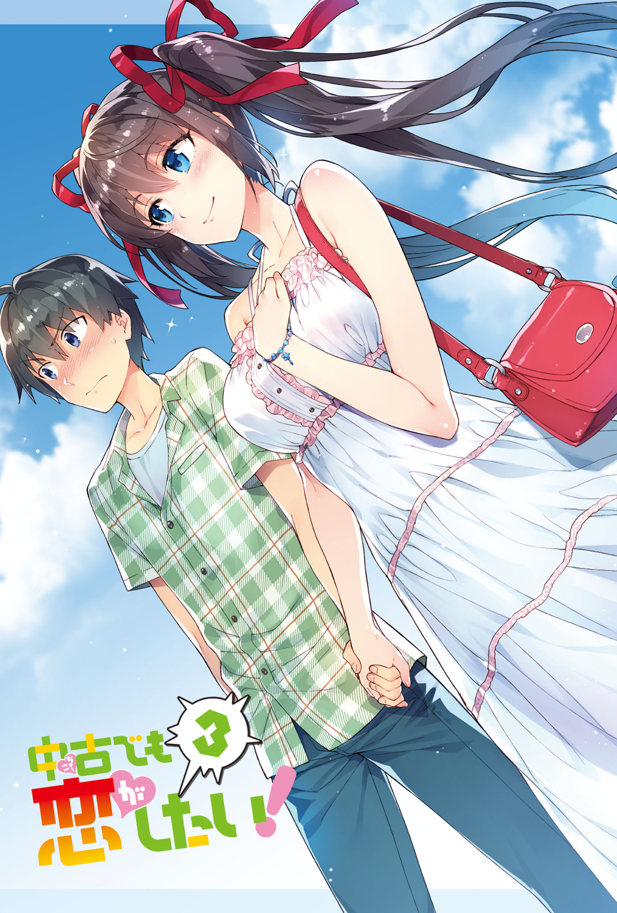
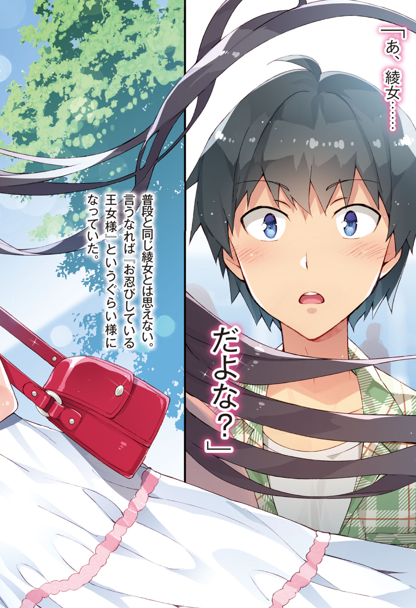
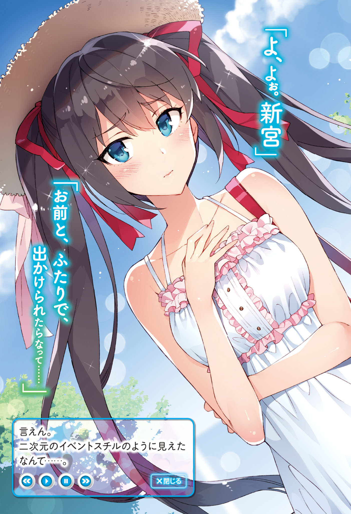
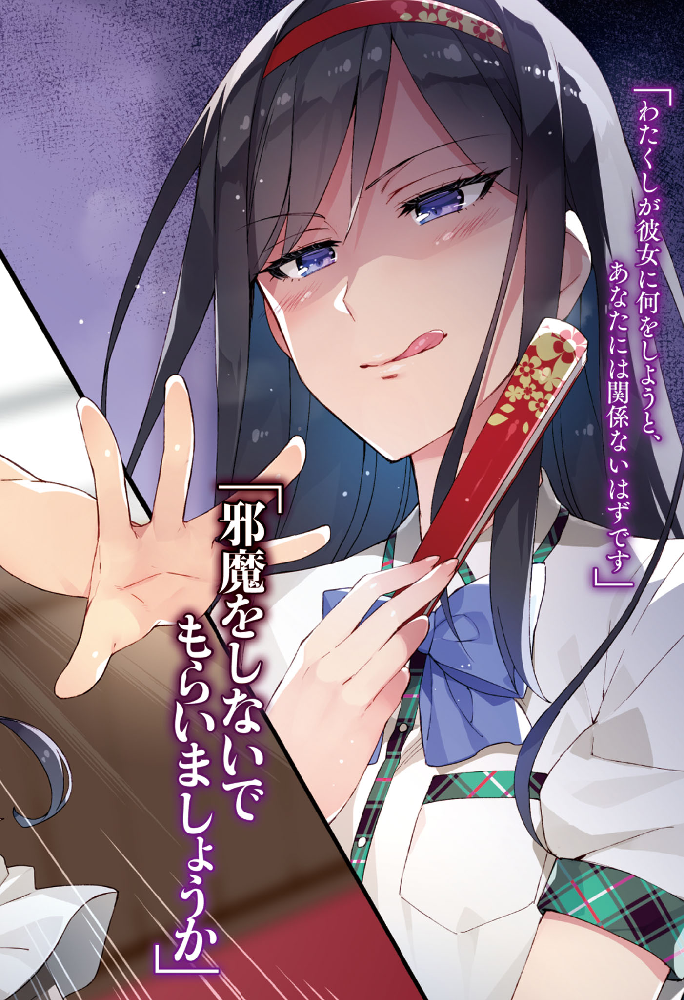
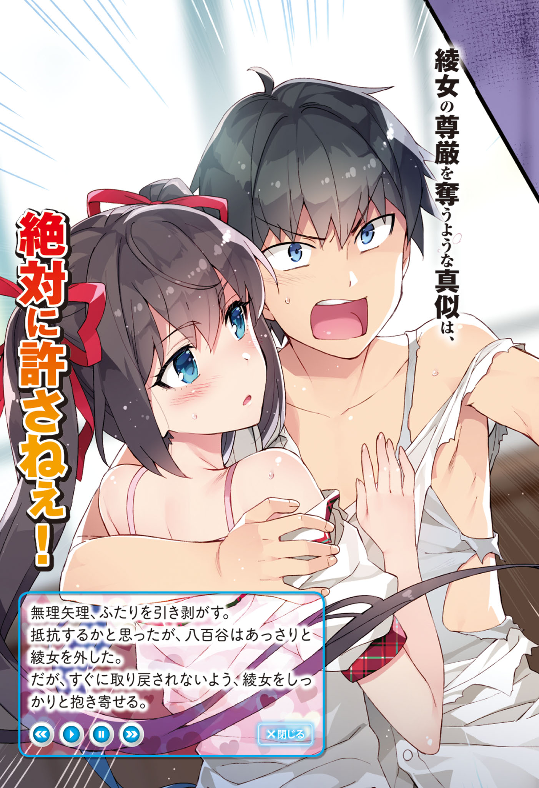
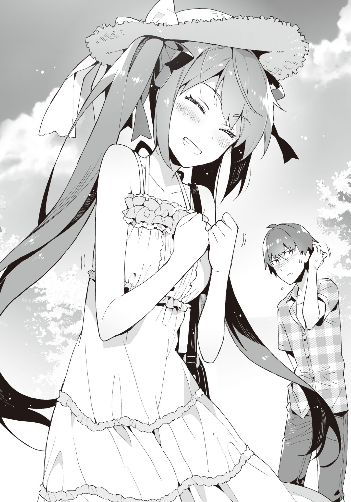
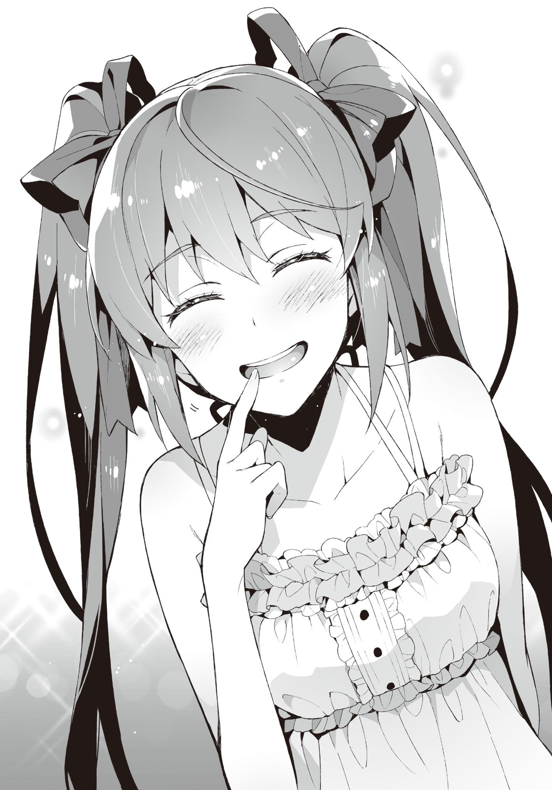
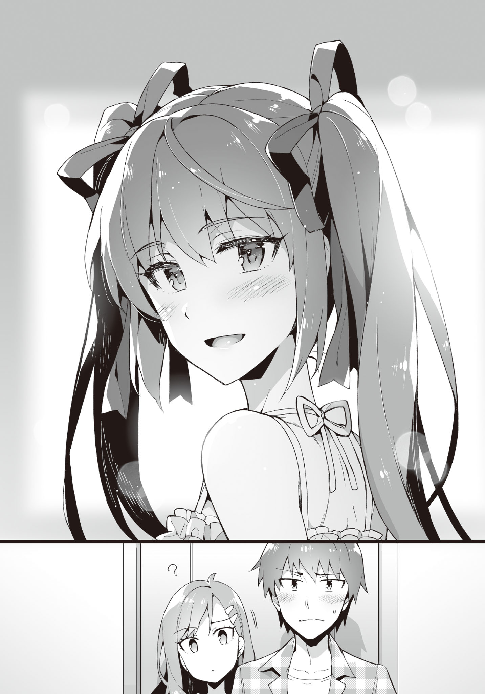
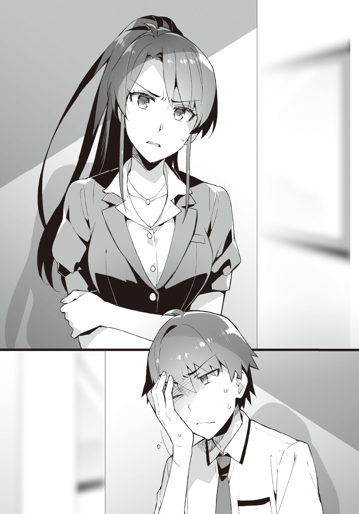

Prologue
Disqus volume 3 on this page. Feel free to join my discord server as well.
A strange premonition suddenly shook my consciousness out of a doze.
As if waking up from a nightmare, I forcefully raise my upper half.
I cautiously check my surroundings without leaving any gaps.
The floor, walls, ceiling... are all fine.
No one is in the room. Not even a single insect.
Except for the dust particles dancing in the sunlight peeking through the gaps of the curtains.
Since it was June, almost summer, the closed off room was mercilessly ascending in temperature.
It's hot.
My pajamas and shirt were soaked in sweat.
"...I woke up not because of the premonition, but because of the temperature?"
Getting off the bed, I opened the curtain and windows. The gentle breeze pushed out the stagnant air from the room.
It was around time to wanting to start using the AC, but I still had reservations as it was still June. If the body got used to the AC at this season, it will be hard to bear the actual summer heat. I decided to endure not using it.
As I switched on the electric fan kept beside the window, strong wind started circulating inside the room. Setting it to oscillate quickened the displacement of air.
"It's already summer, eh."
Recollecting the memories of the past hot days, I was enjoying the gentle breeze coming in through the window and the man-made strong winds, when -
A knocking sound reverbated through the room.
Who is it?
My family members don't even bother knocking anyway.
They don't listen no matter how much you tell them to knock before coming in. Honestly, I want to put on a lock. It's troubling when you can't play your eroge in peace.
Time kept passing by as I was fed up wondering who came by. I couldn't think of words to reply with.
And then, the door slowly opened... as if it couldn't be helped since there was no response. They were very considerate to not make any sound. Judging from this, they were definitely not any of my family members.
The person who entered the room was,
"Oh? Were you awake?"
Ayame.
Ayame Kotoko,a classmate. The sharp glint of her eyes had toned down quite a bit compared to before, and seemed to be more gentle now. Her hair had also grown, making the twintails slightly longer than before.
However, the facial expression on the healthy looking skin was that of puzzlement, or maybe discontent. It seemed like she was not satisfied about something.
"Good morning, Aramiya."
"...Good morning, Ayame."
I said so without much thought, but it wasn't the time to exchange greetings.
Why is she at my house as if it's natural? It's not as if she's freeloading here.
... Nope, not even worth thinking.
It's probably my sister, Kiyomi wo called her in. I know her pretty well.
"Although I thought I could wake you up today as well..."
"That's unfortunate."
As if one would be woken up early as easily an eroge protagonist!
Is it that? Did I wake myself up from the premonition that she was about to come?
It's bad for my heart if she's the first thing I see in the morning. Waking up on alarm is the best.
"Tch. Then at least reply when I knock."
Well, that couldn't be helped since I was bewildered about who had come to visit.
More than that, I was curious about something.
"Ayame"
"Hmm?"
Ayame was wearing her uniform as usual.
It was not the modified uniform that she used to wear. Moreover, it was the season for the change of clothes, and she was in her summer uniform. It was designated by the school.
It's almost summer, and there was no mistake since it was a half day. The problem was -
"Why are you wearing an apron?"
She had a cute looking white apron with frills on. While holding a ladle.
Apron on top of uniform, is just too much like an eroge situation. Have some prudence!
"Oh, this? I was making breakfast, that's why."
"Hmm? Breakfast? Where of?"
"Your house's."
"Why?"
"It was a request from your mom."
"......"
Whoa, hang on!
This was a bit intense for a wake up prank.
It was more shocking than being woken up in the morning.
"Seiichi, wake up fast~" "Wake up already, you damn virgin!"
My mom and sister Kiyomi peered into my room together.
Mom with a satisfied smile on her face, Kiyomi with an apparent dissatisfaction on her face.
"Why are you making her cook breakfast?"
"I tasted it a little, it was delicious~"
I wasn't asking about the taste! Rather, I already know about her skills!
"Actually, aren't you also a happy person to have such a girl making breakfast for you!"
"This virgin doesn't deserve all this. My first time believing that god is unfair."
"No no no! What kind of nerves do you have, making my classmake cook breakfast!? Or rather, why do we have something like a frilled apron!"
Think about your age! Not that I could say that out loud.
"We didn't really force her to do this?"
Mom gave a wink. So frivolous unfitting her age...
"Ah, I can guarantee that it's tasty?"
Ayame appealed to me while concealing her mouth with her ladle, showing a lack of confidence.
Where have I seen this scene before?

This... is she trying to mimic some eroge sprite? No, that's not it. This composition was that of a special CG.
"OK OK, Seiichi. Quickly change and come downstairs. The plates are already set up."
"Virgin, you have too much blessings, so at least move briskly to not inconvenience others."
The two climbed downstairs after saying whatever they liked.
"T-then, I'll finish up cooking. Come down fast, OK?"
"Ah, Okay..."
And then Ayame left my room.
After all that hustle-bustle unimaginable for my life until now, it became quiet again.
The only thing that came out was a long sigh.
To think my house would be thrown into this much disarray...
I probably should have dad say something strict about this. For my own morning peace.
While heading towards the living room after changing,
"Ohh, this is tastier than our household! Where did you pick up cooking?"
"Hmm, from looking at mom's recipe notes... and also elder sister taught me some."
"We'll be happy if you come over as our bride..."
Ayame turned deep red after being told that.
Dad seemed to have been completely enticed.
"D-dad? It might be better to think about our appearances a little..."
I whisper so as to not being heard by others.
"What are you saying? It is definitely good to have a girl with good relationship during school days. Otherwise your marriage might get delayed. God knows what would have happened to me had I not met your mom. Make sure to maintain a pure and proper relationship from now on too."
I guess I should express thanks for his opinions stemming from personal experience.
It was not an atmosphere where one could declare something like "I'll marry a 2D girl, so please give up on me getting a lover or a successor".
If I said that, the three of my family members would make me listen to heart scraping lectures while sitting in seiza.
"H-how is it, Aramiya? I made sure the seasoning is according to your preferences."
Ayame asked me with a mixture of confidence and unease on her face.
And, the three others sent me death stares that conveyed "you know what'll happen if you say it's bad, right?". You're all scary!
"...It's delicious, really!"
"I'm glad!"
Ayame showed a broad smile.
It was also troubling that the breakfast was tastier than usual.
This was probably how Toyotomi Hideyori felt while filling up the outer ring of motes around his castle.
TL Note: check out this article on britannica. Here is the important part.
Chapter 1: Please listen to what I have to say!
Disqus volume 3 on this page. Feel free to join my discord server as well.
Part 1
It was early summer. It wasn't that hot since it was the morning, but it'll slowly get worse from here.
It was not yet time to start the AC, so without wind coming in through the windows, the classroom would become too hot to concentrate properly.
"Electric fans are the best for this temperature, right? Wish they installed them."
Ayame, who walked together with me to school, said so after passing through the school gates.
"The strong winds of a circulator is also good. Well, even electric fans would turn over the pages of the textbooks or notebooks, hindering concentration."
Plus, it's okay while sitting inside the classroom, but during break time the girls will be troubled with the fans playing mischief on their skirts.
Boys being boys, would also do the "We are aliens" gig in front of the fans. No doubt there.
TL Note: "Wareware wa Uchuujin da" or "We are aliens" gig is when you keep an electric fan running and let it distort your voice. You must have done it when you were small. xD I remember this scene from Denpa Onna to Seishun Otoko. Basically, something elementary school children would love to do.
"Wish the season to turn on the AC comes fast."
"Wait, where did you even go while skipping classes during our first year? Wasn't it hot everywhere?"
"I'd mostly be in the infirmary. It was really cool and comfortable to sleep."
Oh, there was that option too. Not that it's useful for me.
"How did the health teacher not bat an eye at you skipping classes..."
... Long story short, the health teacher also was also scared of her, so she had to hold out.
"I-it's not like I was a hindrance. I left the bed whenever someone who was actually injured needed it."
"Is that so."
We reached the entrance while talking about Ayame during our first year. After changing to indoor slippers in front of the shoe lockers, we headed towards the classroom.
"Whew..."
"You always get nervous right before entering the classroom these days."
"No, I mean..."
"It's fine, just get in already!"
After being forcefully pressed on by me, Ayame opened the door and entered the classroom, still with a cramped face.
"M-Morning"
She greeted everyone reservedly.
Then,
"M-Morning, Ayame-san." "Morning, Ayame-san." "Mornin' mornin'!" "Good morning."
Nishihara, Class Rep and the other girls, and
"H-hey, morning." "'Sup." "Again with Aramiya, I see. It's become all natural now, eh."
Matoba, Mikamoto and other boys among the classmates replied back.
Since Hatsushiba's announcement (The boys secretly called this event "Hatsushiba-on-stage"), their attitude towards Ayame had softened to the point of them being able to exchange greetings.
Ayame herself still wasn't used to this, and many classmates were throwing puzzled looks, but it was decent progress.
"Haha, it really feels nice when people return your greeting. Thanks a lot, Aramiya."
Ayame told me in a voice audible to only me.
"It's fully thanks to Hatsushiba though. I didn't really do anything."
"No, you created the chance for Yuuka to act. So I'm thankful to everyone."
She then headed towards her desk with light footsteps.
Well, it's all good if Ayame is happy.
The fourth period ended, and the sun was about to ascend to the highest point.
It was lunch break, and more than half of the classmates had run off to the canteen or school store. The rest were relishing their lunch by sitting across their familiar friends and opening up lunch boxes.
Glancing out of the window of the classroom, one could see the strong sunlight flooding the cloudless sky. If used as an eroge background, the blue sky would have seemed like the artist had cut corners.
Although it was already monsoon, there was little rainfall this year.
"Ah-☆ Tasty~"
A nonchalant voice entered our ears.
The source was Suwama Ibu, who was holding a vibrant lunch box with a happy expression.
The twintails made of blonde curly hair had an amazing volume. The hair clips tying them were shaped like candies, inducing a fairytale-like atmosphere. There were star-shaped marks on her nails, and the accessories on her uniform and fingers were all over-the-top. It was a figure of a very modern gal. If it wasn't for our school, the public morals committee would definitely have been exasperated at her get-up.
"... Isn't this a heavy atmosphere?"
However, my close friend, Tozaki Keita was making an awkward face beside me, looking at Ibu who was acting merry for no reason. Although it was a rarity to see him bring his own lunch box, the chopsticks holding his side dishes were mildly shaking.
"Is that so?"
Beside him, Hatsushiba Yuuka had a sour look on her face. Her displeasure was apparent. Tozaki who was sitting beside was making a painful face, as if unable to bear her curt tone.
"Suwama, you seem very happy while eating."
Ayame, lined up next to Hatsushiba, was likewise eating her lunch.
Sticking together two desks, we were enjoying our lunch boxes, sitting in a circle.
... However, Hatsushiba alone had a facial expression baring hostility.
I remembered how Tozaki had shuddered when Hatsushiba proposed having lunch together.
From the beginning, Hatsushiba was thinking about Ayame first and foremost. And, Ibu could only be seen as an enemy who had tried to harm us before.
"Hatsushiba-cchi, the food will taste bad if you make such a scary face?"
"Please don't worry about it. This is how my face is."
Hatsushiba was making a face unfit for a voice actress at Ibu, who was oblivious to the disgust directed at her. Was it an act? Or was it her characteristic? Scary...
"Ehh, really? Even though Hatsushiba-cchi is so cute..."
"... I'm not cute."
"Muuu. Let's be good friends! It's more fun that way, right?"
"......"
Hatsushiba looked like she'd get the popped-out-veins effect if it were an eroge.
Tozaki and Ayame, probably sensing that atmosphere, kept their mouths shut.
I was also keeping quiet. Mob characters don't speak up while heroines are prattling among themselves. By just speaking up to provide information that can become hints, they hit their assigned dialogue quota. I also want to be like that.
"Come on, Seiichi~, you also tell her something!"
... Is how it should have been, but why did this girl have to stab at me...
"Don't know. Do something by yourself."
"You meanie!"
It's not my responsibility anyway, you reap what you sow.
TL Note: Learned what the above proverb is in Japanese: it's 「身から出た錆だ」, which literally means "it's the rust from your body".
That being said, this dicey atmosphere while eating did not do Ayame (her reputation) any good.
While the misunderstandings of our classmates had been resolved, her image in the entire school had not changed that much.
Although, good rumors were just starting to float around, and joint classes like Physical Education had helped improve Ayame's impression among the neighboring class.
Eating lunch together was to prevent the classmates from relapsing to the misunderstandings, it also had the effect of warding off the worsening of her impression on students from other classes.
Therefore, it was quite likely that the countenance of eating as if it was the last supper might create some improper rumors about Ayame again. Plus, the food also became unappetizing due to the atmosphere, which caused our feelings to go down.
"... Hey, Hatsushiba."
"... What? Aramiya-kun?"
It was a bit scary. Her sullen aura was piercing through my skin.
I started regretting talking to her. However, giving up midway wasn't an option.
"Can you just be a little accommodating?"
I timidly said as if fumbling around.
"... I'll be careful if Aramiya-kun says so."
"It's a request from me as well, Yuuka"
"I can't turn down Cotton's request... but..."
It seemed like she still wasn't fully convinced. She showed a troubled attitude while furrowing her eyebrows.
Still, her expression more or less softened.
"Mhm, Hatsushiba-cchi is a cutie~☆"
"Nope, not really."
Well, Ibu kinda ruined it though.
After all, we finished our lunch boxes midst the uncomfortable atmosphere.
"Aramiya-kun, can we talk?"
Hatsushiba secretly whispered into my ears as soon as we returned the desks to their original positions after finishing lunch.
"Y-yeah, sure."
There was still time before the lunch break ended.
The place where Hatsushiba led me to was the landing of the stairwell in the edge of the school building.
"Hey, Yuuka still hasn't consented to having that girl in our club."
"It's apparent on your face."
Hatsushiba pouted a little at that remark.
It was a little amusing, like a kid.
"Why did you let her in?"
"Hatsushiba must also have noticed already... the weirdness of the rumors floating around last time."
rumors like Ayame loving to take part in orgies, or eating up girls regardless of gender.
It was unusual how it had spread through all of school in the blink of an eye. It was not normal how fast it spread out, and how easily people believed in it.
"I understand that, but... wait, didn't she say she wasn't behind spreading it around? Is it really necessary to let her in..."
"It is highly probable that she spread that rumor, while not realizing it herself."
"So you want to say she just acted as an intermediary?"
"That's right. Or maybe a middleman. That is, she might have caught the virus and just spread it around. In that case, the problem is the source of that virus."
"Perhaps, there's someone close to her who is intentionally spreading rumors about Cotton?"
"It looks like that to me. Since they're hiding this skillfully, it'll be hard to sniff out their tail. However, that girl is needed to figure out the culprit and their reasoning."
"But in that case, isn't it unnecessary to have her enroll in our club? It should have been enough to just be careful around her..."
"Ayame also said this, right? It is unclear what that girl will do if we leave her out of sight, so it's safer to take her in. Then there would be no worries of her doing anything strange. It would be unbearable if she turned into a vector like a mosquito carrying malaria or a black rat."
"Muu-"
I did explain my reasoning for the time being, but Hatsushiba's expression was still clouded, as if not entirely convinced.
She really didn't intend to forgive her that easily.
Ayame looked like she already reached a decision. Sometimes the surrounding people get more heated up about things like rumors and injuries, after all.
"...Hey"
Suddenly Hatsushiba let out a quiet voice.
"Hmm?"
"That person was Aramiya-kun's first love, right?"
Don't remind me what I don't want to remember...
"Y-yeah, well... she's the girl that didn't show up after calling me to a faraway park via a love letter..."
"Yeah, I heard that. Suwama-san sent out that love letter, but she herself was being tricked, right?"
"She is a complete idiot who never even thought about her actions."
She believed in the "that'll make everything go well" spell... to believe that calling one to a faraway park, making him catch a cold, and then not talking with him at all completed an engagement, was clearly ridiculous.
However, that girl had believed in that.
There was no way of describing this person other than an idiot... you could sugarcoat it into "pure" I guess.
"Umm. It isn't like... you can't forget about her, right?"
"What?"
Hatsushiba's words were incomprehensible. Understanding them took some effort.
"You don't want to reconcile since the misunderstanding was resolved, or something?"
"That's impossible, you know? Not even in jokes. I have severed all connections with 3D."
"... Really?"
"You're doubting me too much. First of all, what do you mean by reconciling? We didn't have that kind of a relationship during elementary school. The talks about engagement and so on are her arbitrary delusions."
In actuality it was mutual love, but it was that. The saying pops up in not just eroge, but also RL.
First love doesn't bloom.
I myself didn't have any romantic feelings for Ibu anymore. First of all, love during elementary school is as fleeting as measles.
"Then it's OK."
Hatsushiba heaved a sigh of relief.
However, she pointed her index finger at me, as if not letting it go yet.
"But, Aramiya-kun must not decrease his time with Cotton."
"How did Ayame pop up in this conversation?"
"In terms of priorities, please follow the order of Cotton, Yuuka, Suwama-san."
"Wait. What priority are you talking about..."
She's probably totally misunderstanding something.
Everyone was trying to fill up my outer moat... do they want to tear down my castle that much? It seemed like they would invade and fill up the inner moat as well if I was in a daze.
"Still, I don't think it is necessary to have her in our club just for the reasons Aramiya-kun gave."
"You're still saying that..."
"Well, that's because..."
She still had complaints even after explaining so much. It felt more like she was sulking, but Tozaki would probably say "That expression is also cute!" or something.
"Letting her in was also for a few more things. To protect our room, and to make sure the before hostile Ayame and Ibu are together, as that would be convenient for purging the rumors..."
As I had mentioned before, it was important to keep her under our watch.
But that wasn't all.
"The culprit might also try to use Ibu again. It would be the best if we can pin them down at that time."
Hatsushiba just tilted her head quizzically.
Well, the other side would also not move until the excitement died down. It was fine if they didn't show up during the first semester too. In that case we needed to wait patiently.
As we returned to the classroom, Ayame and Ibu were chatting like friends for some reason.
"I think this year's popular summer coord is going to be a refreshing one-piece~"
"What is summer coord?"
"Coord is short for coordination! As in, the dress most fit for summer!"
"You seem knowledgeable about those stuff."
"Of course! All girls love fashion. Appearance is important!"
"Depends on the person, right?"
"Apart form that, there's also overalls, natucute frill blouses, or girly one-pieces~"
TL Note: Okay okay wait. What are these terms even. If you are interested in learning more, just google these. I have zero idea about fashion words in Bengali, leave alone Japanese lol. But well, for your curiosity, here are your Overalls, Natural Cute Blouse (without frills), Girly one-piece.
{kind=link}
{kind=link}
{kind=link}
"... What is that? Some sort of incantation?"
TL Note: IFKR?
Well, it looked like Ibu was one-sidedly talking to Ayame.
"Ayame-cchi's hair is suuper pretty, so those types of clothes will definitely fit you~"
"Don't touch me."
"Ouch. No U~"
Ayame slapped Ibu's hands as she was trying to touch her twintails.
"Come on, you won't lose anything by just touching~"
"I don't like being touched by people."
Leaning in and acting all clingy.
Really, Ibu is really friendly with everyone. There are people who like that about her too.
Actually, a lot of things had happened (like the exposure of my past or her suspension), but Ibu's reputation was recovering little by little. Some of the guys would secretly blush while talking too.
Not to mention though, if the incident about her trying to reverse rape me got leaked, our classmates would probably all be shocked. Although there might be some with strange tastes who would like it.
To each their own. Everyone has different tastes. Denying them is the same as denying my own inclinations.
It was needless to say though, I couldn't comprehend them. Keep your mouth shut, silence is money. The people from old days have spoken wise words. It was understandable that they would be quoted in eroge.
"Ah, Seiichi, welcome back~"
"Oh, did you finish talking with Yuuka?"
"Yeah, we're done. Rather, aren't you guys pretty friendly already?"
"This girl just keeps talking occasionally."
While making a troubled face, Ayame didn't look like she disliked it that much.
"Ibu has also become pretty attached to Ayame..."
"Yeah, because I like Ayame-cchi! I'm also jealous since she would become cuter if polished~"
Ayame was a bit troubled at being directed good will, but she didn't seem to completely dislike it. Otherwise she would have glared daggers at her anyway.
It was also possible that Ibu did a full 180 from disliking Ayame to liking her that much. It's said that like and dislike are two sides of the same coin, after all. "The exact opposite of liking is to act indifferent." A line used in a myriad of eroges, was apparently due to Mother Theresa.
While Ibu and Ayame were getting along with each other, new bad rumors about Ayame would not start spreading. It was a good thing.
"Hmph!"
Nevertheless, Hatsushiba was still cold towards Ibu. She also probably had something to say to Ayame, who was (to onlookers) having fun while talking with Ibu.
That being said, she was happy that Ayame was having fun; it was probably complicated. She probably felt like a mother who was uncomfortable seeing her daughter starting to go out with a delinquent.
Both Ayame and me have gotten over it already; it would be great if Hatsushiba could also do the same.
"A woman's feelings are complicated..."
The Tozaki beside me said with a satisfied expression. You really aren't one to say though? Don't try to make a face like a playboy with a lot of experience.
Well, I also agreed on the fact. It was really impossible to understand.
The bell rang as we were talking, signaling the start of the languid afternoon lessons.
"Well then, that's all from my end. Class Rep, if you please-"
With the sugary voice of Oohara-sensei, the homeroom ended with Class Rep's "stand up - bow". Today's classes were now over.
The class was wrapped up in hustle and bustle as always. "Where do you wanna go today?", "Let's go to the club!", "I'll be late to cram school if I don't hurry" etc - everyone had different goals.
"Let's also go to our room."
"Yep!" "Ya~"
Hatsushiba and Ibu replied to Ayame.
Then, the three girls glanced at our direction.
"Yeah, yeah. Tozaki is also coming, right?"
"......"
Although I asked him so, Tozaki didn't reply, making a difficult face.
This guy must be holding back from saying something.
"Oi, Tozaki?"
"Ah, Ahh. My bad. Club, right? Let's go."
Well, we could leave it for later. Either way he'll speak up sooner or later.
We left the classroom together, as usual. None of us had cleaning duties today as well.
There was nothing in particular to do, but let's go to the club and spend time in peace. Maybe I could play some eroge after a long time. It would help heal my heart from the fuss during lunchtime.
"Ayame-cchi! What should we play today~"
"It's hot, don't stick to me!"
While walking down the hallway, Ayame and Ibu were frolicking around as usual, walking in front of Tozaki and me. Hatsushiba voiced her complaints from beside us. It was that type of a scene.
Recently, this had become the norm.
"... Hey Aramiya, you got a moment?"
Tozaki called me as if he wanted to say something, when we left the school building for a moment.
He brought it up unexpectedly early.
"Yeah sure. You have something to talk about?"
Tozaki nodded, and glanced at the girls meaningfully.
I could take a guess.
"... Ah. Could you three go ahead first?"
"'Sup sup, going to the bathroom together~?"
"Whatever, go ahead before us. Also, girls shouldn't say that sort of stuff."
"Hey, Suwama. Let's go already."
"Yea~"
Ayame took Ibu to the wing where the literature club assembled. Hatsushiba also followed, with a curious expression on her face.
Tozaki and I went over to a place where there were no people around. Tozaki had an awkward expression.
"... So, what's up? I get the feeling that most of the time it's troublesome when you call me to talk."
"Well, yeah. It's pretty troublesome. No, this time I don't have a lot of information... but something curious happened."
Tozaki was scratching his head, as if apologizing for whatever he was about to say being too gloomy.
"Is it that again?"
"Yeah, it's that again. Rumors about Ayame are stirring up again."
"What is it this time? Something like Ayame is an assassin or an amazoness?"
TL Note: amazon = a big, strong, warrior-like woman, someone who reminds you of the mythical Greek women-warriors, the Amazons. I think in Japanese a woman amazon is made into an "amazoness", but it's not an english word, amazons are women by default.
No, but he did say it's not something too worrisome..
Prompted on by me, Tozaki conflictedly spoke up.
"Ayame and Ibu are a yuri couple..."
Yuri. The perennial flower that resembles a trumpet, gives off a sweet fragrance that can choke you if you sniffed at it. They come in a variety of colors such as white, yellow, red, or pink. Personally, I liked white lily the best.
However, for otakus, 『yuri』 was a metaphor for something entirely different.
"By yuri... do they mean girls loving each other? Like in 『Hitohane』?"
"Yeah, that type. If you ask me though, I like 『Raspberry Panic』 more."
The anime that gave birth to the phrase "Kimashitawaa". It was also made into a game, if I remember correctly.
TL Note: I think Hitohane is referring to 2015 eroge called Kimihane: Kanojo to Kanojo no Koi Suru Ikkagetsu, Raspberry panic to Strawberry Panic.
TL Note: Okay now what is "Kimashitawaa"? You can read a pretty descriptive explanation here. Basically "Kimashitawaa" was used by Suzumi Tamao in only a scene, as a substitute for "Kitaaa"/"KTKR" which means "It's here!"/"It came!" in english. Well, apparently it's now a slang that can be used when you find out that one of your woman friends is in love with another woman (or a trap). Kinda like a substitute for "Ara^~" (when two girls do kyakya-uwauwa). Research it more on your own if interested. xD
"Why such a rumor again..."
"Probably because the two flirt with each other a lot?"
"But don't other girls also frolic around to a similar degree?"
"That's why I was curious about it."
Only a sigh could come out.
Well, I understood why Tozaki was hesitating to talk about it.
"Has it spread a lot?"
"Well, to some degree... It started propagating very fast when I noticed."
"SMH. Is that all you had to talk about?"
If it was just about that, he probably didn't have to bother about it that much.
At least it didn't worsen Ayame's reputation.
"It's only that much... but is it really OK?"
"This time should be fine, right? It'll probably calm down very soon. Plus, it's not something that portrays Ayame as a scary person."
"Previously there was a rumor about her eating up boys and girls regardless of gender, remember?"
"But, if it's yuri, then it's not that much of a minus point."
"I feel like that only applies to otakus though..."
"... Well, anyhow. It's a problem between those two; we can't really do anything about it. We can ignore it since there's no real harm. I guess we could ban her from being pushed by Ibu's flirting, but that's pretty much it."
We headed towards the club room as Tozaki looked like he was convinced for now. After all, Hatsushiba could become scary if we didn't return as soon as possible.
Still, what club are we again? Well, there was no mistake in saying that it was a gathering to exterminate rumors about Ayame though...
We headed towards the club room after finishing our discussion.
"C-Can I have a moment?"
Just as we were about to enter the club room, an unfamiliar boy spoke to us.
Somewhat gloomy, it felt like he was more like one of us, than not. However, he wasn't an otaku; he didn't give off such a vibe.
Tozaki was shaking his head. If they weren't acquaintances, just who was this guy?
"... Me?"
"Yeah, I have something to ask you..."
He was making an embarrassed face.
It seemed like he was about to confess or something. No no no, stop it please...
After a few seconds, he spoke up as if he had straightened his resolve. With an expression resembling that of a samurai about to challenge a once-in-a-lifetime battle,
"Is it true that Ayame and Suwama are gay for each other?"
It was an astonishingly idiotic question.
It was sad that there were people who believed in the rumor we were talking about earlier.
"Nope, not at all. Where the heck did you hear that from?"
"N-no, people were talking about it, so..."
"What people?"
"P-people as in, my classmates and such..."
Apparently he's from our neighboring class. Probably they had seen the two during the joint PE classes. If they were frolicking around during the girls' PE classes, then it may have permeated from them to the boys...
"It's totally a groundless rumor. Anyway, what's wrong if they were gay for each other?"
"Umm, n-no, it's nothing. Sorry about that!"
The guy sped away.
"Just what was that about?"
Tozaki shrugged.
"Aramiya. I can only get a bad premonition out of this."
"Your premonition might come true, so don't raise the flag..."
As we entered the club room after wrapping up the pointless and questionable matter, we noticed Kiyomi inside, along with Ayame, Hatsushiba and Ibu. She was silently sitting in her chair, probably already finished with greeting the others.
Other than them,
"You guys arrived at last."
A rare sight was awaiting us.
"Kotani-sensei?"
Tozaki reacted as if he received a sneak attack.
Kotani Kiriko. This is her second year as a teacher here, joining right after graduating college. She taught physics. And, she also was my cousin from mom's side.
With her suits on, she looked like an up-to-the-task OL. Fundamentally she's a lazy ass, but her impression in school is that of a nice and cool teacher. She has everyone tricked.
"What's it, Tozaki? Is it weird for me to show up?"
"N-no,... you're very welcome, ahaha..."
"What's up with that awkward expression, Aramiya?"
"No, nothing... you're our advisor, so there's nothing wrong with you being here, Kotani-sensei."
One should act with discretion in front of other people. At home we call each other Seiichi and Kiriko-nee, but she was probably paying attention to the fact that we were in school.
"So, do you have some business here?"
"Since I'm your advisor, normally I should be here, right? Well, I'm also here to observe you guys so that you don't do bad things."
TL Note: Like playing eroge.
"What bad things are you talking about?"
"Several things. Such as illicit sexual relationships and stuff."
Then, she glared at me. Even though there's nothing like that.
"Well, students smoke or bully each other in places where our eyes cannot reach. The teachers are also being more vigilant now. Since the blame always falls on us when such incidents happen."
"You don't really need to worry about stuff like that here."
Please turn a blind eye to the 18+ games here.
"Even then. Some of the teachers are making a fuss about things. Especially, there are people who say 『a club for games is outrageous!』"
"Are they living in caves? Recently e-sports are also getting popular, so it's nothing out of the ordinary. Rather, if there are two separate clubs for baseball and soccer, then there should also be clubs like 『LoL Club』 or 『Starcraft Club』."
Well, we didn't do e-sports though.
"Well, if this club has anything to do with e-sports, I'll talk about that to them though."
"......"
"But still..."
Kiriko-neesan looked over the club members present in the room.
"This is a very strange lineup."
Now that she said it, there really was no uniformity among the members.
"In the end, what do you guys primarily do here? Not gaming, right?"
"We're focusing on exterminating rumors about Cotton... Ayame-san."
Hatsushiba informed thus with a nervous look.
"Ah that's right, I heard you guys were looking to offer assistance to us a while back. Are you still doing that?"
"Yeah. The misunderstandings have only been cleared up among our classmates, so..."
"So is it fine if I bring over some of the teachers' work to you?"
Hearing that, Ayame raised her hand.
"Bring in as much as y'can... you can!"
Kiriko-neesan lifted her lips up into a smirk. Damn, this is a bad omen!
"O-oi, Ayame?"
"Aramiya. Ayame herself is asking me to assign work. You don't have to worry about anything?"
With an angelic smile on her face that read "leave it all to me!"
However, I could see through her facade... to the devil deep inside this person.
"Yes, please!"
The ignorant Ayame said so vigorously.
... SMH, this is why I was trying to resist. My feelings were heavy, anticipating what kind of work she would have us do...
"Well, there shouldn't be anything during the first semester, so you can have peace of mind. My special duties will start from the next semester. Do look forward to it."
I was not looking forward to it at all.
Kiriko-neesan left, as if after planting the seeds of unease.
"Hey Aramiya. Did we perhaps end up accepting something troublesome?"
Tozaki seemed to be forcing a smile.
"Did you realize it just now? That's why I was opposing it."
"Then say that earlier!"
"I did so! You guys are at fault for not see through her real nature!"
Ayame spoke up from the side in response.
"Well, she shouldn't be that absurd, right?"
"Innit? She seemed real kind!"
Ibu was totally in agreement with Ayame. "Kind", eh...
During elementary school when she had learned about my story, she had said "I'll sink them to the bottom of Akashi strait!" pretty indignantly. Are you sure about your impression, Ibu?
TL Note: Akashi Kaikyou is a strait in Kobe famous for sinking several ships in the past due to its severe storms.
... Well, whatever. Truth speaks silently. It didn't look like Kiriko-neesan had that much misgivings about Ibu too.
"Rather than that, we must properly think about Cotton's rumors today as well!"
"Yeah, yeah."
While letting the chairperson-attribute Hatsushiba lead the meeting, we started thinking about ways to exterminate rumors about Ayame today as well.
We wouldn't have to go through so much hardship if it was that simple to come up with plans though...
Part 2
It was morning. On my way back from the bathroom, I noticed Tozaki nonchalantly coming late to school.
"Yo, Tozaki. It's rare to see you this late."
"I kinda slept late yesterday... The thing from before got announced, right?"
Of course, the thing from before was an eroge.
Its title was "Ikusa no Yaiba, Yurihana no Kouki". It was made by the same publisher as "Princess Weekday", the first eroge that Ayame had played.
TL Note: Princess Holiday and Senmomo are both famous games made by August. They also made Fortune Arterial (referred to in the text somewhere in Volume 2 too), Yoake Mae yori Ruriiro na, Aiyoku no Eustia, Daitoshokan no Hitsujikai. You must have heard of at least some of these titles... Basically the author is an August fan (as me lol).
"While staring daggers at the site, the day had changed without me noticing. I think I got a taste of something frightening."
"The release date is still not decided, right?"
"Even then, when it comes to that publisher, your imagination keeps gushing forth... It makes me excited and gives peace of mind at the same time."
Be that as it may, I couldn't make fun of Tozaki.
Albeit being only a teaser site, it was not unusual to check the source code of the homepage to check for hidden information.
Anyway, it was good that it wasn't getting released in summer. If it had overlapped with "Destiny Zero", I'd have been troubled for at least a day in deciding which game to play first.
TL Note: I'm pretty sure Destiny Zero refers to Destiny Night/Zero from Volume 2, but I can't find an eroge that was released in 2016 summer that has a similar sounding fantasy name. Well, when I read it in Volume 2 I was pretty sure Destiny/Night refers to Fate/Stay Night, and this would then refer to Fate/Zero, but that was released in 2013. Well, do let me know if you have an idea on what these games refer to! xD
Is it going to be in fall or winter? Or maybe spring... I'd have to concentrate on it for a week. Let's prepare for it in advance.
"You are really attracted by princesses after all, Tozaki."
"Yep! They also have a loli character, so they cut no corners."
"Deepen your bonds with the girls, and then fall in love with each other. There's no words other than 'supreme' to describe it."
"Our imaginations can only run wild till the release date..."
Whispering to each other as if detectives on stakeout, we returned to the classroom.
Then, we were met by a hunch-backed guy blocking our way.
"H-hey..."
It was again another unknown entity.
While it was different from yesterday, he emitted the same kind of aura. There was no proof, but this person might be an otaku himself.
I looked towards Tozaki for confirmation, but he was just shaking his head. Then, who was this person?
"...What's up?"
I pressed on as he looked confused. We'd be late for homeroom if we didn't hurry.
"U-umm, can you give me one of Ayame, Suwama, or Hatsushiba?"
"...What?"
"N-no, other girls are also fine. You guys have others, right?"
Is this person actually an ancient Sumerian, and can't speak Japanese?
Other girls? We also have others? Please make some sense.
"Wait. I don't see where this is going. Just what are you trying to say? What does 'give me one' mean? Do you need help for your club or something?"
"Don't you have many girls serving under you? Give me some too!"
Wait, is this guy talking about 2D!? Well, in 2D I've literally crossed the boundaries of harem, let alone having girls wait upon me...
... but it's totally different as Ayame's name popped up.
"I don't know what you're talking about. What was that even? Where did you hear that rumor?"
"E-everyone is talking about it."
That again... Is there someone named "Everyone" in the school? Almost like America, that person's name has been popping up a lot recently.
I laid my gaze on the guy in front, after heaving a deep sigh.
"It's a baseless rumor. Tell that to the person named 'Everyone' as well."
"Wait, am I not good? Do you have some Terms and Cond..."
"BASE-LESS-RU-MOR."
Under my forceful declaration, he shut his mouth while being quite discontent.
Tozaki and I continued towards the classroom, walking around the guy who hung his head.
"What was that about? Isn't it a bit strange ever since yesterday?"
"Well, it does sometimes look like Aramiya is being served by the girls..."
"... You serious?"
"jk lol. If that was enough to look like you were being served, then our classmate Mikamoto Atari would be a harem king. The person himself is apparently troubled that he gets friendzoned, though."
That's right... Mikamoto was now frequently talking midst the girls, all of a sudden. It wasn't like he was popular, but probably he could talk about topics that girls like, and would get dragged into their conversations.
While we were walking with an unease lingering in our hearts, some other guy was standing in front of us. Of course, neither me nor Tozaki knew this person.
"C-can we talk for a moment?"
"... Not again."
"A-again?"
"No, nothing. What do you want?"
Suddenly taking out his wallet from his pocket, this person pulled out a 10,000 yen bill.
While we were confused by his action, he suddenly offered me the money.
"Please show me a scene of those two entwined with each other."
... The request had exceeded my brain's comprehension capacity.
Who were 'those two'? What did 'entwined' mean? For what was I being offered money?
"Wait, I don't quite understand... Can I ask you to elaborate?"
"N-no, aren't Ayame, Suwama and Hatsushiba your girlfriends? I heard you make them entwine with each other and have opened up an appreciation..."
TL Note: Don't exactly know how to phrase this, but apparently our protagonist has opened up a hell of a sketchy business...
The abnormality of this situation was clearly standing out.
So, did this mean that a rumor about me being served by many girls had osmosed or something? That can't be it, right?
"That's why... I'll pay, so please let me participate in the appreciation event! If you need more money, I'll pay later!"
The guy started pressing on even more desperately.
"Don't you guys even think that the rumors are false, huh?!"
"E-everyone is talking about it!"
Everyone, Everyone, Everyone, Everyone, Everyone, Everyone, Everyone!
What the hell, could white become black if Everyone said so!?
I somehow controlled my urge to drive him away right there right then.
"... What kind of rumors is Everyone saying?"
While subduing my temper, I somehow wrung out that question.
The guy immediately spoke up without hesitation.
"While making Ayame and Ibu violate each other, you enjoy the scene of them being entangled."
This was too much.
For just a meager otaku, that rumor was far estranged.
"It's all a complete lie."
I brushed away the hand that was still offering me the bill.
He put his money back in the wallet regretfully. If you really want to see yuri scenes that much, just buy eroge. "Sono Kaben ni Kisu wo" or "Hitohane" have very pleasing visuals. Other than that there's also "Miko wa Kannushi-sama ni Koi Shiteru", albeit not exactly vanilla yuri. Eroge titles are just overflowing with yuri!
TL Note: If you haven't guessed already: Sono Hanabira ni Kuchizuke wo (EN: Kiss on the petals), Kimihane: Kanojo to Kanojo no Koi Suru Ikkagetsu (EN: Kimihane: The one month of girl in love with girl), Otome wa Boku ni Koishiteru (EN: The maidens are in love with me).
Driven by some strange indignation, I headed towards the classroom. Tozaki also followed suit without hesitation.
"Damn."
To think that the rumors would involve even me.
It was unbelievable how Ayame could keep up with such stupid rumors.
That being said, people should not be believing such made-up stuff that easily...
Rumors are fundamentally people believing in credible statements.
Me forcing Ayame and Ibu violate each other should be scarcely credible.
"Is there any basis... for such rumors to spread?"
"Well, maybe recently... you've been on good terms with Hatsushiba as well."
"Nah, then aren't you the same?"
"However, you're seen together with Ayame who underwent a sudden change in character. And there was also that argument with Suwama..."
It was hard to disagree when being said that.
I was definitely the reason behind the transformation in the frightening delinquent that Ayame used to be.
That I also was the reason behind Ibu's change was also engendering.
I was aware that those two held a certain respect towards me.
Especially when a ruler (of terror) admires someone else, there's a tendency for the other person to be feared as well.
I ended up being acknowledged, in a bad way. The me, who was just an uninteresting otaku. I was supposed to be standing in a much less conspicuous position...
"On top of that, the rumor of those two and Hatsushiba being yuri could easily tangle up, leading to this rumor, right? Although it's as far-fetched as it could be..."
While listening to Tozaki's explanation, I was regretting we didn't immediately take action when that rumor had popped up. We had totally failed in taking the initiative.
Even though the rumor concerned us, we had naively underestimated it...
After the classes ended, we met up with Kiyomi and headed towards the club room as usual. There were strange gazes upon us.
No, the fact that we were feeling gazes itself was unusual.
This club wing was an area only used by the literature club, so there should be few people walking around here. So only known faces would pass by each other here.
However, today people who we would normally not see, were stealthily loitering around. As if waiting for something. They looked like detectives on stakeout peeking around while concealing themselves, or like snipers completely blending into their surroundings. Their behavior was extremely unnatural.
As soon as we entered they club room, they started showing signs of flurrying around.
"Is there some sort of event?"
Ayame sent a quizzical look towards the door.
Maybe something like the final club joining event of the semester... Nah, impossible. That was far too optimistic.
"I haven't heard about such a thing, Ayame-san." "Yeah, they didn't say anything during homeroom either."
Kiyomi and Hatsushiba voiced their similar opinions.
Glancing at Tozaki, it seemed like he knew something.
"Do you know something, Tozaki?"
"Well, I asked around a bit during break time. Some people also asked me questions... Lend me your ears for a bit."
Ignoring the puzzled looks of the four girls, I brought my ear near Tozaki's mouth.
"You heard about your rumor in the morning, right?"
"Well yeah, I remember it."
『Enjoying the scene of Ayame and Ibu entangled』... and on top of that, 『opening up an appreciation event』... All of this towards the harmless me. It was depressing.
"And, the venue of said appreciation event is the club room, apparently."
So that was it.
"Because the club room is an enclosed space?"
"You won't get caught if you smoke cigarettes or pot here, after all."
No, cigarettes would definitely be exposed, right? It soaks into the walls and stuff. Mom complains about Dad's smoking a lot, after all.
"If it's in a place without people, you can always fabricate whatever lie you wish about their actions..."
One can always say 'aren't they doing X?" and attach some kind of reasoning behind it, if the person in question is out of sight. That alone was enough to give birth to rumors. If this X was something that one could see the person doing, or if it was something trivial, then it would start disseminating via gossip.
It was too bothersome.
...However, we had no choice but to endure it for now. Just like frogs hibernating during the winter, waiting for spring to come.
Gossips last for just 75 days. Summer vacation would start soon after we pull through the first semester. The rumor was of the degree that would spotlessly disappear once we entered the second semester
"...There's a lot of footsteps outside."
Ayame muttered so for some reason. "It is getting kind of bothersome", Kiyomi also flurried her eyebrows.
Listening carefully, one could really hear a lot of footsteps.
It's not as if they could peep inside. The door was also locked, and the glass on the door was opaque, inhibiting visibility.
However, we could understand that the students outside were unnaturally going and returning.
Does every last one of them want to see yuri so much? You guys, just make yourselves disappear; I wanna play my <span="ロープライスのエロゲ">low price eroges.
"Say, Aramiya. Isn't this the effect of the rumors?"
Tozaki asked while scowling.
There was no choice but to admit it.
This rumor was adversely affecting our club activities... and had the potential to upset our school life as well.
We talked about the emergence of the recent rumor to the girls camp, who had yet to hear about it.
Ayame and Hatsushiba had a "not again!" expression, while Ibu was totally unfazed. "It must be difficult for you...", Kiyomi was consoling Ayame.
"What kind of rumors about me are going around this time?"
"Ayame. People have been saying that you and Ibu are a yuri couple."
Being told that, Ayame rolled her eyes in amazement. Tozaki also unnecessarily supplemented with "There's also a Ayame and Hatsushiba coupling", which made their expressions turn awkward.
"Do people believe it, Tozaki-kun?"
"Ah, no... Our classmates do not believe in it as expected, but the permeation outside our class has been quite intense... It has sporadically spread among our upperclassmen and underclassmen as well..."
"Muu..."
Hatsushiba pouted at Tozaki's answer.
"Since it concerns Ayame who was famous in school till now, and Suwama who stood out right after transferring, it has become kind of a sensational topic. And they say that you're jealous about it, Hatsushiba."
Hatsushiba turned her eyebrows into a "へ" shape at hearing that.
"However, if the permeation is this fast, then it must be intentional. We don't know who the offender is, and whether they were also responsible for spreading around the last rumor is also unclear."
At that point, Ibu raised her hands cheerfully.
"Hey hey~ by the way, what is 'yuri'?"
I was about to get a cramp. At least understand what 'yuri' means.
"I also don't know about it, what does it mean?"
Kiyomi also followed suit.
Well, yuri came under a niche subculture. It couldn't be helped.
"Even I know that it is a flower~ Is it that we're sparkly like flowers?"
I guess if one used common sense, people would think yuri to be just a flower.
"Yuri means women loving each other. As in, you and Ayame are seen as lovers."
"Ayame-cchi and me? Eh, but, we are both girls?"
"That's why I said women loving each other. In other words, since you cling to Ayame so much, that kind of rumors have started spurring."
"Eh-, but that much is normal right, normal~"
...It was just as Ibu said.
Ibu had an inclination to cling to Ayame quite a bit, but skinship of that degree would usually just end at them being good friends. There were a countless number of girls who got along with each other, after all. Well there were also couples who were actually suspicious. Overreacting when jokingly asked about it could lead to people thinking they're actually yuri, too.
"I have no intention to get along with this girl, though."
"Eh~ Ayame-cchi, you meanie~"
"That's why I'm saying, don't cling to me!"
Now that I think about it, Ayame never smiled at Ibu when they were together. While feeling annoyed, it felt as if she would cope with it reluctantly.
Then again, Ayame showing a smile itself was a very rare thing.
"It's kind of hard to digest that I'm agreeing with Suwama-san, but Yuuka also thinks that this rumor is strange. It's Yuuka who touches Cotton much more."
For some reason she said so while proudly puffing out her chest. Don't compete with each other!
"To be clear, that's probably what led to circumstances suitable for the circulation."
"What do you mean?"
"So, if it was just Ayame and Hatsushiba being friendly with each other, then it'd just stop there. However, since Ayame and Ibu are also getting along, it would become suspicious, right?"
"B-but!"
"No, I understand. Honestly though, I also think that the possibility of this is quite thin."
As it seemed like Hatsushiba wasn't self-aware of it, I couldn't tell this to her directly, but Ayame, Hatsushiba and Ibu looked like they were in a love triangle.
"Whatever. As long as we understand that it is intentional, we must search for the culprit. It's also possible that they were also responsible for disseminating the rumors from last time."
"But man, Aramiya-"
Tozaki raised his hand at that point.
"The rumors about Ayame till date were clearly intended to drop Ayame's reputation, but this time it's different,right? The believability this time is also low, and it's also kind of half-assed in terms of ill reputation."
"Well, that's true..."
Kiyomi interjected as I was being troubled.
"If I'm not mistaken, it seems like they are jokingly insinuating something like 'aren't they very close to each other?', but it doesn't feel like they intend to decrease their reputation. Since it's between girls."
Well, for girls, leaving aside the real intentions, at least on the surface the popularity among the surroundings would not change that much. If it was between boys, they would probably show their asses towards them.
"It's a worrisome point..."
Honestly, it felt like it'd be fine to leave Ayame and the girls' rumor as-is, but it was also interlinked with the rumor about me.
Even eroges have events where rumors about the protagonist or heroines, but in general, they would be rumors about someone going out with someone, or about some secret about the heroines. Basically rumors acted as plot devices.
"... For now, nothing can be done if we don't search for the root."
"You don't sound confident."
"Well, I've never experienced rumors about myself..."
It was quite irritating when Tozaki said so, but it was not possible to capitalize on experiences never seen before in eroge.
"How would we ascertain the origin of the rumors?"
"Rumors are probably like Chinese whisper--"
Just as I was about to give an explanation,
"An unusual rumor has risen again, right?"
The student council president, Yaotani Airi entered the room, opening the door. With her two minions in tow.
"You seem pretty mystified. Is it problematic for me to come over here?"
"No, not really. And, what do you want?"
"I came here to admire the lovely faces of Ayame-san, Hatsushiba-san, Suwama-san and Aramiya Kiyomi-san..."
She sent a meaningful glance towards the four girls.
"You look unhappy insofar, but I also have a separate case."

Thereupon, she looked towards me. She signaled me to come out to the hallway, with a big swing of her chin.
I stood up from my chair after understanding her intent.
"Eh, what's up, Aramiya?"
Ayame made a worried face.
"It seems the president has something to talk about. I'll return after we're done talking."
"Then, me as well..."
"There are things we can't talk about with you around, so no can do."
This time she made a lonely face. It's troublesome if you make that face.
"Well then, shall we go?"
Then, we went to the furthest end of the school building. The two minions were looking out so that others did not come this way. Almost like the figures of two Nio kings.
TL Note: Check out this wiki page on Nio. Copying from Wikipedia, they "are two wrathful and muscular guardians of the Buddha standing today at the entrance of many Buddhist temples in East Asian Buddhism in the form of frightening wrestler-like statues."
Then, while glaring sharply at me,
"I'll ask without beating around the bush. Is it true that you're violating Ayame-san, Hatsushiba-san and Suwama-san?"
As expected.
"I never thought that the student council president would be manipulated by such rumors."
"So it's all a lie..."
"I feel like it's strange to believe in it in the first place."
"That's right, normally one wouldn't believe in such. However, the more a rumor explodes, the closer it is to the truth. It can't be helped that the students get manipulated by them."
"Wow, aren't you generous."
"It's only natural. Obstinately denying rumors can also lead to loss of many things. Things such as friendship or love."
"Isn't it unnecessary to keep friendships only of that degree?"
"Feeble friendship or affection can turn deep just from a single impetus. However, there's nothing once cut off."
"Are you saying it's fine to have false friendships?"
"The concept of friendship isn't uniform among all. Don't you agree?"
I don't know. I've never thought about such complicated things.
"Well, it's pretty philosophical, so let's leave it at that. For now, the rumor is false. That's all."
"I've taken that to mind. If you happen to find someone who might be spreading the rumors, please let me know. And also,"
I closed in towards the president.
"Do you know about the other rumor that Ibu and Ayame are yuri?"
Frankly speaking, I doubted the student council president.
Yuri.
It was exactly the kind of rumor that this person would spread around.
"Of course I do."
"That's your reply, eh."
"Yeah. In the first place, there's no room for doubt. All girls are essentially yuri, after all."
... It took me a few seconds to comprehend her words, but didn't she just ram an outrageous theory?
"I'll ask you then... Why do you think heterosexual love is mainstream in the society?"
"Well, that's because it's impossible to connect blood unless it's a man and a woman."
Not that I understand the significance of connecting blood. Couples out there in the world, try your best! That was my stance.
"You're right. However, not too far in the future we will be entering times when two women can give birth to children. There are several ethical problems filled up, though.
"... What is it that you want to say?"
It seemed like my head would start to hurt, so I really didn't want to keep her company.
"The common sense that man and woman need to be together, will be overturned in the future."
"Aren't you skipping over too fast? And I still don't understand what point you're trying to make."
"Let's say that the common sense in this regard was toppled over."
The premise itself was quite complicated. It was following peculiarly sophisticated guidelines.
"Well then. Men might still choose women. However, do you think women would still choose men?"
"I don't know, since I don't think our world is going in that direction anyway."
"Try spreading the wings of your imagination. The relationship between girls and boys hitting puberty is very complicated. However, girls raise up friendship among themselves. At that point of time, if the common sense of 'bonding between females is strange' is scattered away by the common sense of 'bonding between females is normal', then you could say it'd be inevitable that their relationship would alter into love."
This is bad. What should I do? This person's speech totally went over my head.
Is she probably talking about something super difficult? Was it philosophy? Help me, Plato-sensei!
"Even if it's hypothetical, it's too sophisticated for me. We're in present-day Japan, by the way."
"Good grief. It's something you would understand if you had just a little bit of imagination. The times when men's desire of having a lover are fulfilled, would just evolve into one where women will also be able to fulfill their desire. If that happens, women would stop being infatuated with men, all of whom are vulgar creatures with incomprehensible thought processes."
While I thought that it wouldn't possibly happen, it was also probably pointless to say that to this person.
She was talking already after reaching the conclusion that women should only love women.
She had arbitrarily reached that conclusion totally based on her subjective opinion. Probably she thought that her experiences were absolute.
Even if I used my own words to convince her, not even a fragment of them would reach her heart.
In eroge they'd immediately comprehend the merit of men from doing it once... Yuri characters in games with male protagonists almost always yield at the end after all. That, or they are set to be unconquerable
"With that, let me answer your first question. One could say that it's the truth that's permeating, and not some rumor, and hence it's obvious that I'd know about it. You don't have to pay heed to that part... What's with that face?"
"Nope, nothing in particular."
I would have zero surprise if it was this person that spread the rumors. Or rather, she could be called the front runner in my list.
The rumor that I had opened up a yuri appreciation business might as well be one of her slick ploys to separate me from Ayame. Or maybe it was in preparation for bringing Ayame under her command.
"I feel like the intention behind the rumor is to forcefully kick us out of the club room"
"Ah, I see. That would be a good method."
The student council president made a slim smile.
It was very fishy...
"It might be the president who is spreading such rumors..."
As I said so after returning to the club room, Tozaki somewhat got my point with an "Ah!".
However, the girls looked like they had absolutely no clue. No matter how one thought about it, she was a beast extremely dangerous for the girls. How come did they not have any sense of danger?
From the point of view of girls, she might not be reflected as a poisonous creature.
"Why would the president do such a thing?"
Kiyomi asked in disgruntlement. It seemed like she believed in the president from the beginning.
... Was it okay to tell them?
Rather, Ayame and Hatsushiba both have recently been at the receiving end of her solicitation, and were probably oblivious to the reason as well.
Just to be sure, we should share all the information.
"Just in case, please keep in mind that what I'm about to say is completely a rumor."
I told them the stories about the student council president.
That she apparently gathers girls as external cooperative workers for the student council, and does indecent things night after night.
"Seriously?" "Wha~" "That kind of a side..." "... are you serious?"
All four girls stiffened their expressions.
"Didn't I say it was a rumor? I haven't really seen it in person. It's just quite credible if boys have seen it happen up close."
I was also hesitant to talk about it since it was just hearsay.
"What I'm doing right now is the same as the rumors spread to drop Ayame's reputation. I don't want to propagate this irresponsibly, so please don't completely believe in it."
"It's not good to suspect her without definite proof, I guess~"
Ibu said so lightly... Did she understand the point?
"Well, how do you say it... Leaving aside Ayame, won't girls be vigilant if they have boys following them at night? For example, they might be alone together in the elevator with someone they aren't even acquaintances with."
"You're right! Maybe one would walk faster, or let them go past by just doing nothing~"
"Well, just thinking about the possibilities. Suspecting people whom you don't even hate doesn't feel right, though."
Ibu and Hatsushiba said so apologetically.
For some reason I turned towards Tozaki. As if to say "Why are you looking at me...", he dropped his shoulders in depression. That's how it looked.
"No, that's fine. We also get a bit hurt when girls walking in front start walking faster, but I get the feeling. It is always good to exercise caution."
In the end, one must protect their bodies themselves. Wise people keep away from danger.
"Umm, why was I made an exception by Tozaki? Anyway, I was left out..."
Nervously raising her hand, Ayame squinted in displeasure.
"Well, even if a guy tries to attack you while you're together alone, you can beat them up easily."
"Uu...", she was at a loss for words when pointed out.
"If it's Ayame-san, then you can annihilate them in one punch!"
TL Note: The JP expression used here is "郷鎮", which means sinking a ship within a minute with bombardment/lightning/explosives. Basically, don't go against this girl 1v1.
Kiyomi's follow acted more like an agitation than a cover, and Ayame hung her face while fidgeting her index fingers in front of her chest.
"That may be true, but! What if it's someone super strong that attacks me!"
"...Well, you even won against a bear, right?"
"As if that can be true! Don't make light of bears!"
She suddenly got irritated and stood up for some reason.
Almost as if she knew just how strong bears were.
There are rumors out there about a middle school girl who drove away a bear with a kick... surely not?
"Even I want to be worried about... If there are several opponents, or if they train in martial arts, I'd be easily done for. Also, human bodies can't resist if they're locked into positions where they can't muster strength in!"
That reminds me, she was driven to a corner by Songou when we first met.
So that meant even Ayame was not invincible. "That was informative", Kiyomi uttered in respect. Where the hell did she plan on using that knowledge?
"... Well, that's that. Ayame, you should also be careful. I understand that even you cannot win against anyone and everyone."
"I-is that so?"
As if taken aback by my response, Ayame reddened her cheeks embarrassedly.
"So, here's the thing. Although we got distracted while talking about it, the president has such rumors about her. Be cautious in your own ways."
"What do we do about the rumors about ourselves?"
"For now, grassroots activities. While declining them, let's keep searching for the main culprit."
After all, there was no other way of dealing with rumors that have already started spreading around.
Part 3
The sun was getting stronger as it was mid-July.
The clouds floating also did not block any of the sunlight, but instead just kept passing by.
Although we were in summer uniforms, sweat started trickling through anyway. The ground flooded with sunlight since the morning, had started radiating the heat upwards little by little. It was hot and humid.
Looking over the ground, almost everyone was fanning their faces with their hands, or trying to get some air into their shirts with eyes of dead fishes, just like me.
Although it wasn't under the blazing sun, it was still very hot. The principal's speech about various topics in this heat was torture, if said in clear words. In this situation, if the principal was a comedian, I wonder if he would be trying to make us blast off in laughter?
TL Note: This line is very unclear to me. こういう時、校⻑が漫才師だったらドッカンドッカン笑わせてくれるのだろうか。 Let me know if anyone has better suggestions.
"Finally, the Student Council has an announcement."
In the morning assembly stage, the principal and student council president walk past each other.
Was that person really the council president... I was made aware of this fact all over again.
However, the bored atmosphere of the students changed to a certain extent. The flow had changed.
"Recently, irresponsible rumors have been spreading around throughout campus."
Cautiously giving sidelong glances at the other students, many people seemed to be listening to her seriously.
Both boys and girls reddened their cheeks in a mechanism different from body temperature.
"She really is popular, eh."
Tozaki, who was standing right behind, muttered so.
"Well, she's a beauty after all."
On the basis of 3D.
"She's kind to the girls, and is charismatic. Although she's strict towards boys."
"Charisma, eh... I don't feel even a fraction of any of that."
"Although she looks like that, she has reformed the school a lot. The council might not be super privileged and powerful, but they stand up fortuitously against the teachers and all. They also puts in the effort in places people cannot see, and safeguard clubs with small numbers that are motivated."
"... Our club almost got disbanded though."
"Well, we don't have motivation or anything like that."
"Agreed."
Even our activities were unclear. That's why they wanted to quickly evacuate the room.
Guess she would talk with serious people steadfastly.
"By the way, those small clubs only had female members or something?"
"That's correct."
Wait, that was a completely unfair treatment!
"However, although it's after all this time, but would the president start spreading such rumors about us? It feels like she has no benefit from spreading them around."
"It is probably a rumor originating from the student council president's vicinity. Whether it's intentional or not is a different question."
That Ayame and others are yuri... Well, spreading this rumor would clear obstacles from their path, that much was clear. But it was a very roundabout way of doing things. Plus, if the rumor was seen to be permeating, people might get desperate and help spreading it around as well. Moreover, if Ayame and Hatsushiba get to the flow of "wanna do it for a bit?", it would be a congratulatory occasion for the student council president.
However, that I gaze at their act lecherously... was a rumor that has zero benefit for the president. If she was trying to remove Ayame and the others from my surroundings by lowering my reputation, she would be using the names of other girls.
In that case, they would probably be like "Is it true that you violated X!? I'm disappointed in you!". But if the people involved were Ayame and the others, then there was no route where they would be disappointed in me. They themselves would understand that it was groundless, after all.
It was also possible that the rumor about me spontaneously sprouted from that of Ayame and the others being yuri... in that case, there must be some basis for people thinking that I have such a character...
I didn't want to admit it.
Well, in some 18+ scenes, completely harmless protagonists also sometimes see changes in their characters. But it was usually due to unusual circumstances like a change in the scenario writer...
"Hmm..."
Everything was unclear.
It was as unpleasant as sweat trickling on the forehead.
After class today as well, as we were headed towards the club room, unknown students started following us secretively.
Did they think they were concealed... No, if they came this far, it probably meant that they weren't scared to tail us while flocking together.
"We should not go to the club room."
Hatsushiba nodded, guessing my intent.
"Hmm, that sounds like a safer option. Should we return home?"
"No..."
I looked at Ayame and Ibu.
They inclined their heads in confusion.
"There's somewhere we should go. It's a good opportunity, so let's focus on that."
"That?"
"Final exams."
Ayame and Ibu's faces cramped up in unison.
However, without leniency we took Ayame and Ibu towards the library.
"No one should enter and exit the club room until the heat calms down."
After the five of us reached a vacant table passing through students who were reading, I said thus to the others. It seemed like accessing the club room at this time would only catalyze the spread of the rumors.
"Let's focus on studying until the end of term. Ayame, you got a terrible score in the Math unit test, right?"
"T-that was umm, just due to careless mistakes."
Was that some kind of mistake that recovers HP that's already lost?
"Careless mistakes eh. That excuse won't work in the test, and won't be reflected in the report card. It seems we also need to work on your English..."
"... Yes."
Ayame dropped her shoulders, as if she had given up.
Although we somehow survived the midterms, it was knowledge gained by cramming overnight. One had to study to maintain the knowledge.
When she let us see her unit test, it actually had a lot of trivial mistakes, but it was already done, and there was no way of undoing those mistakes.
It was wasteful to drop points that were certain.
"Ayame-cchi, do your best~"
... Ibu being Ibu, had probably forgotten about her poor grades.
"Your grades are also terrible, though. How did you even get admitted?"
"There were a lot of multiple-choice questions!"
Was it heaven's luck? When you don't know the answer to an MCQ with four options, the probability of choosing the right option was just 25%. I felt like in practice it was less than 15%.
"Well, at this rate you'll definitely fail the finals, so good luck taking supplementary lessons during the vacation."
"Ee, what did you say?"
All of a sudden, Ibu's face changed color.
"Our school has that kind of a system."
"What happens if I skip?"
"They might make you repeat the year."
Ayame still got promoted after bunking all her lessons last year, so I didn't think the school was that strict about it.
However, it was unknown how they would proceed in the case of transfer students.
"T-this is baad. Seiichi, save mee..."
She appealed with teary eyes.
"Why?"
"You're teaching Ayame-cchi, right? I don't want to repeat a year."
"Isn't that good? You can just play around for a whole year then."
"But I want to be with everyone..."
She despondently looked around at all the club members one by one.
"Why don't you look after her?"
Tozaki said as carefreely as expected.
"I have no benefit from teaching her though."
"You won't be able to keep an eye on her if she takes supplementary lessons during the vacation."
"I can't keep an eye during summer vacation itself, right?"
After all, there was no way of keeping an eye on this gal outside school.
It couldn't be helped if someone deceived her at home.
However, if she had to take supplementary lessons, there might be a bunch of terrible people trying to take advantage of this girl by deceiving her.
"Seiichiii..."
"... Okay I got it."
I was no match for her if I went on quarreling about this anyway, and it would be a hassle if she started making a fuss in the library.
I guess it's fine while teaching Ayame anyway.
"... After all, Aramiya-kun-"
Hatsushiba looked at me amazedly.
"What?"
"Does your personality prevent you from saying no to requests from girls?"
"I do say no. Depends on the time and occasion."
"... You seem to agree to whatever girls would ask you while crying."
"What was that? Give me a break already!"
I was not shilly-shally to that extent. ... No, maybe a little bit, but not as much as a protagonist who does totally opposite to what choice he makes. I did painfully understand their feelings, but I really didn't want to betray the chosen route.
"Well then, should we start from the Math in question?"
Starting with reviewing the unit test, we focused on doing away with the problems which they got wrong.
While letting them solve problems from the workbook, when we were preparing for the tests on our own...
"Hello, Senpai. You're working quite hard."
A beautiful girl came over, with eyes that carried an (illusionary) twinkling effect.
"O-ou, is that Saitani..."
It was troubling that he was like a heroine, all the same. Why was he a boy... The world is strange. Saitani was the only one wouldn't look out-of-place in an eroge. No, wait. If inside an eroge, she would be conquered from head to toe by the protagonist. I could not come to agree with that.
"W-were we too loud? I wanted to teach quietly though."
"No, I was just about to take a break from work. Are all of you studying?"
"Well, it's almost the end of term. Is Saitani good at studying?"
"I don't know if I am good at it, but I like studying!"
"Eh? Like?"
Studying? Are you serious? No, well, you do see people of that species sometimes.
"It is really fun when the knowledge keeps gathering in your brain! You feel as if the world is opening up in front of you. While studying different subjects, don't you suddenly discover unexpected connections between them? I find it really enjoyable!"
"O, Oh."
He suddenly became a lot more talkative. Moreover, it was surprising that he liked studying that much.
"Then well, why are you in our school? It doesn't feel right to say this, but our school doesn't have that high of a standardized test score requirement, right?"
"E-erm..."
Saitani hung his head embarrassedly. What the hell was this heroine, she was almost like Live2D. When I had looked up Live2D, it was written that making it took a huge amount of time and effort.
"Actually, I really hated studying until eight grade... I was at the level where I didn't know the multiplication table, or even write my own name. The letters for 'ryou' and 'ma' were also hard for me."
TL Note: The kanji for Ryouma is ⿓⾺.
"Eh? You couldn't write your own name in kanji?"
What pro baseball coach were you?
TL Note: I couldn't find the reference here.
"After a certain incident during ninth grade, I started studying and got an interest in it. But... at that time, I was an idiot who could not get into any high school... This school was my limit in the last year of study."
Well, no matter how much you started liking studying, there were limits if your past was like that.
There might have been a gal who was at the bottom of her class and wanted to get into Tokyo University in a year, and eventually got into Keio. However, she probably had considerable knowledge already.
For someone who was dubious about writing their own name or the multiplication table, even getting into our school was a brilliant achievement.
"That was unexpected... Wait how much was your standardized test score?"
"Before I started studying... it was below 30..."
Is he seeing himself in Ayame, who was studying desperately right now?
"However, you hated studying that much before. Just what was the impetus for your change?"
Saitani averted his eyes, reddening his cheeks.
"E-erm, I was taught by someone online... It's embarrassing, so the rest is a secret..."
What kind of a picturesque heroine was this! He was good enough for standing sprites, or even still illustrations.
Such a character was unfair, right?
While embracing the euphoria of Saitani's actions, the atmosphere of the library changed all of a sudden. The quiet conversations that could be heard also clearly changed their content.
The student council president and two of her minions could be seen at the entrance.
While searching for someone, she started walking straight towards us as soon as our eyes met.
"Good afternoon, Ayame-san. You're as cute as always today as well. Hatsushiba-san and Suwama-san are also as pretty as bougainvillea. You make me want to decorate you in flower vases."
The first words out of her mouth were that of complimenting the girls. The three were puzzled. Well, that was to be expected.
"W-what's your business here?"
"While I have loads to talk about, today I've come for a different business. Sorry about that."
Saying thus, the president approached me and asked in a small voice.
"Ara-whatever, do you have some time?"
"I do not, but what do you need?"
"I have something to talk about."
"... Well, if it's only something to talk about."
As always, it was probably some good-for-nothing topic, but it would be exceedingly meaningless to decline her here. It would also be an annoyance for Saitani if we exchanged dialog in the library.
We left the library and faced each other in the hallway.
Apart from us, there were only her two minions. People who came to the library were always fixed... As long as it wasn't on a whim, the people who visited the library would not change.
The president opened up her folding hand-fan vigorously, and hid her mouth. That action meant... probably nothing.
"OK then, let's promptly go to the main question at hand. Can you lend us Ayame-san?"
"... Why would you ask me that?"
"That's because previously, when I asked her, she told me to ask you."
"Now that you mention it, you tried inviting her to the student council while Tozaki and I were yet to go to the club room."
"Yes. I got declined though. With that reply."
"Then, please ask the person in question."
"However, she says that she won't come over unless it's with you. I, for one, do not particularly want to be with you. She should come over by herself."
What a bother...
"Then, why don't you just give up?"
"I really want to talk one-to-one with Ayame-san, though."
"Please listen to what I have to say."
TL Note: Chapter name much?
It was dubious whether she even wanted to engage in a conversation.
No, since she was passing through me, she probably did want to talk.
"You don't want to be forceful lest Ayame hates you, eh..."
"Well understood. Thankfully your wits work pretty quick, even though you're a guy."
"Thinking logically, anybody would get that though."
If she wanted to take Ayame, she had to persuade me first.
Since she didn't really want to talk with guys, and yet she was here talking to me, it was easy to infer that she had reasons compelling to that extent.
"That's exactly it. If you don't say it, it'll become forcing someone against their will. That kind of stuff isn't my preference. Of course, I won't ask to give her for free."
"What will you offer? Club expenses or something?"
"It's not money. If you give Ayame-san and the others to us, we'll erase their rumors, and also ascertain their origins. You don't like it when people... spy on your club room, right?"
It was pretty impudent of her, being the top suspect for spreading the rumors.
"Was this your plan all along?"
TL Note: Match-pump is a JP idiom that basically means stirring up trouble oneself and then getting credit for resolving it. The origin is lighting a match and then putting it out with a water pump.
"... What did you say?"
"Nah, never mind. Only that much is..."
"Is it not enough? Then, how about we also investigate the rumors about Ayame-san from before?"
"Can you do that even?"
"The student council can do it if we are serious. However, we can't do things arbitrarily. So, we cannot keep doing these kinds of favors again and again."
... The rumors about Ayame.
It was true that currently we were in stalemate, and didn't have any way of taking action on our end...
"It's not like we want them rightaway, but please think about it during the first term."
Saying just that much, the president and her two minions took their leave.
... Really, do the minions not show any kind of expressions? If they didn't blink, they'd totally look like still images without eye-flicker or lip-sync.
Still, the rumors... What should we do?
Since today all the bookshelves were supposed to be simultaneously sorted, the library closed earlier than usual, and we were chased out. Let's keep it a secret that the apologetic face of Saitani was a little bit stimulating.
Since it was a half-assed time not yet to return home, we had nothing to do.
After changing shoes, we went outside.
"Uuu... formulas are tormenting mee..."
"It's your imagination."
"Hatsushiba-cchi, you're so cold!"
"There's no reason to be kind to you, right? In all actuality, there was no obligation to teach you, so at least remember the stuff we went over."
Ibu and Hatsushiba were like oil and water, as usual.
Although Hatsushiba called me a guy unable to reject requests from girls, wasn't she pretty softhearted herself?
"... Aramiya-kun, what's up? Do you have any business with Yuuka?"
"Nope, nothing much."
"Yuuka is curious..."
Don't be curious.
However, Hatsushiba was sticking close and staring at me, as if fixing her aim on a target.
"It's hot, so please move away."
"I'll move away if you tell me what you were thinking."
She was as obstinate as a soft-shelled turtle.
Ayame and Ibu were talking among themselves sluggishly, so maybe it was fine.
"I was thinking that you also like looking after people..."
"Is that so? Not as much as Aramiya-kun, though."
"Even though you say all that, you're taking care of Ibu. It's impossible for me."
"It isn't like that though... Yuuka also, kind of cannot leave her alone."
That was exactly what it meant to be softhearted.
"Plus, it got clear in the past few days that she is not a bad person."
"That so?"
"Suwama-san is very innocent. For good or for bad..."
As she was too gullible.
"So unless Yuuka teaches her strictly, she would probably get tricked again."
"Well, you're right."
"When people were speaking ill of Cotton in the hallway the other day, she charged in with 『Ayame-cchi is a suuper good girl!』, after all."
Was she behaving like that...
"She was clumsily explaining it to three boys by herself. It wasn't as if Aramiya-kun or Cotton or Yuuka were watching her... But Yuuka saw her covering for Cotton..."
"That so?"
What was it...
Right now, a word perfectly describing Hatsushiba came to mind... but she'd probably be angry if I told her.
"... Aramiya-kun, aren't you thinking about something terribly rude?"
"Nope, not at all."
How did she know... Does everything show on my face? Nope, that shouldn't be it.
"Yuuka cannot overlook it this time."
"...Meh. Don't get angry even if I say it out. I kind of thought that you were like a mom."
"Eh... Do I look that old?"
For some reason she gave a worried look.
"It's not about appearance. It's about how you interact with Ayame and Ibu."
"I never really noticed, but is that how it is..."
"The way you're spartan about their studies perfectly resembles a mom strict about education."
"Ahaha. Then is the similar Aramiya-kun who takes care of others the dad?"
My heart skipped a beat at the sight of Hatsushiba really enjoying herself with a full smile on her face.
The smile that wasn't forced, was really transparent, and honestly cute. If she was on the other side of the monitor, I'd have liked to take a screenshot.
"You love saying strange things."
"Wasn't it Aramiya-kun who said that I looked like a mom?"
"True that."
Well, whatever...
"I won't ask you to get along well... but please try to be good with Ibu so as to not make the atmosphere bad."
"If Aramiya-kun says so, then it can't be helped~"
She said impishly.
Well, at this rate, she'd have probably done it anyway even without me asking.
"Well, let's make it a favor. Someday Yuuka will also ask back for something."
"... When is someday?"
"That cannot be said. Maybe in ten years, or twenty years?"
That was pretty far out in the future.
"At my, limit~"
Just when our conversation ended, Ibu's miserable scream could be heard from the front.
"Sugar... I lack sugarr~"
While staggering like a zombie, Ibu went over to a vending machine and bought an apple juice.
And then proceeded to gulp down the contents of the can in one go. Was this some kind of CM?
However, it was still hot even in the dusk. There was also someone who got thirsty, drawn in by the impression.
"Maybe I'll also get something..."
Ayame was also lured towards the vending machine, with a hanging head. She bought a carbonated drink.
"Yuuka will also get something... This is not a loss, but it's a step necessary to avoid heatstroke..."
Hatsushiba also proceeded towards the vending machine like a dog that has lost a fight.
I was also unable to win against the vending machine...
Buying oolong tea and having a toast with Tozaki, we moistened our throats.
"So good..."
"Vending machine juices are tasty in this season. It penetrates through the internal organs."
TL Note: That sounds kind of dangerous... JP is scary!
Tozaki was saying stuff as if he was drinking beer. It was the same as what my dad says at night.
Well, what he was drinking was cola though.
"Haa..."
Ayame was making a content face.
... Maybe I should warn her for now.
"Ayame."
I started a conversation in a small voice.
"What's up?"
"The student council president might be all-out aiming for you. Do be cautious."
Ayame knit her brows.
"How do you know that? Is it related to the talk you had earlier with the president?"
"Well, so far as it goes."
"What did you talk about? Please tell me."
"No, it was nothing much."
"Judging by your explanation from before, it was strange by itself that the president would talk with you. Then, she probably told you something uncalled for."
This girl is quite sharp...
"Just tell me, OK?"
Ayame's eyes were earnestly looking at me. She'd probably not let me go if I didn't talk about it.
Can't be helped. Let's give a short explanation.
"... What we were talking about earlier was that, if we hand you over to the student council president, then she would solve all of our problems."
Extermination of the rumors and investigation of their origins.
In exchange for Ayame, she offered to solve all our problems.
After hearing all of it,
"If that saves you, then I'm fine with going."
Just like that.
"No, you..."
"Although you call it yuri, isn't it just girls getting along with each other? She's the student council president, so wouldn't probably do strange things. It's a piece of cake."
She didn't get it.
That the president was super serious about her.
It probably would enter the domain of lesbian, crossing the boundaries of yuri.
I felt like letting Ayame go like this to the student council would lead to a result which could not be undone.
While it was a light talk earlier, after coming all the way here, strong uneasiness started stirring up in my heart.
"It's not needed, after all. Don't go. For now, don't get close to the student council president."
"Why?"
"There is no guarantee that asking that student council president would help the current situation in any way. There's not much harm in the rumor that you are yuri for each other, and even I don't care that much. While we probably can't use the club room during the first semester, it's not really that inconvenient for us. If we get to our wits' end in the future, we could maybe think about the proposal."
Hearing that, a bashfully happy Ayame said,
"Okay, gotcha. I'll leave it to you."
She gave a cozy smile.
Interlude
Disqus volume 3 on this page. Feel free to join my discord server as well.
"And that's why, please persuade her on your own. We don't want your help."
"Is that so... don't regret it later."
Aramiya turned away and took his leave.
The student council president, Yaotani Airi made a bitter face, biting away at her nails.
"President, are you OK?"
Vice president, Sekiguchi Hana, looked at the president with worried eyes through her glasses.
"Yeah, I'm fine. Don't worry, Hana."
Returning a gentle gaze at Sekiguchi, she said so.
"... Should I go tease them a little?"
The secretary, Harima Asuka, asked Yaotani while glaring at the direction where Aramiya went.
"No need. I have said this countless times before, but violence is bad, Asuka."
"I'm sorry."
"We must achieve our goals while maintaining elegance. That's why girls cannot raise trouble."
"... I will make sure not to get exposed, though."
"Don't raise smoke without fire."
Yaotani gave a small sigh, and lightly hit the secretary in her cheek with her folding fan.
"... I got it."
"It's good if you understand."
While turning into a smile,
"It's all right. Ayame will definitely come under me."
She said so in a tone full of confidence.
Chapter 2: Then, should we go buy swimsuits?
Note: From this chapter on I'll be shifting to present tense for Seiichi's thoughts, and keep past tense for narration. Disqus volume 3 on this page. Feel free to join my discord server as well.
Ever since the club room became unusable, we tried to search for the culprit behind the rumors, but as expected, it wasn't as easy.
The rumors kept spreading around day by day, all the while getting more and more exaggerated.
"They say Aramiya-kun is actually super rich, and is doing as he pleases with girls..."
According to Hatsushiba's report to me in the classroom, even such a topic had been coming up.
"If it was possible to do whatever you like to the opposite sex using the money from something like part time jobs, companies would cease to exist. In the first place my dad is a humble salaryman who complains to me saying 'there's not enough money to drink this month!'..."
Sometimes he even tries to extort money from me. Usually it ends with mom yelling at him, though.
"Well, rumors progress without careful investigation about the details..."
"It's easy nowadays for rumors to spread via the internet after all. Are they exchanging such messages over smartphones or something?"
"You mean like those underground sites?"
"Also including that. I think it's more mainstream nowadays to use group messages though. There's even this gigantic group chat that includes ordinary people like students from other schools."
The influence of celebrities is not something to be sneezed at, after all. Anyone with an influential voice can make a single statement, and it will spread like wildfire, with a high permeation ratio as well. Even more so if it was something that cannot be reversed.
I don't have accounts on almost all SNS sites, so am not really sure about the details. I have a twitter account on which I follow eroge makers... is as far as it goes. I myself have tweeted absolutely nothing.
"In that case, we need to look into the smartphones of other people."
"Going that far though..."
Searching around for personal stuff arbitrarily is a no-go, no matter what reasons one might have.
Even if decisive evidence comes out of it, the police will get involved after that.
That being said, very soon we would be unable to search for the culprit or even exterminate the rumors about Ayame.
The final exams coming close, it was around time to start preparing for them.
"This formula is very basic. Beat it into your head."
Like a thunder god as always, Tadokoro was exerting his demonic aura during the math lecture today as well.
After erasing the blackboard packed with formulas and solutions, he moved his hand and started writing with force again in the space that got empty. His expression of the eyes that glared at the classroom looked like that of a ferocious hawk. It was really scary.
In order to eliminate pointlessly studying the same part again, Ayame was listening to the lecture intently.
"For this problem... Ayame. Come front and solve it."
"Y-yes!"
While jolting her twintails, Ayame somewhat nervously went up to the front.
Then, with mannerisms that seemed to lack confidence, she started writing on the chalkboard with a strange handwriting.
"Hmm, correct. You escaped death."
TL Note: Wow this is actually scary xD
Ayame let out a sigh of relief.
"If you had gotten this one wrong, you would have to take supplementary lessons over summer break without having to wait for the finals."
Tadokoro said so while smirking, as if having fun.
After receiving the "not guilty" verdict, Ayame was relieved from the bottom of her heart.
She returned to her desk, making a tired face.
"You must be able to do problems of this level. In order to gauge the understanding of this class, we'll have another short test before the finals. Make sure to review the material properly before then."
"Eee~...", a negative tone erupted from the class.
However, everyone went silent the moment Tadokoro sharply glared at the classroom with a glint in his eyes.
As expected of the Thunder god. Those eyes hold impressive power.
"Mu..."
The chime started ringing from the speakers.
That marked the end of class. My classmates relaxed after unfastening their nerves.
"Good timing. Let's end class here today. Everyone, be careful not to neglect your preparations."
After deftly collecting everything left on the teacher's desk, Tadokoro swiftly left the classroom -- but he looked back before leaving.
... Is he looking in my direction?
"... Right, I had forgotten. Aramiya, I have something to ask you. Come with me."
"Eh..."
Being suddenly called on like that, I got confused about what was happening for a bit.
Everyone's eyes looked at me at once. They were looks of sympathy. Or rather, they silently conveyed 'just what did you do'? I haven't done anything!
"I asked you to come with me. Could you not hear me?"
Tadokoro's eyes shrunk like a string within moments. Just five seconds until he starts yelling. This is bad. I must hurry.
"I have a question."
"Ha, haa. What is it?"
We faced each other after going out to the hallway. He had a different pressure compared to Ayame.
Even though there were a lot of people in the hallway, it being right after the end of a period. Although no one seemed to be blatantly eavesdropping.
Then, Tadokoro spoke up in a small voice inaudible to the surroundings."
"Aramiya. Is it true that you are violating girls and doing indecent things in the clubroom?"
"Eh?"
"I'm asking if it's true."
No way.
Certainly even Tadokoro did not believe in the rumors and now wants me to show him?... Haha, definitely not. That can't be called character breaking anymore.
"Why, do you..."
"It was a topic of discussion during the staff meeting."
... Don't the teachers have too much free time?
But still, this is a serious issue. Looking at it from the other side, that the teachers are making a big deal out of it was proof that the rumor had permeated quite thoroughly.
"Isn't it obvious that it's a fake rumor? It'd help if the teachers also didn't start getting fooled by it. I'm super troubled here."
"Guessed so. However, there is meaning behind me getting the word of rejection from your mouth."
"Hmm? But staff meeting... isn't our homeroom teacher supposed to ask me instead?"
I don't remember Oohara-sensei asking me anything like that?
"That's because Ms. Oohara outright rejected it. 'Aramiya-kun isn't a child who would do something like that.', is what she said. Plus, she isn't fit for interrogating students. She still has places she lacks experience in."
Oh, as expected of sensei! Her trust really hit it home.
"And, Ms. Kotani also rejected it."
Kiriko-neesan as well, eh. That was very nice of her. As expected of my cousin.
"'He probably doesn't have that kind of ability'"
I take back my last thoughts. ... No, it's the truth, but is irritating.
"Erm... did Tadokoro-sensei believe in it?"
"I don't know, is my true opinion. ... What, is it surprising?"
"Frankly speaking, yes. Sensei seems to be the type to conclude to zero or one immediately."
Tadokoro gave an uncharacteristic small sigh.
"Even if I've seen students for so long, I cannot determine their true intentions or true character. Sometimes students with good conduct and no black marks in their record take part in swindles after school, and sometimes students who are good for nothing start non-profit organizations for betterment of society... the hearts of people can change from one end to another through just one impetus. In other words, seeing through people by just their appearance or attitude is impossible."
Sounded like he had real experience mixed in the last statement.
He can probably say that after seeing off any huge number of students.
"In that sense, Ayame is unusual. Aramiya, you too."
"Eh? Me?"
"Yes. I never thought you would be someone to run full speed through the hallway."
"... If you don't mind me asking, I'd like to know your evaluation (of me)."
"You'd give full effort on things that you're interested in. However, you'd not put more than the minimum effort in things that don't interest you, and try to avoid standing out. Am I right?"
... Woah, he's right. He observes very closely.
"That's exactly why it was unexpected for me that you'd try stopping Ayame, or even run for that. The image of you dispassionately spending your school days was strong in my mind, after all."
"I see. Even I used to think the same..."
"There are things people themselves don't understand. It is presumptious to think that others could understand your nature, even if they're adults. Of course, there are a lot of students who are exactly how I imagine them to be, but there are exceptions everywhere."
Tadokoro always taught his classes full of confidence, so I thought he was the type of teacher who would think that they are omnipotent.
But in reality, he was different.
It felt more like he was trying his hardest to get close to his ideal, all the while worrying about various things.
"That's why."
Then, Tadokoro sharply glared at me. You're scary!
"That you have been violating girls is also not totally impossible. The possibility that you might be one of those exceptions cannot be thrown away."
"No no no... that's impossible. I'm a good person at heart..."
While it was strange saying it myself, I'm pretty harmless.
"I don't believe in people being good-natured or bad-natured. Good and evil both change with the era. The person I talked about earlier that got into swindles after graduation was actually in trouble with money for his family, and the good-for-nothing student who started the NPO got his determination after visiting a war-tridden country, from what I heard. Due to various circumstances, people can easily switch sides."
"So, it is possible that I have such a component?"
"In good words, human possibilities are infinite. In bad words, humans don't have any integrity."
Well, if I hadn't received Ibu's love letter during childhood, my personality would have probably not turned out like this.
"For now, I'll believe in your words. However, don't forget that I'm constantly keeping watch on you. Don't do suspicious things in order to not betray the trust of Ms. Oohara. That's all."
After ending our talk like this, I let out a sigh of relief.
Talking with Tadokoro is really tiring. It felt as if I just sprinted 100 meters.
"Well, I got a lot of information, so it's OK."
But, since it already reached the teachers, it would probably be difficult to exterminate the rumor that fast.
"It's turning out really difficult to find the ringleader, right Aramiya-kun?"
"I was expecting the content to have changed in the neighboring class, but it wasn't so. There is no great difference with the original rumor."
While returning from the transfer class of the third period, I return with Hatsushiba.
We were having a music lesson in the audio-visual classroom, but the chorus totally sounds different when this girl is with us. I was made to realize the abilities of a voice actress all over again.
"By the way, do you not get big jobs?"
"It's still difficult. With Yuuka's competency..."
"The world of voice acting is harsh, eh..."
Even though her acting of scary people was totally at point.
She seemed to be very fit for roles like yandere characters interrogating the protagonist or something. There was a great difference between her cute voice and scary voice.
"What happened, Aramiya-kun? Are you not thinking something very rude?"
"N-no, not really..."
Are you an esper?
"But, I have a role I really want to act for in a winter anime. The company is also trying their best for that. It's still private information, so a secret though."
"Winter anime eh... It's a story of next year for us."
"Yuuka will be happy if Aramiya-kun listens to my voice when it happens."
"Try your best to not get dropped after three episodes."
"Eh? Please watch till the end if someone you know appears in it. It's still not decided, though."
"Anime is, well..."
I don't hate watching all the recorded episodes at once, but not being able to watch at my own pace doesn't fit my taste.
It is hard having to wait for a whole week, after all. Especially two-cour anime are physically exhausting.
However, watching the recordings means that you're not up-to-date with real time.
Nonetheless, if I watch anime, I want to enjoy it to the fullest in my own way. So, it is possible that I'm still searching around for the best way to enjoy anime.
Well, even eroge heroines fall into accidents during trial versions which are only resolved when the original version is released: it's not applicable to only anime.
"However, we never really brought this up, but Hatsushiba is actually working as a seiyuu, right?"
"That's right. If you start associating now, you might be able to enjoy some perks later on?"
"What associating..."
"But Aramiya-kun, you must give first priority to Cotton."
"You know what... Talk about association or whatnot to Tozaki instead. He'll totally spring up in joy. I think he would listen to anything as long as it's Hatsushiba's order."
That guy would probably gladly turn into a dog if it's for Hatsushiba. Through hell and high water. Inside grassfields, forests, mud, cloud, skirts even. If mankind turned into monsters and the world started to look like goblets, that guy would be able to distinguish Hatsushiba at a glance.
"Eh? Why Tozaki-kun?"
Is she being serious. From Hatsushiba's expression it was clear that her emotions didn't waver a bit. She is making a puzzled face while tilting her head to the side. This is the most prominent "you don't have a chance" pattern.
Well, student life is long. Work hard, Tozaki. It doesn't seem like you'll be compensated for it though.
While we were rambling in amusement like that, a girl came running towards us while avoiding the students that were walking in the hallway.
Just after passing by each other -
"Kya..." "Ara ara"
Suddenly, she gave a tiny scream.
Looking over, it seemed that she bumped into another girl right around the corner, and fell down on her butt.
"Ouch..."
"Running in the hallways is no good."
"P-president! S, sorry..."
Crouching down, the student council president took out a pack of napkins from her pocket.
"Are you OK? Did you hurt yourself? Looks like you grazed your knee though."
"N,no, it doesn't hurt-"
"That's not good. You must treat your body with care."
Rubbing some disinfectant on the girl who had just fallen down, she stuck a band-aid on her knee.
Her movements were as flowy as a stream of water. The girl wasn't even given a chance to find the right timing for rebuttal. The president is probably used to these types of situations.
"T, thank you very much."
"No need to thank me. You are a treasured flower of this school. Even while hurrying, please do not forget to walk elegantly."
The girl who had fallen down gave an energetic "Yes!" as a reply, and left the place.
She became red upto neck. I don't know if she already belonged to the student council, but she surely fell in love all over again.
"Ara, if it isn't Hatsushiba-san. ... and Ara too."
She frowned the moment she noticed me. Isn't she too clear smh.
"Hello, Yaotani President."
"If you say that much, then how about saying my full name, president?"
"Hatsushiba-san is always really cute, and on top of that, your voice is as adorable as the chirping birds in the forest. To the point that I want to record it and listen to it."
TL Note: Please teach me these cheesy lines Yaotani kaichou! :bocchiCry:
Utterly ignored.
Moreover, what is this person? She said something similar to Tozaki. Are you an otaku? smh.
"T, thanks... U-um...?"
"Your skin is also moist and beautiful. Tell me the secret behind sometime?"
"Ha, haa..."
The president's hand gently stroked Hatsushiba's cheeks.
Hatsushiba looked like a pet cat. Her cheeks were becoming redder maybe due to their faces being close.
"Well then, have a good day."
After doing as she pleases, the president left us, as if satisfied.
... Other than Hatsushiba, she didn't even meet my gaze.
Disliking guys has its limits. How the hell did she manage to collect the boys' votes? This school should have a one-to-one sex ratio though.
If her attitude would have been the same for boys, she'd have become a huge charismatic figure. Tozaki and boys like him would have no doubt become complete followers of the president. That would have led her to overwhelming victory against her opponents.
"Fuu... that was surprising."
After the president disappeared from sight, Hatsushiba finally exhaled, as if relaxing her strained mind.
"That president really has no integrity..."
"But she's kind. She even treated the girl that bumped into her."
"If a guy bumped into her she'd have abused the living hell out of him though."
On top of that, she would probably force the guy to prostrate himself while she steps on their head. With a queenly smile on her face.
"But she really doesn't have any interest in guys whatsoever. It is kind of clear that she's yuri..."
"More than yuri... you could probably call her a lesbian."
"The line between those is kind of difficult though. It probably varies between people."
"From the typical border that I know of, the parties involved in yuri don't think of it as homosexual love, don't have sexual contact, or sometimes don't portray their feelings. On the other hand, lesbian people recognize homosexual love, and try to actively pursue sexual contact. At least, that's how I feel."
"Yuuka also heard something similar from one of her seiyuu friends."
While it is a bit unexpected, Hatsushiba also seems somewhat knowledgeable about this stuff.
Well, she is in close proximity with otaku contents for work, I guess.
It won't be surprising even if she is well-acquainted with yuri. There are even seiyuus that are enthusiastic about their jobs to the point of doing research on different stuff in case they need to act those roles.
"In the end, I think it's yuri if the depiction is lenient, and it's lesbian if it is intense. At least for the people who know about these stuff."
"Hmm..."
"But for the people involved it's not a story or anything. Liking girls is the same for both anyway. Well, maybe there's the difference of passion and love."
"Both feelings ensue homosexuality anyway."
While talking about such a topic, suddenly the president's words come to mind.
"... Hypothetically, if it was possible to marry people of the same sex, would Hatsushiba have chosen a girl for marriage?"
"Huh? Eh... what do you mean...?"
As if sensing danger, she took some distance from me. Her expression also seemingly became cramped.
"No, it was something the president told me before! It's not something I came up with!"
"Well, it did feel strange for Aramiya-kun to say that."
I gave a simplified summary of the president's speech from last time.
Hatsushiba listened while nodding with a serious expression.
"Who would you choose for a lover if both guys and girls were options, eh... It's hard to tell unless we enter that era, but it feels like the amount of homosexual people would definitely increase compared to now. That every girl will choose another girl is taking it to the extreme, though."
"But well, during elementary school, girls do apparently think that boys are childish, right? What if their sense of love solidifies at that time?"
"There certainly is that type of an inclination, but it's probably just some pointless childish bragging. In the first place romance itself was a very vague concept during elementarty school... It's not like there wasn't the feeling of liking someone, but thinking about it now, they weren't really that serious. So the sense of love would not solidify to that extent."
Well, my feelings for Ibu were also pretty suspicious. I had thought about this earlier too, but it was probably just at the level of seasonal measles.
In some sense my philosophy of love had probably solidified at that time. That 3D girls were not trustworthy.
"What would Hatsushiba do if one of your girl friends got a girl lover?"
"Friend as in... for example Cotton?"
"... Not just limited to Ayame."
"It's really hard to imagine... After asking whether they will regret it ot not, if they reply with a yes, Yuuka will probably cheer them on... maybe? But it's really hard to tell unless it actually happens."
"I know, right? Sorry for asking such a strange thing."
"That's right. That surprised me."
It really seems like the president's story is quite extreme, or rather, a failure.
The way she says it with confidence can almost barely make you believe in her words.
I deepened my conviction via the conversation with Hatsushiba, and we returned to the classroom.
Although school had ended, going to the clubroom was out of question, so we went towards the library. Recently we have been going there a lot.
All the club members gathered around the table today as well. It was overflowing with textbooks and notebooks.
"Yu, Yuuka. Umm, about this thing right here."
"... Cotton, weren't you taught this just now?"
"S, sorry."
Ayame had also lost her face.
The Demon Sergeant with her imaginary horns on her head today as well, was spreading her devlish aura like a raksasha. If this wasn't the library, she'd have probably striked her whip on the ground. The scene was all in my head, though.
"Aramiya-kun, aren't you thinking about something rude?"
"No. Not in the slightest..."
So sharp. So scary.
"Good grief. Sorry for my impolite brother."
"Eh? No, not to that extent..."
Hatsushiba got agitated after being suddenly said so by Kiyomi.
She came here immediately when I texted her that we'll be studying at the library since the clubroom could not be used at the moment. Although I thought she would go back home thinking it was too bothersome.
While sitting beside Ayame and peeking into her textbook, Kiyomi was saying some random stuff like "everything in the 2nd year syllabus looks so hard, right..."
"Ah, I'm thirsty. Ryouma, can you bring some water?"
"Ki, Kiyomi-chan... This is not a cafe. Food and drinks are also prohibited..."
"Although the library near our home recently made PET bottles OK..."
Don't compare libraries run by the school and the municipality.
Rather, why are these two talking like it's normal?
"Were you acquaintances with Saitani?"
"Well, somewhat. Ryouma stands out a lot after all. I went to talk immediately."
Then, Saitani alternately looked at us, blinking in amazement. His behavior of being puzzled about which one of us to look at was kind of cute.
"... By any chance, is Kiyomi-chan Senpai's sister?"
"We have the same last names, right?"
"No, Kiyomi-chan said that she didn't have siblings, right?"
"... Well, she makes it that way while in school."
Kiyomi turned her face away while saying so.
"Isn't that obvious? It's disgusting to just be siblings with this guy. It'd have been great if he was actually born from a cabbage or something... But after checking the official family register, it was clear that we are real siblings, and I couldn't take it anymore."
"It's me who cannot take it anymore. If you hate it, you can just go home. Rather, please go home."
"I didn't come here for you, but for Ayame-san! Don't get so conceited!"
"U-um... Ki, Kiyomi-chan, p-please be quiet!"
Kiyomi got scolded by Saitani for raising her voice.
All the while looking like she had several complaints, maybe common sense made my impolite sister closed her mouth.
"Please pardon my idiot sister, Saitani."
"W-what did you just-"
"Be quiet here."
After being pointed at, her expression became a rare difficult, while twitching her eyebrows.
Kukkukku. It felt good.
"Grow up already, Aramiya..."
The Tozaki sitting beside me said so with a self-satisfied look.
No, even I don't say anything if the other side doesn't provoke me. If I just get insulted one-sidedly, it hurts my pride as an elder brother.
"Isn't it the job of a protagonist to tenderly embrace his foul-mouthed sister? Am I wrong, Aramiya?"
Even more words came my way.
Eroge protagonists are really amazing. They are full of sympathy to the very end, after all.
While I have said this several times before, it's impossible for me.
"S, sorry for being late~"
Ibu came in at that timing.
She went to the toilet just before coming to the library, but is quite late for that.
"Ibu-san, hey!"
"Ah, Kiyomin, hey!"
Kiyomi and Ibu are also quite friendly. Since long ago, Kiyomi has been good at quickly making friends with lots of people. It was the same for Ayame as well.
However, one personage was displeased at her being late.
"... You are late, Suwama-san. Your studies are getting late as well."
"Hauu. Y-your face is scary, Hatsushibacchi! I was called by the student council president, and got late..."
"Student council president?"
When Hatsushiba asked her back with a moody expression, Ibu animatedly nodded and said,
"She was trying to pursuade me to help the student council for a looong while. Even though I rejected her saying that I have to attend club activities, she just kept going on and on... She even suddenly brought up her assets and stuff..."
What does she mean by assets? Ransom? Does she want money or something in exchange for not asking her to join the council?
TL Note: This is a bit confusing. In the raw, Ibu says "いきなり身代話までされたんだからねー". Here I'm guessing "minoshirobanashi" would mean something like amassing one's fortune/assets. Clearly the president wants to increase her harem lol. But well, Seiichi thinks maybe she's talking about "身代金" which means ransom or some sort of compensation asked for by blackmailing.
"Doesn't she say the same to every girl in our school?"
Tozaki's conjecture sounded very plausible.
Ibu who had just transferred was probably not marked until now though.
"Then, quickly sit down and open up your textbook and notebook."
While I still wanted to ask her about other stuff she talked with the president about, Hatsushiba has already switched into her demon instructor mode. Ibu sat down in a fluster and took out her textbooks, notebooks and writing utensils.
It was not the atmosphere to ask any questions. Hatsushiba will be scary if I interrupt her studies; I'll ask later.

"Uu~. Even though the sky is so blue, why do we have to study inside?"
"Do you want to stay back a year? Just start working already. Isn't it cool inside cause of the AC?"
Hatsushiba mercilessly urged the complaining Ibu on. Even Tozaki seemed to have attained nirvana, pretending to not see anything. A century's worth of love can get cold seeing this side.
Although Hatsushiba's attitude towards Ibu looked harsh, she was basically like this when it came to studying. She was severe even with Ayame. There was no discrimination in her eyes. It could really not be said that they were close... but her attitude was softening little by little.
"Hatsushiba's expressions while acting S is not bad either."
Tozaki's mental health is steadily getting complicated. At this point this guy would be happy no matter what Hatsushiba does.
While looking at Hatsushiba's spartan coaching with sidelong glances, Tozaki and I also continued studying.
Kiyomi was not studying, rather talking about something with Saitani. Her status was pretty convenient. Even I want to blabber without meaning with Saitani.
"By the way, Kiyomi-chan, you don't have to study?"
"Everything on the test comes from the lessons, so why does one even need studying out of classroom?"
TL Note: There we go, another honour student...
So full of confidence.
Now that I think about it, I have never seen Kiyomi study at home.
"You should have gone to some school with a higher level..."
What Saitani said was extremely logical.
That's right, that's right! You tell her! It's not still too late. She should take the extrance exam at an even better high school!
"The closer the better... I don't want to attend schools far away. Commuting would be a waste of time."
"M, Mmm... maybe that's true, but... Did you really want to attend the same school as your brother that much?"
"What?"
"Ki-Kiyomi-chan, your voice...!"
Every student in the library turned towards Kiyomi. Her voice was just that much loud.
Kiyomi immediately put her hands on her mouth, and awkwardly bowed in apology to the surrounding people.
"Uh Ryouma, don't say such strange things."
"I don't think it was that strange though..."
"It was hard for me to not faint from that."
"But then, if you go that far, why are you guys going to the same school..."
So justified.
Since she could have easily gone to a better high school, and she hates staying with me, she should have just chosen some other more suitable high school. Then it would be a win-win situation for both of us.
'Proximity > hatred towards me'... sounds pretty half-baked as an explanation to me.
There were other schools nearby that had higher standardized test score cutoffs than ours.
By any chance, does her lover whom we are yet to know about attends this school? Or maybe someone she has a crush on? In that case her actions are consistent.
"I hate wasting time, so chose this school. Any objections?"
Saying so, Kiyomi forcefully made Saitani agree with her.
If you hate wasting time, then don't enter this type of a club... I resisted my urge to say that out loud. A light mouth leads to calamities. Careless comments can destroy oneself.
In that manner, with some conversations in-between, the noise of turning pages of books and writing on notebooks could be heard for a while.
"I'm~... done... Dying... I'll die..."
"No you won't. Look, only ten more problems. If you don't finish within ten minutes, you have to do ten more. It won't end if you don't solve one problem in less than a minute."
TL Note: Wow, this is so harsh... For the first time in this LN I'm feeling sympathy for Ibu lol.
Hatsushiba's demonic coaching had reached its climax. And Ibu was making teary eyes, giving up on finishing her questions which had been piling up.
"I wanna plaayy"
"Just do your work OK? Do you want to repeat a year? Yuuka is fine either way though."
"Don't wanna..."
Ibu faced her notebook head-to-head with watery eyes. Well, do your best.
"It's really terrible for you right, Hatsushiba."
"Really. But right now there's no other way than to keep hitting. When someone doesn't even know how to study, in order to make them remember something, you must keep cramming until it enters their head. Especially since Suwama-san desparately lacks even the fundamentals."
Sometimes I honestly wonder how Ibu even managed to get admission into our school.
"If someone is the hit-hard-until-they-get-it type, they really need to focus to get results I guess... Smart people would immediately catch on, but if their basics are faulty, there really is no way to make it easier for them."
"Making it easier has a bad ring to it, but practically it's just as you say."
People should always try to find ways of learning things more easily.
Moreover, if such a strategy is not possible to find, one should resort to exhaustive memorization... In other words, they should transition to memorizing everything. After all, studying is often described as something you gotta contest until you get the hang of.
"Rather than lazing around for ten hours, it's always better to concentrate for one hour."
"Guess it varies from person to person..."
No matter how you think about it, studying for one hour and playing eroge for the remaining nine is definitely better.
Anyway concentration power of people has its limit. Crossing those limits leads to burden on the head, and breaks your health. I really don't want to study to the point of decreasing my life span.
TL Note: Yeah, don't ever try doing a PhD. I've forgotten when I last slept peacefully.
"..."
Ayame is facing her notebook and textbook, but keeps playing with her pencil or crossing her arms... it doesn't seem like she is making any progress. Probably she has already used up all her concentration power.
It's apparent that she is getting bored.
Of course, Hatsushiba is not one to overlook that attitude.
"... Cotton?"
"I-I'm studying seriously..!"
Hatsushiba's ice-cold voice made Ayame shake her whole body.
Seeing her this scared feels pretty strange.
"Hey", Kiyomi whispered in a small voice only audible to me. "Do they not get any prizes?"
"Prize?"
"Ayame-san and Ibu-san are both studying so desparately."
"Is it not satisfactory enough if they get better scores in the finals?"
"That's not a prize, but the result. Since you're making them work this hard, their willpower won't last long unless there's some candy or something."
If putting in effort as usual required to be rewarded every time, then they would be working for the prizes and put their priorities the other way round. If they start working for the prizes and not for their goals, then once you stop rewarding, they might also stop working hard.
Ayame was really happy with the brooch that came with a first time limited edition eroge release that I gave her before, and still has it attached to her bag, but that's a different story.
That being said, maybe not prize but at least they might need some goal to increase their motivation.
"Should we go somewhere once the finals are over?"
To my nonchalant suggestion, Ayame, Hatsushiba, and Ibu all showed a surprised expression.
"Somewhere as in, where?"
Ayame asked back, slightly interested.
While I wanted to say "Comic Market", it is customary wander those holy lands myself. Roaming around with several beginners could become huge trouble. They can be useful as porters, but it would be worrying to leave carrying around the stuff to newbies. In the first place, people start melting even standing inside Big Sight in the middle of summer. Also, one must wake up at dawn to be fully prepared, which is also painful.
TL Note: Summer comiket is a fight for your life, I kid you not. How I wished Covid19 didn't happen... I even had a summer internship in Tokyo. :(
So, for now Comiket is a no-go. What place is good at these times...
"Let's see..."
Well, there's no meaning in conforming to and thinking in three dimensions.
What if this was an eroge?
After studying like it's the end of the world, the final exams happen.
Everyone looks forward to the summer vacation after that, and make plans for a summer trip.
To the clear blue skies, the shiny white sandy beach, the huge ocean dyed in emerald blue, and the heroines dressed in attractive swimsuits.
"Sea, maybe?"
I dropped such a whisper.
Well, the emerald blue sea is probably out of question unless we go abroad or something. At least, the nearby seas are not like that.
... But let's try thinking back for a bit. Sea and all is very troublesome, right? It's not like I like swimming or anything, and I don't really want to see swimsuits in 3D.
However--
"Sea!! ISN'T THAT SUUPER GOOD!"
"Yuuka hasn't visited recently, so that might be good!"
"Ah, they also went to the sea after finals in that game!"
Ibu, Hatsushiba, and Ayame were all raising favourable voices together.
Kiyomi also looked surprised, muttering a "... that's rare". Guess she didn't think I'd bring up the sea out of all things.
"Ah, no..."
However, I want you to wait a bit. I just brought it up because it appears frequently in eroge, and it isn't like I want to go to the sea or anything.
"Swimsuits~, what kind should I wearr~"
"The top won't fit anymore, so must buy a new one..."
"Maybe I should just use the one from last time."
They had completely hooked onto this idea.
What to do.
If I go back now everyone will boo for sure.
"Senpais, please keep quiet here!"
Saitani pouted, trying to appeal his anger.
Umu, he's so cute. Really a feast for the eyes.
"Then, should we go buy swimsuits?"
TL Note: Finally the chapter name makes some sense. Whew, I've come a long way. xD
Hatsushiba splurted out as if unable to hold it in any longer. Her Demon Sergeant mode had been totally thrown out. Where did it disappear?
"This much studying should be enough for today. Let's dismiss."
If Hatsushiba et al go shopping for swimsuits, I'll just go back home.
While I was preparing to go back,
"What's the point if you don't come!"
Kiyomi snatched my bag away.
"What are you doing? Return my bag!"
"Come with us. This inconsiderate dumbass! Even trees grow when you give them water..."
"Don't give confusing analogies! Why do I have to join them if they want to buy swimsuits?"
"There's no point if you don't come. Just come with us. No more questions. I'll take along Ryouma as well."
"Eh? Me?"
Being suddenly the centre of the topic, Saitani widely opened his eyes.
"The librarian's work is also ending soon, right. Then there's no problem."
"Uu, Kiyomi-chan, you're too pushy..."
If I return home now, for sure Saitani would be dragged along.
I cannot bring myself to leave Saitani alone, surrounded by four girls.
That's right. She's still a guy, and I'm getting more and more cognizant about it.
TL Note: What? She? :concerned:
Well, even if he stood near the lingerie department, no would would probably talk ill of him.
"Good grief. Okay, got it."
Can't be helped. It's all to protect Saitani.
Then, we left school, heading towards the swimsuit shop.
Yet, Tozaki returned home while shredding tears of blood, saying he had some other thing to attend to.
... Did he have to go that far?
Leaving the usual school street, we headed towards the station.
Since I don't know where the shop is, I blindly followed the others.
Ayame and Hatsushiba at the front, then Saitani and Kiyomi in the middle, and Ibu and I were walking behind them. Since we were having conversations in these pairs, it naturally led to this formation. It's times like these when the relation between friends shows up.
"We used to return home together with everyone like this in the past..."
Ibu who was walking beside me, spilled out so with a spiritless downcast gaze. This is rare.
"Was this during your elementary school days? I don't know about it though."
I always returned home alone. My home was also very close.
"At that time everyone paid attention to Seiichi after all. There was also this rule that no one should steal a step on you... People would get angry on girls that wanted to return home with you."
Was there such a thing? I don't have any such recollections.
Or maybe they were made to keep their mouths shut by Ako.
"... By the way, do you know what happened to the girls from that time?"
"Akocchi and the others?"
"That's right. Ako, Mii, Kyouya, Hizumi... the girls who used to hang around with you."
During my elementary school days, these five were the most influential students in my class... no, maybe in the whole school year.
They had formed a group, and would always take the initiative before others.
I'd also indomitably competed with the Kyouya who was good at sports or the Hizumi who was smart... but it's all a story of the past.
"I asked them which school they went to~"
"Where did they go?"
"... Umm... where was it again?"
Oi.
"Sorry, I forgot..."
"You... People don't usually forget these things, right? They're not attending our school, right?"
"... Probably."
Well, it's Ibu. Can't be helped if she doesn't remember.
"Well, let's leave their topic. Then... who blew in Ayame's rumor into your ears?"
"Eh, everyone used to speak about it at that time..."
"I know. That's why I'm asking who blew it into your ear. When did you first come to know about Ayame's rumors?"
"Hmm... I think it was immediately after I became friends with people from our class. But, people were talking about it from before already, so I had also heard about it before... It was probably someone like Nishiharacchi. Or maybe Yamamotocchi? Or maybe Hosoecchi the class rep..."
So the centre was the girls who got attached to Ibu.
That's right, when she locked me up in the PE shed...
"You were working together with Nishihara, right?"
"Yep. Nishiharacchi is a good girl. She's plain, but with some brushing she'll surpass even me for sure! If only she put more care into her hair or eyelashes..."
I'll get troubled if you talk about that with me.
I don't care if someone's plain or flashy in RL to be frank.
In games though, I like it when plain girls turn cute. But if the transformation happens via throwing away their glasses, then it's unacceptable.
Girls with glasses should aim to become cuter while keeping their glasses. It's not like I am a glasses girl type, but to me it is unacceptable to throw away one's own characteristic.
"Well, setting aside her sparkling potential, you guys made it really terrible for me."
"... Sorry."
At that moment, she shrunk her shoulders.
It's good that she is repenting about it.
If she realizes that what she did wasn't right, it means she has grown up a little.
"Good grief... It's all because you believed in the pure-looking Nishihara. Since when were you planning that?"
"On that very day. Right after Seiichi adamantly rejected me... Nishihara said something like in comics, that's what you would do."
"What comic?"
"It was a manga named Kanojora no Jouseki."
TL Note: If any of you play Go/Shougi/Othello, you would know that jouseki is like "standard sequences". So this manga is titled something like "Established tactics of the girls".
My brain froze for a moment.
Isn't that an eroge!! A guy gets attacked by a girl, who was a werewolf.
No, wait. Was that even made into a comic? Don't think it was...
"I want to confirm something, but how was that comic? Was it around this big?"
She shook her head when I showed her the approximate size of a weekly comic book.
Apparently it was not A5 size either.
"... Is it around this big?"
"Yep, like that! Just that size!"
She firmly nodded to A4 size.
I then proceeded to get her estimate of the thickness. Starting with showing around 5mm with my thumb.
"Ah yep, it was pretty thin. I always thought manga was around 1cm in size, so was quite surprised."
I was aghast.
A4 size, and that thickness.
It was absolutely a doujinshi - a 2D manga made by an amateur or pro.
Is Nishihara someone who is on this side of the river? Can we actually have discussions on the same page? These types of girls tend to like BL a lot... well, it's just my bias though.
No no no... Although I don't know her that well, and we have never really had restful conversation before, but it's hard to imagine that Nishihara being a fujoshi... I want to believe that it was someone like her elder sister who had the book, and she just happened to stumbled across it and brought it along with her to school, or something.
... Should I once confirm it nonchalantly?
"And then by confining you like in the manga, she told me to just do you... I begged Nishiharacchi to guide me to the gym storehouse..."
"I see. Then, just before locking me up, you guys were discussing stuff over the phone."
"Eh?"
What's with that reaction? Did she open her mouth but forgot how to close it?
Seems like it was different from what I had imagined.
"We discussed during lunch break, and then left the rest to the flow... kinda?"
What vague planning!
However, it's true that having long discussions with Ibu would probably be futile. Once she's decided on something, it's her style to just do it using momentum without putting much thought into it.
... It doesn't seem like she was guided by Nishihara.
But Nishihara was apparently on the phone at that time. I only noticed her close up her smartphone, and it was also on her ears just moments before...
"Weren't you consulting Nishihara after PE class was over?"
"N-not at all! I'm telling the truth!"
"Are you sure..."
Ibu immediately showed me the screen of her smartphone.
On the screen she had the incoming calls history pulled up. Scrolling up to the logs of that day, she hadn't called anyone other than her parents. There were no incoming or outgoing calls in the history nearby the time of the incident.
"Certainly there's no record of you calling each other on that day."
"That's right!"
"But, you can easily delete the call logs..."
"Seriously!?"
Showing the call logs really didn't have much meaning to it if she could just delete the entries... But, judging by this reaction, Ibu probably honestly doesn't know how to delete entries from the log.
"Then, just who was Nishihara contacting at that time..."
"Hmm, who knows? Should I ask her next time?"
"...Can you ask her, just in case?"
A lot of this doesn't make sense.
"But, to be able to be like this with Seiichi - "
Ibu was about to say something when we realized that we were lagging far behind the others.
"Ooi, Aramiya? Did something happen?"
Ayame and company were waiting for us to catch up while looking at our direction.
"Let's go, Ibu."
"M, Mmm..."
She looked meek probably because she couldn't finish her sentence, but we can just hear the rest later.
Entering the shopping mall inside the station, we climbed up escalators to the third floor.
The swimsuit section for girls was at the deepest corner. The cutesy swimsuits that came in variety of colours seemed to be for younger girls, and were lined up pretty narrowly.
Many high school girls were eternally repeating the action of picking a bunch of swimsuits and then returning them to the display. Ayame and the three others were also looking closely at the products on display.
Maybe this was an open-minded Americanized store, as there were several girls who were selecting their next swimsuits while wearing swimsuits.
... And we the guys were having trouble just staying there.
"... Senpaai. What are we doing here...? This is the ladies' corner, ladies. For swimsuits."
The weak voice coming from Saitani who was standing beside me provoked the protective instincts.
But you're not out of place here at all. It's me who's in trouble, please understand.
"Kiyomi is to blame for this... But Saitani should also oppose her whims more strongly."
"Ki, Kiyomi-chan is too pushy..."
I'm sorry for my absolutely obstinate sister.
"L, let us at least go to the men's section together?"
That's an absolutely charming proposal. Maybe people will mistake us as lovers.
... No, wait. Aren't we being misunderstood at this current instant?
That's right. Ain't I being looked at as Saitani(the girl)'s boyfriend for choosing her swimsuit together? Somehow the gazes looking at me weren't insinuating "Uwaa, what is a guy doing here?"
Saitani's uniform definitely appears like the girls' uniform to the. There certainly are schools where the girls wear trousers.
"Saitani... Please do not leave my side..."
"Eh? W, what are you saying, Senpai...!"
"If you leave me, I'll definitely become isolated. The gazes will kill me!"
"I feel like I'm already dying from the gazes though."
That's a misunderstanding, Saitani. The gazes directed at you are clearly that of looking at an accomplice.
That girl over there seems to think, "Isn't she cute being all embarrassed?♪" or something!
"Eroge protagonists are really tough..."
I whispered inaudibly.
This is 「only swimsuits」 right now...
Eroge protagonists even accompany girls to underwear sections.
You can't even compare that with a bed of thorns.
"Seiichi, Seiichi~!"
"Hmm?"
"Ja-n!"
Turning around, Ibu was there.
Wearing a light blue bikini on that voluptious and healthy body.
This is pretty suggestive.
"... Wait why are you even trying it on out here!"
"Eh? But, this is that kind of a store~"
No, well, maybe you're right.
Rather, why did you even come to show it to me!
"How's it, how's it?"
She excitedly showed off her swimsuit.
It seemed as if it was one size smaller, and was clinging to her body.
"Rather, don't show it off! However, it does seem a bit small?!"
"What can I do? This swimsuit is so cute, yet this is the largest size they have. Can't be helped, right? So, whaddya think~?"
"Stop it already! Don't emphasize your breasts! I didn't come here to review your swimsuit!"
How should I put it... it seems like with a little bounce her breasts could just overflow out of the swimsuit and that's terrifying!
As Ibu's breasts were shaking every time she moved, it wouldn't be surprising if the swimsuit suddenly comes off.
"Put that back!"
"Mmm. This didn't get a good review-. Then, I'll come back after putting on something else!"
Ibu promptly returned to the dressing room.
Good grief, my heart almost stopped there... Wait. Did she just say she's coming back after trying something else? By any chance, did she misunderstand my "don't show it to me" as "I don't like this one"?
TL Note: Not sure how to word this one as it's pretty late at night, but you get what Seiichi wants to say. xD
"This is bad, she'll come back again. Saitani, we must retreat for the moment... Eh, Saitani?"
Saitani who was with me till moments ago had disappeared!
"D-did you abandon me...!?"
He couldn't be found anywhere.
Why! You weren't the type of guy<♀> to abandon people in need...!
As Saitani who was playing the role of a lover was now gone, it somehow felt like the girls were sending sharper gazes at me. My skin was tingling. It felt like I was being pierced by their eyes!
"C, can't be helped. I'll also retreat here."
Just as I turned around, my arms got caught.
"Aramiya-kun. How is this?"
This voice is that of Hatsushiba.
It is definitely not good to turn around.
"Sorry, Hatsushiba. I'm already at my limit. I can't stay here anymore. Let me go upstairs to the mens' section. Then no one can blame me (with their gazes) anymore."
"... You looked at Suwama-san's swimsuit, but won't look at Yuuka's or Cotton's?"
TL Note: Eeek, the sadist princess is back at it again.
Her voice was freezingly cold.
It felt as if an icicle had been shoved inside my spine.
I started trembling in fear.
"N-no, that was just her obstinately showing it to me...!"
"Isn't that partiality?"
It was not possible to run away from her solid hold. The softness and moisture were about to bring forth some crude sensations. It felt like my sense of reason was gently being scraped away.
"... Will you let go if I look?"
"Yes, of course."
Looking around, a beautifully ripened splendid thing was being emphasized.
Hatsushiba also has really good style. She isn't that tall too, and although she has a childish face, places that were standing out were really outstanding.
TL Note: Does this sentence make sense anymore? Idk. :P The clock is ticking and my brain is dying...
The one-piece with frills don't make her seem more grown-up than required, and clearly bring out her charm. It really suits her well.
"It suits you really well, yep."
"Really?"
She gave an impishly teasing look as if suspecting me.
"For real, for real."
It truly looks great on her, but I really want her to leave my arm.
However,...
"Umm, this might be extremely rude, but... Isn't that swimsuit kind of tight?"
The part near her breasts seemed especially tight...
"Mmm, this swimsuit doesn't have a larger size..."
... Not again! No, I get it!? Even I have cried when the 5-types-included package got sold out and I was forced to buy the 3-types-included package... Wait, this doesn't seem to be the right example.
"Let me look around a bit more then... do not leave the store, OK?"
The second half of that sentence sounded like a threat, wait, are you serious about that?
Hatsushiba returned to the dressing room after giving me such a warning.
Although what will come later is scary, I really want to dash out of here in full speed.
"Aramiya"
However, god seems to not even care about my circumstances.
She didn't come and catch me like Ibu or Hatsushiba, but...
She'll definitely tell me to look at her. Ignoring Ayame at this point really felt like a dishonor to her.
After straightening my resolve, I looked around.
"H-how is it?"
Green separates pinning down a bikini.
It looked somewhat gallant.
Ayame also possessed pretty exuberant breasts.
"I-it suits you a lot, I think."
"O-oh, is that so. That's good. Is it, cute?"
I can't really say anything when asked if it's cute or not.
Probably taking my silence as denial,
"Hmm... I'll look around once more."
And there she goes back into the dressing room.
Shoot. Should have just said that it looked cute, even as a lie.
Then at least Ayame's turn would have ended.
"Anyway let's run-"
"Seiichii~"
What a terrifying infinite loop.
What's up with you guys? Is this a Jetstream attack? Can I not survive without a stepping stone?
TL Note: Mobile Gundam reference.
If I run here, Ibu will definitely chase me...
Being chased around by a girl in swimsuit outside of the swimsuit store would definitely become the most conspicuous act of the century.
"Sup?"
Turning around again, I look at Ibu.
Starting from the shoulder and going over the breast towards the lower half were two straight lines of clothing. There was nothing else other than that.
It was what they called a slingshot, something too stimulating for commonfolk.
"It covers too little! Go change immediately!"
"Ehh, really?"
While stretching her shoulder strap, she asked back.
It's about to fall off the important parts! Why the hell can this girl stand in this getup in public? This is not a liberal beach of America!
TL Note: I have (unfortunately? fortunately?) not seen slingshots in the few visits to the beach over here though haha. Maybe because the weather wasn't hot?
"Listen up! Next time you wear a swimsuit with dangerous exposure, you'll be disqualified with a red card!"
"Tch-. Ha~i"
She returned back to the dressing room.
Even the back view is dangerous for slingshots. The butts are open for the world to see.
Immediately looking away, I held my head.
"Aramiya-kuuun"
But despair was yet to end.
"... Someone please kill me."
"Eh, said something?"
TL Note: Hatsushiba never uses second or first person. This is why sometimes her sentences sound like they are missing pronouns or using third person. This is just how she talks.
"I didn't say anything... So, is it Hatsushiba this time?"
Hatsushiba's swimsuit this time was-.
Refer to the illustrations please, I have no idea how to describe this properly. Not a swimsuit specialist here :P
What they call a monokini. The top and bottom were connected together with the help of three rings. Her cutesy belly button could be seen through one of the rings, and it looked very moe.
However...
"That's a lot of exposure..."
"It's better than Suwama-san's slingshot, right?"
That's true, but I feel like I'm being somewhat deceived here...
And it does seem to be better than before, but still pretty tightly fitting.
"Do they not have a higher size?"
"They don't. However, it's not as tight as it looks."
"Is that so... One question though, are you not embarrassed?"
"Not at all. There are no other guys. And everyone else is wearing swimsuits, right?"
"... Wish you guys understood my feelings about being left in the middle of girls in swimsuits."
"That, well... Just think of being able to see so many swimsuits as a side benifit."
"Only if it was 2D though..."
In the middle of our conversation, the next in line showed up.
"Aramiya. How is it this time?"
"Aa, yes yes."
I look at Ayame's figure.
She had put on a bikini. However see-through frills were attached everywhere, and it looked very cute.
It looked a bit grown-up as well, and was really noice. Seemed like it would fit a still image better than before, and was very moe.
"Oo, Cotton, that's cute!"
"R-really? A-Aramiya, how do you think?"
"I, isn't it good?"
It looked like a swimsuit 2D heroines would wear, and I realized that it also existed in RL.
"Seiichi~! This time is fiine~"
Ibu returned, wearing a bikini.
It was better than before, but still was cutting it quite close...
Rather, my eyes got used to it already.
"How's it how's it?"
Bending her body, she brought her breasts closer.
Those bulges were terrific.
"What's that? You want to take a bold pose? This is how you take a pose!"
The agitated Hatsushiba put her hands behind, and put her breasts forward.
You guys aren't forgetting that we are in a public place and attracting way too much attention, right?
"Come to think of it..."
Ayame took a pose as if suddenly remembering something.
Bending herself sideways, placing the right hand on her breast, she extended her left hand; looking in this direction.
It was the characteristic pose of a certain illustrator.
(Referring back to the cover images)
TL Note: I don't follow illustrators that much, so don't really know the reference here. If anyone knows who likes to draw this pose, please let me know!
This girl doesn't deviate in her own way...
"Ee~ Ayamecchi. What is that thing~? You need to be bolder-"
"Ha? Are you looking down and making fun of this pose? You must be looking for a fight."
"Suwama-san's pose is too vulgar!"
They started calling out on each other.
"Three women gather to make noise" is apparently true.
TL Note: jp. 女三⼈寄れば姦しい is a phrase. It is a wordplay on the kanji of onna/woman(女) and kashimashii/noisy(姦) which just consists of three girls. The Japanese are accurate on that depiction lol.
"Haa..."
My time was only spent sighing.
Isn't it around time we leave the shop... Wait, where did Saitani mysteriously disappear? We need to search for him.
"Ki-Kiyomi-chan, stop! Don't pull meeee...!"
A scream reached our ears at that point.
"Rather, return my uniform! You told me you'll return if I just put this on once..."
"It is a waste to not show this to the others! You've nothing to lose anyway."
"My soul is getting scraped away at though!"
Kiyomi put on a one-piece and was carrying a boys' uniform on her hands. Well, this girl's swimsuit-clad figure just didn't hit it home. I like flat girls as flat girls, but for this girl could just be described by "pitiable" at best.
But I don't care about that. She was dragging over someone who was trying to hide behind herself. That person was voicing out their displeasure for a while now.
"There!"
And then the swimsuit clad on a small girl was introduced to us.
As expected, the one standing there was Saitani.
TL Note: LMAO.
On that small body was a refreshing looking bikini, and the bottom was a see-through pareo.
Frankly speaking, it suit him/her very well.
His gesture of putting his hands front as if to hide the chest, and minutely twisting the body in embarrassment was absolutely the best. No, even that was not enough words of praise.
" " " ... " " "
Ayame, Hatsushiba, and Ibu all three went silent.
"I lost..." "Yeah, the result is obvious..." "She feels like a cute girl~"
They each admitted their losses.
Are you guys fine with that?
"How is it! Super cute, right! Don't I have talent as a stylist? Should I actually aim for that in the future!?"
Kiyomi was saying thus proudly.
"Shut your nonsense! That swimsuit just leverages Saitani's cuteness, and that's all it is. Calling that talent as a stylist deserves scorn!"
"Ha!? If you say that far, do you believe you can make him look better than me!?"
"It's too easy to do better than that! Okay, let's go, Saitani!"
"Aramiya-senpai, please stop! Please return back to your senses!"
"It's fine. You can shine even more."
"I don't want to shine as a girl...!"
"Well, then I must carefully investigate the swimsuits on display..."
"Where did the bashful senpai from moments ago disappear... Please level your head!"
"Leave it to me... I've become totally sane now!"
Eventually, cooling down the blood in my head and becoming actually sane took over thirty minutes.
"Senpai..."
"Sorry. Really sorry..."
I was humbly asking the Saitani who had his cheeks puffed for forgiveness.
After that, colluding with Kiyomi we made him wear five more different types of swimsuits. Finally at that point, I was able to bring back my heart. At this point I can't even ask him to forgive me.
I must make Kiyomi pay for this.
"Fine. Please stop apologizing like that."
Saitani heaved a small sigh. He was giving a smile that seemed to say 'it can't be helped'.
"I-is it all right?"
"It's not all right! B-but, well... I also had a little bit of fun... Just a little..."
His reddened cheeks were again those of a girl. I almost wanted to hug him in my arms.
I-if boys hug each other, it's not sexual harassment, right?
... No, that would feel like dirtying Saitani. Let's stop these thoughts.
"H-however. Next time you make me cross-dress, I'll break our friendship right then and there!"
"Yes, got it. From now on it definitely won't be me who cross-dresses you."
Not me. My Kiyomi will do it.
Well, setting aside jokes, it's good that I got his forgiveness. It would be terrible to spend time in the library while enduring a scornful gaze from Saitani. I'm not as hardcore as Tozaki who would get excited over it.
Although I deleted the photos I took earlier from my smartphone after being told so by Saitani, it was already sent over to the cloud service. Let's take a secure backup later as well.
"Rather, Kiyomi. You should also apologize."
"I actually went overboard this time. Sorry, Ryouma."
While a sharp glare towards me.
"Rather, it was you who got into it so much that we ended up making him wear five different types!"
"Haa? I just wanted to make you realize that your stylist talent was not cool. Saitani's-"
"You two?"
Saitani hammered a nail into us while we were starting to quarrel as usual.
Seemed like he was about to really lose it. His mood was also different than usual. The sensation of impeding danger ran through our skin.
"Mou. You're siblings, so please get along with each other."
"Even if you say that..."
"In the first place, why do you hate your brother that much, Kiyomi-chan?"
Kiyomi started blinking at being directed that sudden question.
"W-well, this guy... is very miserable..."
"Isn't he not miserable at all? Stopping Ayame-san and saving her from lots of trouble, isn't he a great elder brother? To the point of me wanting to have him as my elder brother! It's too cruel to act as if he doesn't exist!"
That's right. Tell her more, Saitani!
Ah, this is the happiness of having an ally! That happiness degree springs up further if that ally is Saitani.
Rather than that, Saitani calling me "onii-chan!" would probably induce nosebleed! I don't mind "onii-san" either. But even "onii-sama" is hard to throw away...
Will he really become my sister?
"It's none of Ryouma's business..."
After being scolded by Saitani, Kiyomi peevishly made her face into a pout and turned away. That was a look I haven't seen in a while.
Maybe even this girl can't oppose Saitani that much.
"That being said, does Saitani have siblings?"
Being asked that, Saitani's face turned void of expression as if he had attained enlightenment, and muttered-
"I have three elder sisters..."
Aa (makes sense).
He must have always been tampered with by them...
And then we decided to meet up outside after buying the swimsuits.
Saitani went to pick flowers, and isn't here right now.
TL Note: LOL the author goes over-the-top with Saitani and female pronouns/expressions.
Well, if it's outside the store, it feels comfortable to wait even if it's ladies' goods. Maybe my standards dropped due to staring at swimsuits for so long...
"Seiichi, thank you for waiting~"
The first to come away from the register was Ibu.
While showing me her bag containing the swimsuit, she snuck up close to me.
"Nah, I wasn't really waiting or anything."
"The shopkeeper is not good at their job. Seems like Hatsushibacchi and Ayamecchi will also take a while~"
"It must be the end of the world if you are the one saying so."
"Meaniee!"
While saying that, Ibu has a complacent smile on her face.
"Why are you smiling?"
"Well, it's fun to even just talk with Seiichi"
Looking a little fondly at me, Ibu slightly reddened her cheeks.
This sudden gesture caught me by surprise.
... What's up with you.
Although she didn't look even close to our childhood days, I ended up remembering about them.
"Seiichi, what happened?"
"Nothing."
"Ehehe!"
"... You seem like you're having fun every day, Ibu."
As I suddenly let out what I was thinking, Ibu gave a huge nod with a "Yep!".
"It's fun~. Seiichi is there, Ayamecchi is there, and Hatsushibacchi is also there. You guys actually look at me. And don't ignore me too!"
"You used to get ignored by your friends?"
"Without Akocchi, I was completely useless..."
While Ako was there, her relationships used to hold up in its own way or something?
She's a complete doofus after all... Did her classmates get bored of her airheadedness, or got angry...
"What did you do during middle school days?"
"Hmm. Akocchi always called me over, and made me buy drinks for everyone, or reserve places for them, or undress to make others around me laugh..."
"... Wait a bit. You..."
"What?"
"'What'...?"
Does she not understand?
That's called plain and simple bullying...
"Didn't you guys go out together to play..."
"But of course! As a baggage carrier or something. Although I look like this, I have a lot of strength!"
Even if it was just bullying...
If the person in question doesn't realize it, maybe it's happiness for them.
... If no one observed them.
If someone came to know about it, the scene would be too disagreeable, and just imagining it was increasing the discomfort index.
TL Note: Not very accurate. jp. 知ってしまえば、そんな光景は不愉快なだけで、想像するだけで不快指数は高まっていった。
My hate towards Ako increased and crossed the limits.
Was that girl's latent disposition terrible to that extent?
"Although I feel bad for Akocchi, I like to be merry with everyone like this! So everyday is fun for me!"
Should I call my current feelings that of pity?
To be frank, a lot happened till now, and I couldn't empathize with her from the bottom of my heart.
This girl should continue in a much more decent path.
After getting a little more common sense in her head...
"So, Seiichi."
"Mm?"
"I'm terribly sorry for what happened during our childhood."
Suddenly Ibu bowed her head.
"W-whaa..."
I was taken aback at her totally unexpected words and actions.
"Although I thought it was kind of strange, but I just believed in Akocchi's words and didn't think for myself... I must have hurt Seiichi a lot."
"U, a..."
"I don't think you'll forgive me if I just apologize, and I must repent on my actions a lot more... But still, I want to apologize over and over again..."

"... So, for now, I just want to say thanks for all the happy things you're giving me."
Her ambience and tone were both different from usual.
My condition went a bit amiss.
It suits this girl to just act like an idiot and say "ahaha~". It's troubling for me if she acts seriously like this.
"... You don't have to think that much about it."
"Seiichi?"
"The incident with the love letter, in some sense, opened a new path for me. I don't plan on saying any more complaints. So, for now... well. You should just go full throttle in having fun during school days."
Same with Ayame.
This girl also has the right to enjoy school life.
It'd be too sad if her school life only comprised of her innocent character being exploited by people who she thought to be her friends.
Just like Ayame, if she isn't able to recover from her misfortune till date, then the world would be unfair.
"Okay. Thank you, Seiichi. I loved you ever since we were small! My feelings will never change!"
"Don't say embarrassing things! 3D is totally rejected!"
"Seiichi is being bashful~"
"I'm not being even a millimeter bashful!"
"Not again~"
"Don't poke at my cheek!"
Her face still radiated happiness while saying that.
... I can't understand, but if she's happy, then it's fine.
Finally, we started going back home.
It was just before 6pm, but being the beginning of summer, it was still light out.
After parting ways with Ibu, Hatsushiba and Saitani, it was just Ayame, Kiyomi, and me walking together.
"Then, what will you do?"
"Hmmm, I'd like to polish it a bit further."
En route, those two were talking about something secretively in front of me.
These two had planned a sudden encounter in the bath before.
Ayame's swimsuit figure from that time passed through my mind.
Why though? Till now I'd only suddenly remember pictures from 2D events, but recently recently 3D has been encroaching my land. Is it a curse or something?
"At that time we can communicate over message."
"Okay, gotcha. I'm relying on you."
Well, it's not like they're planning to set traps for me all the while.
It's probably that kind of consultation. About school life and whatnot.
"Yep! Please leave everything to this incompetent Kiyomi."
When Kiyomi hugged Ayame's arm after saying that, she gently patted her head in return.
"Haha, I'm entrusting it on you, Kiyomi."
They went along really well, like true sisters.
If Ayame was in her delinquent getup, this scene wouldn't look like one where she is affectionate with her junior.
... But if they cling to each other so closely, people may misunderstand it as yuri.
If the rumor about her being yuri spread any further, then we'll all be troubled even more!
Chapter 3: For me, you're good.
Disqus volume 3 on this page. Feel free to join my discord server as well.
The morning sun is bright.
The sunlight mercilessly shining into the room from the window leads to uncomfortable sweating.
However, my mood is great!
After all, today is a holiday.
I can finally consume the eroge that I bought after a long while. Until now the midterm exams, Ayame's rumours and Ibu's matter etc had been keeping me busy, leading to no time to play eroge after school!
Along with drinks and snacks, my preparation is also flawless. The headphones are also brand-new. Haven't changed the sound card though!
The installation was also completed late last night.
While there also was the option of staying up all night playing, it would be too much to do so during summer vacations. Rather, playing at full health potential is how you should honor playing VNs.
After a night's sound sleep in preparation for today, there is no one in this world that can stop me!
So, let's start! "Magician's Joker", here we--.
TL Note: Probably referring to Sorcery Jokers.
"Yo, onii-chan♪"
!?
... What was that voice just now?
It wasn't the voice effect that pops up before the title screen.
It sounded like it came from someone at home, almost as if it was Kiyomi's voice...
"Ki-Kiyomi?"
"Yes, that's right♪ Can I come in? I'm coming in~"
Not waiting for my reply, she entered the room.
Her attire was that for going out, not the usual roomwear. It was clearly different from usual.
A white short-sleeved frilly blouse and a black skirt with suspenders. The colour scheme resembled a maid's clothes, just a little. She had these clothes, eh.
While her smile appeals a sweet purity, her behaviour is quite suspicious. Remember how fraudsters try to hide their true colours? This looks very similar to that.
"What are you scheming?"
"Oh come on--. Onii-chan and your assumptions. Kiyomi is a bit shocked."
Did she hit her head or something? Is there a hole in her brain?
"As if you would call me onii-chan without any ulterior motive! Is it money? Is it my life?"
"Nothing like that--. I just wanted to go out for a bit with onii-chan~."
"... Go out?"
"Yep! Shopping at the station!"
"So you want me to carry your luggage? What heavy stuff do you want to buy? A fridge for your own room? Then get it delivered or something..."
"Nothing of that sort--. Let's just go!"
"Don't wanna! Why do I have to go out with you on my long awaited holiday?"
Ask again after reducing a dimension. (JP: "Come back after becoming 2D" xD)
"Don't say such mean things--. Please♪"
Being pulled at, I'm forcefully made to stand up from the chair.
She embraces my arm, acting spoiled. Her mood is also so great that it's uncomparable with the usual. Did she get possessed by her past life's spirit?
"Look, let's go~"
"Am I not saying that I don't wanna! Did you just forget how you talked with me till yesterday? Calling me a virgin over and over again with scorn, we now don't even have the relationship to hang out together, right?!"
"... Onii-chan."
"Pretend tears won't work. It's easy to understand when your tears are real and when they aren't."
"You won't come with me?"
"Absolutely not."
My stance is that of firm refusal. Using sweet words is not going to be effective!
Right at that moment, something creaked up making a whooshing sound.
Kiyomi's lowkick had already connected.
Followed by a sharp pain.
At the impact that shook my very core, I kneel down holding my leg.
"GUOOOOO...!"
TL Note: RIP. My condolences.
"When I asked nicely once, just accept it! Come with me right now! You never had the right to reject my request from the beginning!"
"S-such a c-coercion...!"
Kiyomi's face turned beet red in pure anger.
If you send her to hell together with a golden staff, she will surely make a living out there.
"So, what'll be it? You coming? Or not? I'll keep kicking until you answer yes though."
In front of that tone with no trace of tolerance, my life felt like in danger.
After changing into outdoor clothes, I go out with Kiyomi.
... It's not like I lost. It's not like I gave in!
In order to save one's body from ruination, it is sometimes inevitable to accept the opponent's demands. Just like how Finland ultimately succumbed to the Soviet Union in order to defend its independence.
If it's obvious that you'll face a terrible outcome, then sometimes accepting the unjust demands at the beginning is wise. Maybe that option can help you protect things that are important.
TL Note: Yeah, very convincing argument. Just admit it already, your sister is too stonks.
"Can you not show a more pleasant face?"
"You even want to demand that..."
This type of abuse will not be tolerated by the United Nations.
While heading towards the station with pouting faces,
"Oh? Kiyomi--!"
Three girls come up to us while waving. Tall, Chubby, Loli - were the outer characteristics of the three, and their clothes were also red, blue and pink in colour. What a non-uniform trio.
Looking beside me, Kiyomi seems to be having a fit of cold sweat that cries "what bad timing". Then, her glare towards me told "don't say anything unnecessary". Her eyes are easy to understand.
"Sup! What are the three of you upto, at a place like this?"
"Just some shopping. And, this person is..."
All three of them face in my direction. Since I don't know their names, let's name the tall person "Dog", the chubby girl "Mag", and the loli "Rag".
"It's a date, right?"
Mag was smiling complacently while teasingly throwing that question at Kiyomi.
"Nope. This is caregiving."
However, Kiyomi immediately replies back with a disgruntled face. It's not right to call this caregiving. I want to hit her.
... Not knowing what to say, I stay silent. Getting another lowkick driven into would make my legs useless. I'll definitely be in bed for a whole day.
And, it's very troublesome if they call this a date.
"He's not your lover?"
Rag inclines her head to the side while sending an innocent gaze. Apparently it was already determined that I'm her lover in their heads.
"As if! I'd definitely tell you if I get a lover anyway."
Kiyomi who rejects with a troubled face. She starts emitting an aura that she wants to quickly leave the area.
However, it seems like she isn't able to shake off her friends. As if stuck in a hard place, her eyes also start rolling around uncomfortably.
"By any chance, are you the rumoured onii-san?"
When Dog said so calmly, Kiyomi's face instantly cramps. It's a very satisfying one-hit attack.
Kiyomi became flustered, unsure about how to answer.
... It's not like we need to lie. She was already defeated when she made this kind of an expression.
"Yeah, that's right. Are you guys Kiyomi's classmates?"
"Yes. You really are her onii-san, right?"
"Doesn't she always deny my existence in class?"
"Ahaha, did you know that already. But she would always overreact, so we were talking amongst ourselves how the brother must exist."
Even if no one asks you, if you out of the blue say something like "I don't have an elder brother, okay?", then no wonder the cat would be out of the bag. I can even imagine that scene right now.
After Dog finishes speaking, Mag butted in from the side.
"Moreover, the person that tamed that Ayame-senpai famous in underground also went by the name of 'Aramiya', so--"
"... Underground? Ayame?"
"Is that wrong?"
Well, it can't be helped if they misunderstood her from her previous appearance.
But it's different now.
No, she was probably never even involved with underground agencies. Plus who is their representative? I don't recall seeing anyone like that in school.
TL Note: I'm a bit confused about this part. Mag said before that Ayame was a part of the underground world (裏番), and Aramiya wants to know what the overground (表番) person looked like. So I interpreted 表番 as a front face of these underground agencies.
"She's just a normal girl. Please try not to be fooled by rumors that much, guys..."
The three said a "ye~s" together.
Wow, aren't these girls nice and docile!
"But, Aramiya-senpai is also being scared of nowadays. We hear that you're a dangerous person. Looking at you like this though, it really seems unfounded..."
Rag says cheerfully with a pure smile.
"... That's also false, OK?"
"Men are wolves, they say."
"Wolves = men is not true, OK?"
"Sometimes it's the wolves that are more popular though?"
"It's not like I wanna be popular anyway."
I'm already popular in 2D, and don't have any interest in 3D anyway.
Via eroge I have lived several first press limited lifetimes, and that's enough for me.
"But, has that rumour even permeated among the first years?"
"It came out very recently. And everytime it did, Kiyomi-chan would knit her brows..."
"Waaawaaa! Waaawaaa!" (TN: flustered screaming)
The frozen Kiyomi suddenly rebooted.
"Let's go already! Sorry guys, see you next week!"
"Bye bye, Kiyomi-chan" "Kiyomi, don't forget about next week's promise--" "Kiyomin, bye!"
Receiving their greetings on our backs, we start wallking towards our goal.
For a while, Kiyomi kept up her red faced anger. Are you a red demon?
{kind=link}
"Good grief...! Must remind them later to keep this a secret."
"Isn't that very bothersome? Is it not fine if they know? We don't really meet that frequently in school anyway."
"Then just be more resolute! Like how you were during elementary school... get good scores in tests, and first place in the sports tournament too..."
"Oh, so you want a competent elder brother?"
"Obviously. I am--"
"Just kidding. At this point, what will come out of trying hard? Plus, elementary school and high school are very different in the nature of studies and athletics. During elementary school, just putting in a little effort can get you first place, but starting high school it becomes impossible with just a little effort. One needs to pile up proportional effort on top of proportional effort, and your free time would also decrease just by that much."
In other words, the time for playing eroge would decrease.
"Stop with your pretentious speech! It's not like I have any expectation from you, do whatever you like! Either way, let's go quickly!"
"Yeah, yeah."
Dear me! Such a high-maintenance sister.
We reach the fountain plaza in front of the station. Continuously pumping up however much water, the fountain shows the current time in a consistent rhythm. First time when I saw this it was super exciting a technology, but after seeing the same scene for around ten years, the same scene doesn't really move me that much. Rather, it feels rather inconvenient that the fountain doesn't show the current time immediately. Makes me think how humans are so selfish about their conveniences.
TL Note: If you don't know, Kanazawa station has a spectacular fountain clock. Gotta check it out next time I visit Japan!
Due to the constant flux of people, this place is pretty restless. Everyone who just stare at the view absent-mindedly kind of seem like otakus who stare at the circles of their admiration during comiket.
"So, where are we going?"
"Mm, just wait a bit."
The big culprit who brought me to this place was currently staring daggers at her smartphone. Seems like she's looking something up; not sure what.
When I tried sneaking a peek at the display, I was rebuked with a "pervert!", so I just obediently pulled back. As mentioned countless times already, the wise don't approach trouble on their own. That's exactly how one survives life just riding the flow of current.
"Yosh."
Seems like her search ended, leading to an enthusiastic utterance.
"You, wait here for a bit."
"Haa?"
What does she mean by waiting?
I don't understand the meaning of taking me this far and then making me wait/
"I'll be right back. You're dead if you return home."
Threatening me however much she likes, Kiyomi went off somewhere.
It's not like I'll be killed if I go back home... But the continuous lowkicks would probably break my bones.
Well, this kind of stuff can be fine sometimes... or not. If you're making me wait here, return my eroge playtime.
『Well, it's a good opportunity, so try to get along a bit better. If you only squabble all the time, you'll eternally never make up. Just grow up.』
Were the words of a wise Tozaki a while ago that I suddenly remembered.
... Well, even I don't think of our current relationship as healthy.
It'll be troublesome if she starts saying stuff like "Onii-chan, love you♪" or "Onii-sama, please let me be by your side forever" like 2D imoutos, but her calling me "virgin" and me calling her "bitch" is not good for the public eyes. Not like we call each other those names in public,
At least I won't hesitate for us to return to a "Yo" or "Hey you" level.
It's not like I want her to start conversation while in school, or cross each other.
If we settle down to a generally distant sister and elder brother, I guess my life would be much more calmer. I wouldn't have to be so much wary as well.
"... Should I try start talking with her a little?"
Why does she despise my guts this much?
Earlier she said something like she wants me to take first place in academics and athletics in school, but is that somehow related?
I can't even remember exactly when we started squabbling like this, and don't remember the stimulus that started all this. And we never really talked face-to-face about this topic.
I do remember she stopped calling me "Onii-chan" after elementary school...
"Well, it's also the big brother's responsibility to break the barrier."
As I was heaving a deep sigh, my smartphone vibrated. A message had arrived apparently.
Looking at the display, three simple words had popped up.
"I'm returning. Bye~"
......
...Huh?
What the hell is up? Telling me not to go back and then returning by yourself, just what are you thinking?
I have no idea why she dragged me all the way out here too. Jus what is this?
Harrassment!? Real sisters are really the darkest of the evil creatures!
Wasn't all this just a waste of time then? Damn, seriously, give back my past. Give me back my one hour of eroge playtime!
After all, it is impossible for me to compromise for her!
"Y-yo, Aramiya."
I turn around at the voice from behind.
Frankly speaking, I knew it was Ayame the moment she called over.
But--.
"I-isn't it a coincidence..."
The Ayame that had appeared was nothing like the usual. To the point that I almost looked around, searching the surroundings for her figure.
Like a white lily fully bloomed, she was clad in a tidy white one-piece.
Complete with a straw hat that some young woman might wear on a trip to a summer resort.
And a fancy handbag hanging from her shoulder.
The twintails, face, and body composition that stands out is clearly that of Ayame, however...
One could not think her to be the same Ayame I was habituated with.
"A princess travelling incognito" would be an apt description of her current figure.
Totally a get-up that would one-shot virgins. Frankly, it feels like she's aiming at my head.
"..."
"Aramiya...?"
"A-Ayame,... right?"

"That's right... do you not recognize me if I'm not in my uniform or something?"
"No, nothing like that..."
Can't say it.
That she appeared just like a 2D sprite...
For a moment she actually stole my eyes. My whole attention could focus on nowhere else.
To think that such beautiful girls existed in 3D-- wait, aaaa what the hell is wrong!
"Rather, this is Kiyomi's instigation eh..."
"Uh, umm... what are you talking about?"
Hiding her mouth with the bag, Ayame averts her eyes, playing dumb.
Isn't it completely obvious from just that gesture.
"SMH. Why did you guys do such a thing?"
"N-no, I, umm..."
Her cheeks become slightly red.
"I thought... it would be great... if we could go out together..."
Danger.
I'm in complete chaos.
For some reason, my heart tightened. Clearly the me right now is strange. It might be arteriosclerosis. Let's intake vegetables and seaweed more positively from now on.
"Y-you could have just asked me directly."
"No, well. You are probably busy playing gammes on the weekend..."
Truly.
Especially recently, as Ayame's rumour takes up a lot of resources, I haven't been able to play eroge after school that much. Thus weekends have become the only time when I'd be playing.
"Ki-Kiyomi said that she'll bring you out of the home naturally, so..."
"It was anything but natural, though!?"
After telling me we're going out today morning, she even threw me a lowkick.
It was even stretching the limits of "unnatural".
Calling me "onii-chan!" first thing in the morning itself could be called a bizarre occurrence.
"U-um... If it's a bother, I'll return rightaway..."
It is a bother.
However, her current appearance was definitely put on for me, right?
Plus, her goodwill towards me is nothing half-hearted.
You'll be gaming so it's hard to invite you out... these words are very difficult to manage.
For example, suppose you're busy cooking or radio calisthenics as a hobby on a weekend. Or even some outdoor activity like hiking.
Then people would be like, 『oh, can't be helped I guess』 when you reject their invitation to go out, right?
On the other hand, if you tell them that you're busy playing games,
『Gaming on a weekend? You're free right, just come over!』 is what they'd say.
Aren't all of these your hobbies? Why the discrimination?
I want to enjoy gaming because it is the weekend, and I am not free!
"Aramiya?"
"No, well, I don't really have games that I have to play rightaway."
The main title we talked about is releasing after summer vacations start anyway.
The game I thought of playing today isn't something I want to play as a top priority. It's also been a while since it was released. While it's the perfect timing to discuss about it online, but it's not like I have to have a review right now.
"We came out so far after all."
"T-then,"
"OK. Should be good sometimes."
"Hell yeah!"

Ayame took a cutesy guts pose while grasping her palm.
I realized this just now, but this guy seems to be attracting a lot of attention. The gazes of the drooling boys looking at this direction, and the girls besides pinching them... is this all due to Ayame...?
They're clearly clicking their tongues... wait, I can feel clear hostility pointed at me. My skin is tingling. At least out here.
"Aight, let's go, Ayame."
"Yeah"
Don't know where to, though.
Well, let's first escape out of range of these harsh stares.
For now, we are not going anywhere but just roaming around the station area in circles...
"〜♪ 〜♪"
Ayame seems to be in a great mood. She's even humming something.
In contrast, I'm super lost about what to do.
At this situation chaotic in every sense, I wound up only thinking to myself.
In the first place, what should I do?
I really have no clue what to do on an outing with a girl.
I know of the existence of magazines like XYZ Walker and so on, solely because I came across them in the convenience stores. However, I've never opened such a magazine.
I haven't even browsed websites on these topics.
In this town, the only places known to me are fast food chains, book stores and shops with otaku goods.
... No, wait. What the hell did I learn in all these years?
It's times like this that eroge knowledge comes in handy, right?
Talking about places where two people go out together...
-- The park.
Ah, but where is the park near this station?
While I walk around this area a lot, I've never seen a park nearby. Well, not that it'd be strange if one exists nearby.
Since basically I only go to places where I have something to do, my memory about everything else is bleak. And I use the same road all the time, so have never really gone out of my way looking around.
Other places that are standard includes movies.
... But even if we go to the movie theater...
I have no idea what movie is running at the moment, and it's fine to just watch them on rental. Anyway if we have the time to watch a movie I'd just play VNs.
Well, sometimes the movies that I watch while eating turn out to be interesting, but to decide on a movie and watch it requires a lot of energy, or well, the feelings of 'why am I watching this' ends up being a hindrance.
It's purely a problem of my internal priorities.
... Not good, not good. Right now, I need to do something about this situation.
Why doesn't some idea just conveniently pop out at these times?
Even though usually so many scenarios from VNs come to mind.
Why is my brain so slow right now? Just because we're doing something other than the usual, don't just laze around. Please work hard, my synapse.
"... Do you want to go somewhere?"
"I do, but let's leave it for the last. It'll become a lot of baggage. At first... let's go to somewhere that you wanna go!"
A lot of baggage... so related to shopping, I guess.
But leaving that for the end means that I need to think up about something.
While I was using the brain cells at full processing power, my smartphone vibrated inside my pocket.
I sneak a peek at the display.
『Go eat food or something. Here's the place -> https://......』
Is a message from Kiyomi.
Flustered, I check my surroundings.
However, her figure was nowhere to be found. Where is she hiding?
At that timing my smartphone vibrated again.
『Suspecting that I'm watching? I'm not, btw.』
This girl must be watching me, right!?
Why does she know that I'm troubled about where to go. Plus, what's with that message in sync with my flustered actions? Is she keeping watch by hacking the security cameras or something?
"Ah, Aramiya, something the matter?"
"N-no. I think I was hallucinating."
Maybe because of my suspicious behavior, Ayame had noticed my inner turmoil.
For now I typed back 『You're getting interrogated thoroughly on today's matter later』. She replied immediately, but I don't even have to check the contents. It's probably just her jeers.
Moreover, resting our backs somewhere doesn't seem like a bad choice.
"... Should we go to some cafe?"
"Good idea. Thinking back, I haven't had breakfast yet."
I open the map via the URL Kiyomi sent. It's close. Wait, it's right around that corner.
While it irks me that I'm dancing in her palms, there's no time to consider other options.
"Is it here..."
On the opposite side across the river from the station, it was a three-storied fancy wooden building.
My brain's internal wikipedia doesn't contain such an entry. The place is called "Germoglio Cafe".
If I'm not wrong, it probably means something like a bud or gemmation in Italian. I think I saw that phrase in "Fukuin no Campanella".
TL Note: Referring to Shukufuku no Campanella.
"You sure know about a very fancy place..."
"... Well, previously by chance."
It would have been better to tell her the truth about Kiyomi leading me here, but for some reason I ended up hesitating to say so.
It can become a bit dicey if she comes to know that Kiyomi might be following us.
If it's Ayame she'd probably forgive me with a "can't be helped", but getting spoiled by that is a loss by itself. No, just by having the destination sent via mail was a loss on my part.
Entering through the door, we place our orders at the counter and head towards the second floor which had no-smoking seats. It feels more like a coffeehouse or a private house. The paintings hanging around everywhere had illustrations of patterns resembling those found in picture books.
Wooden tables and chairs showing considerable age. Wooden planters hanging from the walls using cords. The wallpapers also had pictures of forestation and leaves full of vibrant green energy. It almost felt like we were inside a forest appearing in fairy tales for children.
... This place really isn't something in my territory. Totally different from places like Doutor or Starbucks or Renoir, this shop has a very handmade and homey atmosphere to it.
Kiyomi sure knows about such a place. Did some guy bring her here before?
Taking a vacant two-people seat, as we wait for our order, Ayame keeps peeking around at our surroundings.
"Oo... this looks like a place I'd go with Nee-chan!"
"Ah, you did say you have an elder sister."
"Yep. She stays with my father though. Whenever free, she comes to visit me. And hugs me every time we meet."
"Sounds like a very anxious elder sister."
"By your terms, she kind of feels like Kotani-sensei."
"... Kiriko-neesan, eh? Is that so?"
"Well, when we were saved by the police, the first thing she did was to hug you tight, right?"
"Yeah, you're right."
"Aren't they also close in age? She's 8 years older than me."
"Ah, then must be the same. Kiriko-neesan is 23."
She also purchased my cellphone and pays for the bills, after all.
I'm always being taken care of. At school she's kind of noisy, but still saves me this way or other. She also accepted our advisor role rightaway.
"Nee-chan also helped a lot when our mom fell ill, so this time I wanna give her my thanks. I was looking for something nice to present her."
"Present, eh..."
Should I also give my thanks to Kiriko-neesan?
... No, wait. She pushes mundane stuff down my throat just by that amount. That should offset each other. Dismissed, dismissed. But well, on this occassion, maybe I should get her a present for checking up on her condition...
"Thank you for waiting."
A waitress brought the menu to our seats.
Ayame ordered omelette rice, and I ordered hashed meat rice.
Taking one mouthful, it was considerably tasty. With the feeling of homemadeness, it had a taste of relief. Although western, it was like a mother's cooking.
I ended up devouring around half of it at once without making conversation.
"That's right, I could have made bentous. Sorry for not being considerate."
Ayame spilled out the words as if remembering it all of a sudden.
"N-no. It's not anything about being considerate or not, right? It's fine even if you don't bring it."
"You didn't want to eat?"
"Not like that. At least at these times, isn't it fine to just relax and eat outside? It's a very rare occassion after all."
Originally, I didn't even leave the house to go out with Ayame.
"But isn't it also good to eat together spreading a sheet on the lawns in a park? It's a common scenario, right?"
"Hmm, it's certainly a situation one could easily imagine. But you see... ever since I played that game, the image of the protagonist throwing up has set strong in my mind with the word 'bentou'"
"Ah, that game. It certainly left an impression. T'was quite impactful."
"All the same, I can't support just taking out that scene. No well, I understand the feeling of waiting in vain for several hours. But the other person also didn't make you wait for no reason."
"I also don't support throwing up the bentou, but the heroine could also have contacted a bit earlier right? If she was in a standing to be able to predict that, she should have just gone ahead and contacted him..."
"Both of them being too careful about each other must have led to stress."
Kuku-- Ayame gave a small laugh.
"I've really evolved into being able to have these types of conversations smoothly."
"You're also being influenced by the evil... Is that OK? Plunging forward like this."
"It's fun, so it's fine. It's impactful in various ways. I never thought I'd be moved to tears just by pictures and sound and composition."
I was the same at first.
Nonchalantly picking them up, playing them, and then being moved to tears without even realizing.
What we are doing is illegal. That's why it's not right to feel rightful about it though...
But because we are at this age, there are things we can sympathize with. Surely after becoming university students or joining companies, our viewpoints would change little by little as well.
Because I am breaking the rules to play eroge, I want to cherish my present feelings.
"Well, it'd be bad if mom or Nee-chan find out about it, so I meticulously hide the games. Such as wrapped in clothes in the drawer."
"It's really harsh..."
It's as reasonable as it gets. My family's ethical senses are all over the place. And it's not like I'm causing any kind of problems. That's why maybe they think it's fine to leave me alone.
... At least it's totally better than refusing to go to school.
"I don't really understand because mom is always so carefree. But Nee-chan is very fastidious, so... Once when she mistakenly picked up a slightly risqué book with a lot of exposed skin in the convenience store, she tore it apart and threw it away. Since she's usually so calm and quiet, I was surprised. Ah, after that, she reimbursed the money to the store, OK?"
... This is bad.
I'll definitely receive hostility if I meet her.
Sounds like someone who would blurt out that non-real youths are the reason behind the increase in sexual crime rates.
"She's always very kind; don't misunderstand her."
"O- OK..."
Well, I don't really need to worry because we probably won't meet anyway.
However, it would be wise to avoid each other, if possible...
It's best to not raise unnecessary flags. There are cases when collecting every flag can lead to scenes or carnage or create unnecessary trouble.
"Thanks for introducing me to this nice place, Aramiya!"
"Well, you should bring your elder sister here sometime."
"Yeah. It was delicious, so I wanna come again."
"Mmm, the taste was really formidable."
Although my true opinion was that Ayame's bentous are more delicious than this.
... This is bad, I feel like I'm being domesticated with food.
"But... mmm. I wanna bring bentous next time."
"Nah it's fine. Isn't it a bother?"
"It's not a bother at all!"
"Isn't it a super bother to cook stuff? You'd feel hot cooking during summer cause of the heat..."
Even I can make easy stuff like meat sauce. Albeit to the degree of boiling pasta and splattering tomato sauce on it.
But after making pasta, don't you have to wash the pot and all? Especially on days when you make peperoncino, you even have to use the frying pan and wash it, right?
The more stuff you cook, the more cooking utensils you have to wash. You can reuse the utensils without washing in some cases, but even that is limited in number.
On top of that, Ayame's bentou contains four to five different side dishes. It can be easily guessed how much time and labour it takes. That's why I always eat them while savoring the taste...
"It's not even a trouble for me."
"Do you love cooking that much?"
"I neither like it nor hate it. But I like it right now. You eat it and say that it's tasty, after all. Making food for the guy you like is totally not bothersome."
"..."
I feel like she just said something amazing very nonchalantly.
Somehow, I'm getting restless, and can't calm down. It's not like I feel bad or anything, but an indescribable feeling is slowly seeping into my heart.
"Plus, I really want to eat on the lawn with you."
"I-is that so... Then, I'll rely on you for that next time."
"Ou!"
Without thinking I had blurted out something like "next time".
It'll be troublesome to do this time and again, but well... throwing water on her hopes would also be boorish.
"So, where should we go next?"
Trying to gloss over the issue, we left the coffeehouse.
We again start loitering around the station area.
And, again start worrying about where to go next.
"U-um, Aramiya..."
"Sup?"
"You don't have to do the unreasonable. For me... it's fun just being with you. Even walking together is... umm, sufficient, so..."
"..."
Breathing out lines sounding like they're from a VN.
Is she aiming at me, or just an airhead?
Well, if she says that it's comfortable for me... but is it fine with you, Aramiya Seiichi? Something resembling a man's pride still fractionally remaining inside whispered at me.
Think, think.
According to my play logs, usually the heroine brings the protagonist around here and there. Recalling some scenes, they were usually...
"How about window shopping? Although I proposed it, not buying anything is also kind of..."
"It's fine. I was thinking of getting summer goods as well. I also wanted to set a goal to walk to."
If I remember correctly, the lower floor of the building with Uniqlo had a ladies corner...
Well, we decided on a place to go, so let's set off.
We still have a lot of time, so no need to hurry.
"Ah right, Aramiya. You buy your own clothes and shoes and stuff, right?"
"The bare minimum necessities. Stuff that my parents buy are basically checkered shirts, so it's always just otaku-type clothings."
"You don't look like you'd care about fashion. Don't you use the money for clothes for buying VNs?"
"If you use otaku-type fashion near those kinds of shops, you'd get attacked by otaku-hunters when you enter the back alleys. You can also get inquired about your job and stuff... And if they do a personal belongings check during the inquiry, after I'm done shopping, that can get bad really fast. Those creeps with smirks on their face... how great it'd be if all of them lose their luck with women..."
"S-seems like you go through a lot."
"That's why I can now evade otaku-hunters and police inquiries a bit now. People who hunt otakus cannot hurt normal people, so disguising as normal people can deter them from attacking. If they really come at me, it'd be very troublesome so it results in less damage if I spend money on my attire."
TL Note: Wow that's scary. Good advice though!
"After all that you say, you're not that afraid of delinquents after all."
"What are you saying? I'm always on guard against them. <span title="jp. 君子危うきに近寄らず>Wise men avoid trouble, is my mentality."
"But don't you pin down delinquents?"
"T-that was just sheer willpower. Won't pull that off a second time."
"Then, why were you so afraid of me at first..."
"As I explained, I'm basically a scaredy-cat, and don't want to be punched at. The rumors about you at that time were totally off the charts after all."
Kusu~ Ayame gave a reserved laugh.
"But thanks to that, less and less people are avoiding me too. Thanks a bunch!"
At the very least, Hatsushiba's explanation must have worked, and so there's now no wall between her and our classmates.
They also talk about it to their acquaintances, so it's also permeating little by little.
Well, on the flipside, rumors about me are going rampant now though.
Can't the summer vacations start any earlier...
"Your rumors... most definitely have a culprit behind it. It's not something people would normally misunderstand carelessly."
"I know, I know. I don't bunk classes anymore, and don't pick fights as well."
"Also, when some unknown person starts a conversation, don't glare at them."
"... T-that's just an old habit."
After that, we went towards the shopping mall, and go further in to head up towards the ladies' floor.
While crossing the food court on our way, Ayame stopped her feet suddenly.
"What happened?"
Ayame's gaze was fixed at a softcream shop.
It's not a random softcream shop, but has the famous name "CREMIA" written on it.
"This place! Actually, Nee-chan very highly recommended this softcream shop to me!"
"Hmm? Then how about you try?"
"Is it fine?"
"It's not like I have any reason to refuse, right? I also have some interest in it."
And so both of us bought softcreams. There weren't really a lot of types, so we got the same flavor.
Sitting down on chairs in the food court, we immediately give it a try.
""Delicious!""
I got addicted immediately.
"I don't eat softcreams that frequently, but it's very apparent that this is different from just one bite."
With sparkling eyes, Ayame took another bite.
"This is very dense. As expected of 25% fresh cream. Not that I understand the numbers haha."
It's really good. To the point of sobering you up. It's really soft to the tongue, and the comforting coolness gently slips down the trought. Well, it's really hot outside so that must play some role as well.
"The cone below is also crispy! Just how I like it!" (Ayame)
Why are you eating so fast! Savor the taste and eat! No, it's not like I don't understand the feeling of gulping it all at once.
Thinking about that, she finished up without even noticing. Even though not a lot of time has passed since we had food in the cafe. Do all girls have a separate stomach for snacks?
"Should I go buy another one..."
"You still want to eat?"
I'm surprised. Does her stomach contain a separate universe or something?
"Ah--"
Just before going to buy, she realizes something looking at me. What's it? Why're you staring at me?
Though making an embarrassed face and rocking her pupils, she doesn't look away. Even I'm starting to feel a bit embarrassed...
"D-don't move for a bit."
Ayame stretches out her hand while saying that.
She traces my cheek with her finger.
"Wha-..."
"You had cream on your face, so..."
Ayame licked at the cream on her finger just like that.
And then, holding her hand in the same position,
"U, Uhehehe"
She broke into an uncontrollable smile.
Ah, so she wanted to do this. The softcream scenario is a must for any VN! And, this action is something that must happen in any softcream scene.
While I'm a bit embarrassed to be made into a VN character... let's close our eyes for the deliciousness of this softcream.
After enjoying the softcream, we head over to the ladies' and mens' floors and give each other our impressions.
Although we didn't buy anything in the end, it was quite interesting.
Then we leave the shopping mall and head towards our next destination, the coastal park.
"Ohh. The waves are amazing!"
"The wind is also very strong."
The blue sea in front of our eyes... Well, not like I can start singing out of it, but just being the sea kind of gave it a non-daily-lifey feeling to it.
TL Note: Pardon my english, it's 02:00 here. What the hell is non-daily-lifey feeling lol?
I never really go to the sea, or have opportunities to look at it.
The walkway by the sea got hit by the waves, and the scene of the spraying water is pretty impressive. As the wind is strong today, the waves are also high. The smell of salt is also wafting nearby.
Ayame suddenly shoots me a strange look.
"Anyway, Aramiya. Why did you suddenly bring up coming to the sea?"
"Well, no reason in particular."
I remembered about it from VNs. Ayame must have guessed that already.
"It feels nice..."
We walk slowly on the walkway, looking at the sea.
Doing this, if someone calls this a date, there would be no room for explanation.
"N〜♪"
Spreading out her arms, Ayame looks like she's having fun.
Her refreshing attire and appearance is very picturesque.
I don't really want to admit it, but she has turned into a perfect event CG.
Looking at her like this, I really start wondering if this girl is trying to become 2D.
"Say,"
"Mm?"

"... Do you really not want to have eyes on anyone other than me?"
Ayame burst out like coughing,
"What are you saying...?",
Sending me a puzzled look.
No, she's just too beautiful, and that got me insecure... is not something I can say out loud. I used to think of her as just a delinquent, but got captured by the gap.
"For me, you're good. I don't want anyone else. I've said this before as well."
TL Note: This hits hard. So moeeeeeeeeeeee!!!
"It doesn't balance out. I don't intend on making you my lover, so it's pointless."
"It doesn't matter if it balances out or not, right? Also I get to decide whether it's pointless or not. The current happy time is fully something you gave me. Without you, the current situation won't be viable, so it's definitely not pointless."
"How are you that confident..."
"Well, because I'm correct. What do you think would have happened to me if we didn't meet? I'd have spent a boring school life without making up with Yuuka ever, and embraced only anguish and gloominess. In the first place without being saved, I'd have been raped and in the depths of depression. The one who pulled me up to this happy place... is none other than you, Aramiya."
I don't have that much of a real feeling of saving Ayame though... It was just on the spur of the moment. If Ayame is happy, I really had nothing to say other than "isn't that good for you!"
And right now, this girl is just living her life normally...
Maybe that's the difference in our awarenesses.
"So... this time, I want to save you."
"... Save me?"
"I don't intend to deny 2D, however... I want you to look at women properly. It's true that there are garbage among women, and I'm not defending them. But, not everyone is awful. Well, me saying this might as well be knocking on the wrong door."
"That..."
That I know already. Kiriko-neesan was super nice after all.
People in general, irrespective of gender, are not all cut out of the same stone.
Everyone has their own personality and their own borders between good and evil.
"I want you to overcome your fear of women and trauma... and then if you decide that 3D is not for you after that... then it's fine. But it's not fair that you have that dimensional filter in your head, right?"
"... Going by that logic, I might not choose you though?"
"Even that's fine. If you reject me after your filter is gone, then it can't be helped. If you think Yuuka is good, then that's also fine. If Ibu is good, that's also OK."
Her personality is that of someone who breaks bamboo...
TL Note: 竹を割ったようなやつ basically means someone who has a very determined personality with their own beliefs and values, and who doesn't waver at all in saying what they think to your face.
"Well, when your filter disappears, I'll be happy if you choose me. And, I'll definitely remove that filter from your head. In the first place, I'll turn myself into 2D so there's no problem there."
"... Umm, I can't say anything but, just do it if you think you can."
"You said it, eh?"
With that, Ayame spreads her hand.
And, links it with mine.
"What?!"
"Look, let's go!"
"Wha-wha-wha-wha-wha...!"
"Isn't it fine just holding hands? Everyone's doing it."
You're right that all couples around us are holding hands, but...!
Maybe because Ayame's tension is also in full swing, she's too hyper!
On top of that, it's very unusual but she has tightly entwined our fingers even.
"L-let me go."
"Well, isn't it fine? Just for today. Conversely, isn't it strange not to hold hands?"
"What's with that logic!"
After all, we walked from one end to the other all the while holding hands.
I don't want to say this, but my heartrate had not calmed down even for a single moment.
"Haha, that was fun."
"I was constantly sweating cold sweat though."
"Don't say that. It was a first time for me too!"
"What are you saying? Did you not pull me out to the back of the school building while linking arms?"
"N-now that you mention it. B-but then, you also suddenly shouted and linked arms when I asked you about eroge in the classroom, right?"
So nostalgic. Has it been three months already?
"But before, we had only linked arms. This is our first time holding hands."
Ayame smiles wholeheartedly.
My heart jumped up. Does this girl's smile have some special effect of exciting the heart or something?
Not good. I've been getting poisoned recently...
After spending an hour in the seaside, we decided that it was time to go to where Ayame wanted to take me.
Then, I follow Ayame to--
"--and the place you wanted to visit is an eroge shop!?"
"Isn't it fine?"
As she said before, it will become some luggage.
Entering the 18+ corner, we talk to each other in a low voice, discussing about the packages lined up in the shelf in front. Getting close to each other in this place is a big load on my heart, but at least it's better than talking loudly.
"It's fine, but why again?"
"I-I wanted to pick something together."
TL Note: LOL. I can't imagine picking my VN with someone else. Especially a girl. On a date. Not that I've ever been on a date, haha. No, really, don't pity me... I'll cry. :sadcool:
"Like picking clothes?!"
How is this eroge? Does it fit?
Ahh, that tentacle eroge fits you really well! Especially the warts and slimy liquid combination is godly.
... Is this how the conversation is supposed to go!?
"Hmmm, I can't really see anything that I want to play from here."
"Is it that phase for you already?"
An eroge gamer who has completed a certain number of VNs will never not find anything to play.
Limited by the budget, simply titles that catch the eye -- that is, titles that you wanna play become so many in number, that you have no idea where to point your index finger, and that bewilderment is wrongly perceived as being unable to find something to play.
Especially when similar games are lined up one after the other.
"Maybe I can recommend something old..."
Older games can be interesting, but there are many titles that you enjoy because they are new.
UI development and the improvement in production development is also a part of VNs. Creators pile up work on top of work to get it done.
Just so that it can get a bit more interesting than before!
"That's right, I gave up on buying some VNs because of lack of funds..."
"Then, I'll buy something among one of those."
"Aren't you the simple one!?"
"Aramiya's recommendations never go wrong, after all."
I feel like she's being too blind...
I also go wrong sometimes.
Especially that title with a non-virgin heroine... Just remembering it makes me sad. I might start crying even. Fujiaki Shiori, why did you deceive me...
TL Note: If you don't remember, go back to the first scene of Volume 1. :P
So it's troublesome if you believe in me too much.
"What's the title that you couldn't buy?"
『Henta~i!!! ~Garter Belt ni Natte Peropero Rerorero~』
TL Note: Henshin!!! ~Pantsu ni Natte Kunkun Peropero~ I think. Also, it translates to "lickity lick after turning into garter belt" lol.
... Can't say that.
If it was Tozaki, I wouldn't feel constrained about it. But since it's Ayame, she might actually end up buying it.
It's quite erotic, and the CGs were to my preference. I'd have bought it if only I had the money. I'm thinking of buying it once I get the paycheck.
"... Ayame, you basically like VNs for the story, right?"
"Mm? Well, that's about right. Empire, school, fantasy are good settings, but the story is the most important."
Should I recommend nukige with gags at their core?
Well, telling someone who is expecting a good story, to buy nukige is also not good. If you order a hamburger, you probably want to taste meat. If you're given the world's best karauto udon, you'd probably only scowl at it.
For her, nukige is still to early.
Then... how about this one?
I pick up a package with around five heroines.
"Then, how about this 『Lily x Link』? I heard that the characters are all strange people, and it's interesting."
TL Note: The only corresponding VN that comes to mind is Pure x Connect. Don't think this is the right reference though, because not all characters are strange. xD
"Okk. Will give ya my reviews after playing it."
"That'd be helpful. Not that I have played it yet, so don't know if it's actually interesting."
"No, this is also an experience. The package also got me kind of curious."
That's good then.
Taking the package in hand, Ayame walks towards the register. Now we can only pray that she buys it safely.
While Ayame is at the register, I look around the other corners. Sometimes titles that I could not buy go on sale, so I can't not check it once.
"Not here. How about the next shelf..."
Going further inside, I find a certain girl standing in front of the shelf.
I scrambled back behind the shelf.
"T-that's..."
She's someone I know.
No, she shouldn't be at this kind of a place. It's probably an illusion.
Hiding behind the shelf, I stealthily sneak a peek.
"Which one to pick..."
The target is looking at two packages in anguish.
Both are a bit old yuri titles. I remember them being reviewed a while ago on the internet.
Inspecting the titles with a serious expression was -- the student council president, Yaotani.
"Are you serious... why is the president..."
"?"
Signs of her looking this way!
I immediately pulled my face behind the shelf. That was dangerous... I was almost made into a statue in a bit.
Then, after letting some time pass, I take another stealthy peek at her.
"Hmmmm..."
The president is also below 18 years of age, but does she also play eroge? Or is it just that she is showing some interest?
No, that's not a beginner user without a doubt. Otherwise she wouldn't be this outgoing in this kind of a place. Her atmosphere was almost like it was natural to be here.
"... Don't know if it'll be useful later, but should I take a picture?"
No no, taking secret photos is definitely bad. Let's not do it.
"O--i, Aramiya--"
"Ba...!"
TL Note: Baka without the ka. xD
After finishing shopping, Ayame is heading in this direction.
Immediately I take Ayame's hand, and scaredly pull ourselves out of the eroge corner while ignoring her.
I stop after getting on the escalator.
It all being too sudden for Ayame, she gives me a perplexed look.
"W-what happened, all of a sudden?"
"You won't believe me, but... I saw the council president."
"Student council president? Why?"
"... Of course, she came here to buy eroge, right?"
"You really can't judge people by their looks, eh..."
You don't say.
But, did she hear Ayame? Her voice wasn't really that loud, and Aramiya is also not an absolutely rare last name.
If she finds out it will be troublesome... but it's the same for her as well, I guess.
If she does something, let's use it against her.
Rather, if she becomes a kindred soul about eroge, that by itself would be an interesting development.
And then, we started going back home.
... That being said, Ayame is now coming with me.
"Ahaha, Kiyomi told me to drop by your place on my way back."
"... I only get a bad premonition."
"Don't say that, isn't she a good sister?"
"Please don't hesitate and adopt her."
"Nah, if our household size increases, the finances will get tough..."
I didn't think she'd seriously consider it.
"What business does she have with you though?"
"What indeed... She only said 'just drop by'. I was only asked to go together with you."
After returning home and going to the hallway, there was no sign of Kiyomi.
The lights are also off, and it's very quiet.
"Eh? This is strange..."
Suddenly Ayame's smartphone starts vibrating.
"From Kiyomi. Let's see let's see..."
This pattern leads to...
"She says she has something to do and is out, so I should wait here."
"Again? Just what is she planning..."
"Don't say that. You're the elder brother, so don't doubt her that much."
"You spoil Kiyomi too much..."
As for me, I've been had at so many times recently. It's natural to be wary of her.
If only Ayame's kindness reaches Kiyomi.
"Kiyomi feels like a sister. It's kind of new for me. I want her to call me 'onii-chan'."
Don't you mean "onee-chan"?
"Well, can't be helped. Until she returns, let's wait in my room."
After all, making her wait in the living room is a no-go. Since it's unclear when Kiyomi will return.
And anyway, Ayame has visited my room several times now, so nothing strange in that now.
Walking up the hallway and climbing up the stairs, we head towards my room.
"Ah, anyhow, I wanna play the VN I bought."
"... Well, that's fine, but what about a PC?"
"Mhm, I brought my notebook. Do you have an external optical drive?"
"Yeah I do..."
Isn't she getting better with computers little by little? Is it the result of gathering information? No, probably she's learning all of it from playing VNs. Including troubleshooting in case things go wrong.
"Here you go, external drive."
After I bring her the external drive, Ayame takes out her small PC and plugs it into a USB port.
And then she neatly opens the packaging and takes out the installation disc. Isn't she really good at opening packages? Even though I sometimes end up breaking the packaging, and feel uneasy while opening... Can't these be made easier to open?
"Okk."
After putting the disc into the drive, she starts installing the VN.
... Maybe I'll also play something.
"Ah, can you lend me a headphone?"
"Sure, sure."
I remember about the time when we played VNs in this room before.
same as that time, I start playing without looking at Ayame.
6pm. Since it's that season, it's still light outside, but will soon become darker.
Kiyomi still hasn't returned home.
"Say, Aramiya."
"Mm?"
As I turn around after being called, Ayame was making an awkward face.
... I only get bad premonitions.
I feel like something similar happened before as well...
"What's up? Did you clear it?"
"No, not yet. 2 hours is too little time after all. But, I reached that scene with the heroine. I think this is the type which does that two or three times."
"How about your evaluation?"
"It's been fun till now. The smartphone messaging functionality is an unexpectedly good addition. And then the heroine's attire also changes depending on your choices -- that's quite fun too. But above all, it makes you laugh a lot. Maybe because everyone has loose screws in their heads? Every single character's actions are so random that it makes you roll on the floor."
Certainly, the sounds of restraining laughter kept coming from the back. Is that why?
"If this was my room, I'd have probably started gasping for breath by now haha."
Is it that good?
But well, that's not a reason for pausing the gameplay.
"And so, I have a question."
"If possible, I'd prefer it if it's unobtrusive."
Hearing that, Ayame turned beet red and looked down.
And then, showed me the display of her notebook.
It's the scene of a naked girl sleeping on the bed. Rather, it's an H scene.
TL Note: ... oh shit.
And white bodily fluids covering every single surface was also portrayed there.
It looked as if someone spilled kefir (fermented milk) or undiluted lactic acid or something everywhere.
While I was thinking that she again let it outside, I guess now's not the time for that.
"D-does that, come out this much?"
TL Note: PFFFFFFFFTTTT
"That's too much obtrusive!!"
Ayame's straight balls are leveling up!
"It's fine! You know the answer right!"
"There's no way one can come that much! Are you an idiot?!"
It's just a problem of production or glorification. Of course that doesn't come out that much.
"I-is that so... not that much?"
"Good grief, won't you know from AV's or something!"
"I don't watch AV's! Do you watch them??"
"There's no way I'd watch 3D porn, right!? Anyway, this is just a special characteristic of eroge! If you ask that --"
Do girls also come that much... was what I almost asked without thinking, but I stopped just in time.
Even if it's Ayame, I can't ask her. That was dangerous. Sexual harrassment also has its limits. I feel like she would answer if I ask, but after listening to the answer, it would become super uncomfortable.
"Any! Way! It doesn't come that much! The usual quantity is around one teaspoon!"
"I-is that so. I guess this much is really abnormal haha..."
After getting her answer, she probably got back in the mood, and returned to the VN.
... Actually, the amount during the first ejaculation was quite scary.
So nostalgic...
"I'm back!"
Shortly after that, Kiyomi returned home.
"Oh, is she back now?"
"Good grief... After making the guest wait. I apologize for the shortcomings of my sister."
"I don't care really. Please don't get angry. I had fun spending time with you, so."
"We just played VNs though?"
"That's fine. It's our hobbies. Isn't it similar to making potteries together?"
Not sure if it's something people should be doing together though.
TL Note: Nope. I will never play an eroge with someone else playing eroge behind me. Especially not H scenes lmao.
But well, that's right.
Doing your hobbies together is fun.
We can exchange impressions with each other directly too. This is something just texting using smartphones can't achieve.
"Kotoko-san, sorry for making you wait~"
"Ou!"
Without knocking, Kiyomi entered the room and sniffed the air a bit.
... What's up with her?
On top of that, she is giving me a scornful gaze!
"You suck."
"At what!?"
"I went through all that trouble to let you guys stay alone..."
"As I thought, it's all your shallow thinking!"
"What do you mean by shallow thinking!?"
Bishi! With a shrill sound reverbating, I felt a terrific sharp pain.
This girl's lowkicks are so damn painful...
On top of that, she controls the force so as to not break my bones, which shows that she's not seriously aiming to hurt me. Guuuuuuuu...
"Kotoko-san, our parents will come back soon, so how about having dinner together?"
"No, sorry. Today I'll eat together with my parents."
"Ah, I see... that's a bummer."
It's your brain that's a bummer. Please also worry about me.
As I stand up while enduring the pain, Ayame looks at me with a heated expression.
"Aramiya,"
"Mm?"
"Today was... the best day in my entire life."
"..."
I fumble for words.
The best day in her entire life, apparently...
It's definitely way more than a flattery or a social greeting.
"W-what happened, Aramiya?"
"N-no, nothing. If you had fun... then it's good."
"Yeah!"
And then Ayame left with a "See you next time!"
Kiyomi told me "send her back you idiot", but my leg was paining so much that I could not even move!
Well, maybe it'd have also been good to see her off...
Just because I wanted to hear about her impressions on the VN! Only that! Nothing more than that!
"... Aaaa, what kind of poor excuses am I making..."
"What's with that monologue you virgin? Rather, isn't your expression loose? Gross."
"Ha? No way that's true!"
"What's with that pitiful reaction to 'the best day in my entire life'? Why don't you jump around in joy like a dog?"
"Apologize to all the dogs in the world! They aren't idiots."
I don't even feel concerned about Kiyomi's words which usually piss me off.
After all, am I also satisfied with today...?
It's... due to Ayame. No matter how you think about it.
While I feel tired, my heart feels very content right now.
This comfortable fatigue is almost like that of clearing a masterpiece of a VN, or --.

Chapter 4: At the very best, only as friends, OK!?
Disqus volume 3 on this page. Feel free to join my discord server as well.
I'm busy applying for jobs and writing my PhD thesis, so progress is slow and delayed... Also, a spoiler about the title. It's just Aramiya acting all tsundere. This chapter is very intense and has a lot of POV switching. Look forward to it!
Part 1
The day after I went out with Ayame.
The weather was a bit gloomy.
Dark clouds spread out as if it would rain down at any time, but for now they were enduring. Although it seems like rainfall is not far ahead.
During our commute to school as usual, I was looking up at the sky with Ayame.
"I hate this weather. Aramiya, did you bring a folding umbrella?"
"Well, it's monsoon. I keep one in my bag all the time."
"Is that so..."
Why are you disappointed about it?
"Even though I thought we could come back sharing an umbrella."
"Was that the thing going through your head..."
Aiaigasa (people sharing the same umbrella) can be seen often in VNs as well as RL. Well, in RL people blocking the entire street receive a lot of ill intent. It's not people getting along well with each other that angers me, rather, it's their inconsiderate blocking of the whole road without thinking about the surroundings that's annoying. I almost want to tell them "you're being a bother so move aside".
"Like you know, how the umbrella not being wide enough will lead to one of our shoulders getting wet."
"Even the situation has to be how you want, eh?"
The person whose shoulder doesn't get wet ends up falling all over with the considerate person... That's too conventional.
TL Note: The author means something like it's a trope that's overused.
While having conversations of no substance, we reach the classroom.
Just as I enter, my classmates looked this way.
"W-what?"
Their gazes were fixed not at Ayame, but at me...
"So you're finally here. Come with me for a moment."
Tozaki catches me by the arm and leads me towards a corner of the classroom.
"What's happening?"
"Just come with me."
In front of the back window, Tozaki said while sighing,
"So you've now apparently turned into a shameless profligate..."
"Ha? For real?"
"For real. People from the other classes suddenly came in to ask. Apparently you are conducting debauchery with Ayame, Hatsushiba and Ibu."
"No no no no, that's not possible. In the first place no way you would do stuff like that in school!"
"Of course you're right, but..."
Has that rumor from before instead of calming down, spread out even further?
"To think such a rumor would spread out... something is wrong with our school."
"Going by your logic, don't you have the skills for debauchery?"
He got me there... not!
Where the heck will you find a profligate quality in me? No matter how you think about it, someone is maliciously spreading these lies around.
Just when the wall between Ayame and the rest of the class dissolved, now a new one being born around me is nothing to joke about.
Well, no, it's just that they're being somewhat cold at the moment...
"Be careful about your actions. Right now, you can apparently just wave your right hand a little and adult toys switch on to tease girls."
"What is this trainer type protagonist..."
Are there some girls in this school that act suspiciously?
Classes started with the miscomfort in the air, but luckily, nothing negative happened.
The problems started after school ended.
While going to the club room to get my stuff, I noticed a bunch of guys intently making clattering sounds in front of the door.
"Hey, what are you guys doing here?"
"Geh, Ayame!"
Seeing Ayame's figure, they all dispersed hurriedly. The rumors of her being scary is still in solid grounding for people not in our class, after all.
However, all that doesn't matter right now.
A piece of wire was left on the ground. I pick it up.
"... Were they trying to pick the lock with this thing?"
"Well, the working of the lock isn't that different from a padlock. The structure is made to be a bit complicated, and it's a pain to pick them though. ... If it's of this level, I can't pick it."
"That's not what I wanted to know."
However, there's a chance that the door might be unlocked by coincidence.
To think that idiots who would go this far to uncover evidence behind the yuri profligacy...
This time we came to the clubroom because I had something to pick up, but things could have gone terribly wrong.
There are no adult toys in this room. I mean, no debauchery even occurs inside, so they clearly don't exist.
Well, if they do search the interior, the suspicion of my being a brute will be blown away.
However, they'll definitely find the eroge, and everyone in school would come to know. If things go wrong then even rumors that I'm making them do stuff like in eroge H scenes might be born instead.
They'll also find out that I'm a deep otaku, and in the worst case, I'll be suspended. It'll totally be a deep impact... wait this is not the time!
TL Note: I think the author refers to the disaster english film called "Deep Impact". Not sure if a Japanese reference exists here haha.
"Isn't it better to transfer all the eroge inside to home?"
"Well, I also thought the same, but..."
There's two pretty sizeable cardboard boxes filled to the brim with eroge in the room.
If I try bringing them home stuffing my bag, it'll take around a month to transfer all of them.
For sending them in a package, a teacher's permission is required. It's not like I can't ask Kiriko nee-chan for help, but the problem is that it also needs a sign by the deputy head. If it is deemed as a matter of mixing private matters with work, it will be a terrible inconvenience to Kiriko nee-chan, and in case they want to look inside, things will go really really south.
Then how about dashing to the convenience store while hiding the cardboard boxes? No, we're out bold if a teacher inspects the contents while we leave.
TL Note: Hope you got the cricket reference. xD
Inside the school, it's not an issue to carry around cardboard boxes, but we'll definitely be seen if we move outside. Every gate also has some teacher overlooking it. It's also hard to climb up the high walls to escape.
"Isn't it safe if we stay inside the clubroom from now on?", Ibu says nonchalantly.
Unexpectedly, her suggestion has some credit to it.
"Now people are trying to enter even if they have to pick the lock after all..."
"So it's safer to do club activities inside, is it?"
Ayame nods as if convinced.
"How about bringing this attempted break-in incident to the teachers?"
"Not good, Hatsushiba. An inspection might be carried out if we do that."
If that happens, the teachers will definitely sniff out the VNs.
If the inspecting teacher is Kiriko nee-chan, then we can still dodge it... And if she's not in charge of inspection, then her reputation as the one allowing us to use this room will be damaged.
"Can't be helped. Let's restart club activities from today."
Not like we have anything to do here.
We enter the clubroom unlocking the door after a long while.
"Good day."
While we were holding a conference about the rumors inside the clubroom, student council president Yaotani dropped by. She really doesn't get tired of it.
"Hana, Asuka. Keep a watch on the surroundings outside. Don't let suspicious people come around."
"Yes." "Leave it to us."
The two accompanying her went outside.
Closing the door, the president looks at us intensely.
"The rumors got even worse."
"Thanks to you."
"I didn't ask you."
"Is that so?"
The president gives Ayame a kind smile.
"How about we at the Student Council take care of this rumor, Ayame-san?"
"Seriously? Erm, I mean, Are you really going to do it? Ah, but... it's not like you'd do it for free though..."
The president gives a calm nod, answering Ayame's cautious question.
"Of course. We'll have you quit this club and become a full time member of the student council."
Ayame's expression becomes stiff from hearing the condition.
Hatsushiba and Ibu's eyebrows also twitch. Although they're still refraining from speaking up. Hatsushiba is shaking her lips even now, and will probably jump the gun any moment soon.
"I want to clear up the rumors. But, making me leave the club for that is..."
It's as if the bitter feelings inside her heart were surfacing up.
Judging from Ayame's expression, she is clearly worrying about it.
There's no need to make her quit our club. It's also annoying to have everything go by the president's plans.
"Please wait a moment, president."
"I remember telling you to shut up?"
"You didn't. You just told me that you didn't ask me to talk."
"There's nothing to talk about."
"I do have something to say. I really wish you would clear up the rumor for free."
"Did you really think I'd agree to such a convenient term?"
"Yeah. Aren't you a fellow comrade?"
"Comrade...?"
"Yeah. So in the end, which 18+ game did you buy yesterday? You were very seriously thinking about which one to buy, after all."
TL Note: YES! Give it to her! Punch in the face!
The president's eyebrows visibly twitched.
Every club member opened their eyes in shock. It really was unexpected, after all. Well, even I thought my eyes were deceiving me when I saw her in the shop.
Kukuku, she can't give excuses for buying eroge.
"I'll ask once more, but can you do it for free?"
I feel like I'm making a sleazy face right now.
Well, she's not someone I can deal with straight, but how will she respond?
The president however, just narrows her eyes without losing her cool at all.
"Are you... threatening me?"
"As if. Do you think I can do such fearless things? Well, your actions have also tormented us in various ways, so let's call it even after this."
Her eyes are cold, making me shudder. It's as if she put ice in her gaze. It's perfect for the summer, dammit.
"What will you do after... spreading it? It's possible to mark that rumor as one trying to slander my reputation. You do know how I behave in the school, right? Do you think the students of this school will believe in you?"
This girl really understands her position well. It'll be hard to have other students believe.
So should I have just taken a quick picture in my smartphone? Nah stealing shots are a bit...
"And if you start such a rumor, the inspection of this room will also become definite. Who do you think will be in trouble?"
So she knew all along. I did guess it before.
"On top of that... since you know that I was in that place, you were also in that place. Together with Ayame-san..."
After saying that, the president shows us her the screen of her smartphone.
A picture of us dashing out of the shop interior while holding hands. Complete with 18+ posters hanging around, it was impossible to make excuses.
The president gives a ferocious smile after closing her smartphone.
"You really don't go easy... stealing a photo like that."
"Nope. I just coincidentally clicked this photo, it's not stealing."
"... Such coincidences also happen, I see."
"But of course. The world is full of mysteries, after all."
"Well, it'll be good if Ayame doesn't think she misjudged you."
Hearing that, her whole body shook. This time the effect was outstanding.
"W-well, even I don't want to go through such futile charades. If we continue further, we really won't go anywhere. Should we talk in private? Ara-whatever?"
She makes a gesture towards me to follow her.
"... That's exactly what I wanted."
I stand up while glaring at her.
And I follow the president who is about to leave.
"A-Aramiya!?"
"Don't worry. Just wait a bit."
As soon as I enter the hallway, I see the two from before keeping watch back-to-back. Aren't they diligent...?
After walking up to the president, we move to the deepest corner of the clubroom wing.
Entering shadows that no one is supposed to pass by, we look at each other.
"So, what did you want to talk about?"
Did we have anything new to talk about, again?
"I want you to lend us Ayame-san... is what I want to talk about. We did have a similar conversation before, right?"
"If it's about that, we're done here. Please directly ask Ayame."
"I'm asking you because she declined. I still haven't given up."
She really pesters a lot. Such a pain...
"Then, what do you want to demand from me this time?"
"Let me also compromise from my end."
"Compromise? What will you compromise...?"
Because she's running the train too fast, I've no idea what she wants.
"Let me give up on making Ayame-san my own. So, let us have joint ownership. You'll be her male lover, and I'll be her female lover."
... What?
TL Note: Indeed, what? Are you nuts?
"Just what did you say right now?"
"Did you not hear me? You'll be her male lover, and I'll be her female lover, is what I'm proposing."
"Is your brain fried or something...?"
Just what she saying... inadvertently my brain makes a typo.
It's such a bizarre topic. Seriously, what the hell is this president thinking?
"If you do so, I'll also take care of your rumor. Then everything will be wrapped up nicely, right?"
"Nicely, eh..."
"As a plan in the current situation, I think it's pretty reasonable?"
I have no intention of selling away Ayame, though...
Although it is quite interesting that she's saying something that contradicts my mental image of her type...
"You seem to be the type of person who wouldn't tolerate the girl she likes going out with another boy though, am I wrong?"
"Well, I used to think like that... but I realized something. Did you not realize it already?"
"Realize what?"
The president smirks condescendingly at me. As if truimphing that she's the one who knows Ayame better...
"Only after all this time did I come to understand... the reason behind Ayame's cuteness and beauty-"
Opening her folding fan, she thrusts it horizontally towards me.
"- is because she's in love."
The president said so with an extremely serious look.
"I remember the names of every female student in this school. Of course, I naturally knew about Ayame when she used to be a delinquent."
Well, kind of expected with how she used to stand out. She was probably the number one famous person in school.
"At some point of time... she had suddenly bloomed. In full glory. Among all the beautiful flowers in the flower bed, as a beautiful woman emitting incomparable charm. No matter how hard I thought, I could not figure out the reason behind this transformation... but then I realized. She became like this because she fell in love with you."
"..."
TL Note: Oof what is with this president and her overly poetic language and choice of words? It's testing my vocabulary to the limit. Please stop talking already. You know you can't buy Ayame...
"Ayame's brilliance... although I hate to admit it, exists because you are with her, and it won't be complete without you. I desire for that beautiful Ayame-san. She's absolutely wonderful. Just like an angel descended onto this school. If she's with me, my ambition will also definitely be accomplished."
"Ambition...?"
"Yes. To turn this school into an orchard of females... an all-girls school!"
... Is the scale of this topic too big, or too small, or just idiotic?
"This is not an eroge, and I don't think you can do that overnight? It's not like the student council has that much authority, right?"
"You're correct. If we had that much influence, I'd have turned this into an all-girls school a year ago. That's why, we have to commit to a grassroots operation."
"Towards whom?"
"The city mayor or PTA I guess."
TL Note: PTA = Parent-teacher association.
"Rather, turning this school into an all-girls school itself will take ages. You're not going to be even here next year."
"However, I can sow the seeds. If the seeds are sown properly... I can repeat a year or even get myself expelled, or maybe as a faculty, I'll return here. It's at that time... that my hunger will be satiated!"
... Why did the students of this school elect this person as their president?
She's even worse than the perverted student council presidents that appear in eroge.
"And you too, seem to be somewhat scared that Ayame-san will be taken away."
"I am not even thinking about that, though."
"Nope. You must be scared right now... That Ayame's hymen will be gone. Am I right, virgin-nerd-san?"
Calling people virgin addicts while pointing a folding fan at them, doesn't this person have a wonderful personality?
"You are misunderstanding something."
While I'm a virgin nerd, I have never once thought that I wanted Ayame's virginity.
"No, I understand from your smell. While I don't want to think about it that much, you're an otaku just like me. Therefore, let me promise that I'll not tear her hymen."
She doesn't understand a thing.
But...
It really is impossible.
There's no way I can hand Ayame over to this person - no, this freak.
While I had a fleeting thought that she could become a fellow eroge enthusiast, it seems like it was impossible for us to get along right from the start.
"You."
I glare at the president.
"Don't fuck around! Virginity is not about the existence of a membrane. It gets taken the moment someone offers their heart."
"I see. Seems like you have some opinions about the definition of virginity."
"Not that it matters. In the first place, I don't have any such relation with her. I've been saying this from the beginning, but if you want her, persuade her by yourself. If you think you're yuri, don't drag the existence of a guy in the middle!"
While I'm not an expert in the field, I feel like this freak is even wrong as a yuri.
Finally, handing over Ayame to this person is something I will not agree to even if heaven and hell flip around.
"Well, even if you do end up persuading Ayame, I'll obstruct it to the bitter end."
Hearing that, the president's eyes turned a dangerous shade.
Oof, scary AF.
"Guess I'll just ask for now, but why?"
"It's easy. I can't digest the fact that you're treating her like an object."
"Object? How so?"
"The fact that you're talking about tearing or not tearing her hymen. It's something that neither me nor you can decide on. We don't even have that right from the beginning. It's to be given to the person that Ayame decides on."
The president hides her mouth behind the folding fan after opening it.
"... So negotiations are off?"
"It's not like there was any sign of it being established from the very onset."
Waving my hand at the president, I turn my back on her.
She's totally the king of wasting time.
Passing by the two attendants, I head towards our clubroom.
"I'm back."
Everyone looked back at me in worry as soon as I entered the room.
"W-welcome back. H-how did it go?"
Ayame asks, taking the initiative.
It's a bit hard to answer the person in question...
"She talked about her dreams."
"... what?"
Everyone makes a strange face.
Well, let's not talk about her proposal of "joint ownership" of Ayame and stuff... it's something that doesn't need to be said out.
Flumping onto a chair, I tiredly look up at the ceiling.
"Aramiya-kun, you look like a salaryman that just returned from a business talk."
"Aren't you watching too much drama or whatever?"
Didn't think I'll get told that by Hatsushiba.
Or rather, of course you'd get tired. Talking with that person is tiring.
In the first place, forcing conversation with people whose thought process is different is exhausting. Not like my words reached her in any capacity.
It's still good if we had something common to talk about, but our tastes in eroge titles even would probably be conflicting.
"Good grief... why is that person so obsessed with women?"
Does she grasp the existence of Saitani? If they still haven't met each other, I should thrust him at her as an absolute defense.
"She said she was cheated by a guy before tho..."
The person who seemed to have suddenly realized the reason, was none other than the girl with a face as lax as that of a mascot character, Ibu.
Since the input came from an unexpected person, everyone, including me, had round eyes.
"Who did you hear that from? Ibu?"
"From the council president herself."
"When?"
"Probably a long time back~ I feel like I went through hell by studying after that."
Now that she says it, she was once late because the president had called her. It totally slipped our minds to ask her why she was called. Wasn't it a talk about "assets" or something?
"And then, when I declined her, she told me that it's bad to go out with boys. Even though Seiichi is a good boy..."
"Nah, leave the part about me. What did she say about being cheated?"
"Umm, if I remember correctly... Probably when she was in middle or elementary school, she went out with a guy apparently-. She told me his name, but I forgot. Although it seemed like I have heard that name somewhere..."
"The fact that you don't remember if it was middle or elementary school, I think your story is pretty shaky..."
"P-president did go out with a guy before!!"
Well, it's probably fine to believe in that much. Since she's going this far...
"So, she's pretty, right? And the guy was also super cool-. So everyone was jealous that they were such a great couple."
A couple to envy eh. If people think about it that way, it probably sounds like middle school? During elementary school even if people become a couple they'd just be jeered at.
Well, let's leave aside the time period for now. Rather, it's not a talk about her assets but rather her personal history...
"So wasn't she also quite happy about it?"
"Yeah, at that time. But... apparently she was told on the graduation day..."
"... What was she told?"
"『Thank you for granting my school life with vibrant colors. But, I already found a cute girl, so I don't need you anymore.』, apparently."
... We were all at a loss for words for a moment.
It's Ibu's words. I don't think she can remember the conversation word by word.
But, the content was probably not that far off.
"Cruel..."
"...That guy's the worst."
Hatsushiba and Tozaki agreed with each other, frowning in distaste.
It's a story that hits home. If such a rival character appears in a VN, you cannot gain catharsis if there isn't an episode where they get chastised. If such an episode doesn't exist, I give those VN's a 1☆ rating.
"You kind of end up... pitying her."
Ayame's pupils shadow in sadness.
"That president had such a history..."
"She also said that the boy went out with another cute girl in his next school. She was super angry that in the end, she was treated as just an accessory."
"Of course she would. But if he treated her that badly, wouldn't have he become the victim of rumors?"
"That you see-. He was apparently a very serious type, and no one believed her even if she told them. In the end the president was called 『mean』, 『demon』 etc..."
So that's why she stopped believing in guys and turned towards yuri.
Whether eroge came first or her turning into yuri came first is something we don't know... but there's not a lot of difference.
"..."
I suddenly thought.
Her story is very familiar to me.
Since she's the same as me.
After being thoroughly deceived by the opposite sex, she also became unable to believe in them.
Teachers or classmates didn't even believe her when she talked with them about being cheated.
And then she dug into the world of VNs, pretty much like a female version of myself.
Being deceived by the person you love tears apart your mentality by that much. Especially if during puberty, that wound becomes deep and doesn't heal easily. Even more so if you purely believed in that person.
Nowadays I can get along well with Ibu, and since she's been very sincere... I can now believe that she never had it in her to do such a terrible thing. That itself was a huge jolt between trust and suspicion.
I had also become unable to go to school for a while, and probably the president also probably received shock to a similar degree.
... Although I didn't head over to homosexuality.
Also, it had become clear that even Ibu was being manipulated.
"Is that how she achieved such an over-the-top hobby..."
"Well... something like that, maybe."
At my words, Hatsushiba made a painful expression that conveyed that she couldn't really say anything.
"It's very painful... when the person you believe in betrays you."
Hatsushiba also had to encounter something similar during Songou's case.
We all sympathize with the president. She is pitiful. Although she probably doesn't want guys to think of her that way.
However, no matter in what form, she stood up on her own even after the tragedy.
That's something I can sincerely respect.
"However... this time, she has become unable to look at her surroundings."
"Did ya say something? Aramiya?"
Ayame asks in wonder.
I ended up muttering that in a small voice, but apparently she didn't hear it.
"... No, nothing in particular."
I won't really stop the president if she wants to be tied together with a girl. No one has the right to judge others or deny them for their preferences.
Romance is free. Even if you love 2D.
But then, there's a huge prerequisite: that you don't cause hindrance to the person you're aiming for.
The president is already too much obsessed with Ayame.
You never know what she might be up to. We must be careful at all times...
Part 1.5
"Was it not possible, after all?"
Yaotani frustratingly bit her fingernails while looking at the back of Seiichi.
"President, your beautiful fingernails will break."
"... You're... correct."
Although she let go of her nails, her eyebrows were still knit together.
It seemed as if her anger was overflowing up from within.
"... Should we do it?"
The secretary proposed something ominous.
However, the president shook her head.
"Violence is bad. We must always move smartly."
"Hmm..."
"However... we need to use our final means. Not that I really want to use that... it leaves a bad taste in my mouth as the student council president."
Such dangerous words dispersed into the hallway.
Part 2
After the secret conversation with the president, the rumor, instead of calming down, was spreading even further.
After finishing our packed lunches during the lunch break, as we were quietly gathered in a corner of the classroom, Tozaki told us with a bitter smile...
"So apparently now you have taken the virginity of half of the girls of this school."
"Don't kid with me, as if such a thing can even be acceptable!"
If they were 2D girls, it'd be the best, but my heart doesn't move even a bit if it's in 3D.
In the first place, does such a VN-type rumor also find fuel somehow?
"Well, most of them don't really believe it though."
"Most of them... so saying backwards, many people believe in the rumor?"
"Although there was only one such example, but they were like 『seriously?』. Not sure if it was a joke or not."
Isn't the average intellect of our school too low!?
Just what evidence do they have to believe in it... What is the factor behind their thoughts?
No matter how think about it, I've been maintaining proper conduct. At least in the exterior. Don't tell me, my true nature that even I don't know about, somehow got exposed? ... Nah, not possible.
"It's just that... There's also a troublesome rumor that is starting to get mixed."
"What do you mean by troublesome?"
Just how more troublesome can this even get?
"That you're doing stuff like in 『Classmate Paradise!』..."
For a moment, my CPU hung up.
"What... did you..."
『Classmate Paradise!』.
A VN where you screw 15 classmates in order after school, or doing XX stuff together. So, it's the title of a full-fledged eroge.
TL Note: After some digging through VNDB, I think the author here refers to the old VN called Doukyuusei where there are 14 heroines and you can select any (or multiple) of their routes... Way to go, Aramiya! xD
"Why did that title come up...!?"
"No clue. It's possible that otakus are fueling the rumors even further... Rather, the name of eroge mixed into rumors is rare..."
"Please tell me you're lying..."
Isn't it the same as the fact that I'm a deep otaku is coming out of the bag!?
The unnatural development speed of the rumor is already out of control; no matter what I say it'll just be the same as spilling water on hot stone.
That being said, as long as the clubroom is not broken into, my hobby should not get found out...
"Hey, how about you try doing something good in order to spread good rumors, like during Cotton's time?"
Hatsushiba proposed in a worried tone.
Not that I didn't think of that...
"It's different from Ayame's time - I don't have a chance of leaving such a good impression like Ayame did. It's futile."
"But"
"That kind of action had meaning because Ayame's original impression was bad, and for me, the impression I have is $\pm0$... It's not clear how effective it would be. Not that it will be meaningless, but doing such a thing in the face of the fresh rumor will only make it seem deliberate."
TL Note: Trying to make it too literal kind of obfuscates the meaning, but basically Ayame's rumor was old but Aramiya's rumor is new. Doing good stuff only now has a chance of backfiring.
"Then, I could tell everyone..."
She probably is thinking of doing the podium thingy from Ayame's time.
"While I'm happy about your feelings, even that won't have a lot of effect..."
Our podium declaration also had impeccable timing, after all.
"How about just giving up and doing stuff like the rumor~"
Ibu brings up a moronic opinion as usual.
"That kind of stuff you can do after the rumors calm down and you just wanna laugh it off. If we do it now..."
"But well~. Once you pierce through, sometimes it turns into a good flow-. If pushing doesn't work, push harder, or something?"
"... Well, not like that kind of methods don't exist. By the way, the correct proverb is if pushing doesn't work, try pulling. What good would pushing harder do?"
For example, let's say the rumor was that I love porn magazines.
Then if I bring an abnormal amount of porn mags, it's not impossible that there's some chance of it being conceived as being deliberate.
But in this case, just one or many paper bags full of porn mags won't suffice. You'd have to bring a 2-ton truck loaded with porn mags in order to make it into a deliberate gag.
The amount of VN in my home and the clubroom does add up to that ridiculous quantity, but to make it into a gag I'd want at least three times that much. Even if I ask Ayame and Tozaki to bring their VN collections, it won't be enough.
"For now there's no choice but to endure, I guess..."
"But somehow, you continuing to be misunderstood like this is..."
Ayame sadly looks at me.
She seems to be suffering as if it's her own problem.
"Can't be helped, right? At this stage, no matter what we do the timing is terrible. Plus, the final exam and summer vacation are right around the corner. It's fine if we endure till the closing ceremony."
There are times when you really can't do anything.
Well, just understanding that much should be enough... is what I was thinking.
While returning from the bathroom after the lunch break ended,
"Seiichi, come with me for a moment."
Being caught by Kiriko-neesan, I was moved to a deserted corner of the hallway.
"What happened?"
"So. You don't have explosives and stuff in the clubroom, right?"
"Ha? Of course I haven't. What are you talking about?"
"Of course..."
Kiriko-neesan let out a sigh of relief, but her expression was still perplexed.
"Why did such a topic..."
"In the middle of the rumor that you have been doing whatever you like in that room, an anonymous report came in that they heard the sound of an explosion from there. And, on another occasion, apparently smoke was seen coming out from the window."
"It's a false accusation. It's not like I'm playing my VNs on the speaker in that room."
I have not even played an explosion sound effect from my laptop.
There's also no smoke. We don't even deal with gunpowder or anything.
"In the first place, if smoke had actually appeared, there would be more witnesses. Same with the explosion sound, right."
"That's right. But the problem is that it being mixed with the current rumors, the teachers have started to become slightly suspicious about it.'
"Oof, give me a break..."
It's the era when even teachers get fooled by rumors.
No, maybe the rumors themselves are well-made.
Certainly, the presence of explosives in the clubroom is not something that will definitely not happen. There even were such news in some overseas schools. Chemical substances leaking out and cause explosion accidents also happen even if in small scale.
At least, it's easier to believe than me playing VNs inside that room... No, maybe they're separate issues?
"And hence it has been brought up that the room should be inspected."
"Well, of course it would be brought up..."
If the suspicion can be cleared by just a little inspection, that's easier even for the teachers.
Of course, they'll discover the eroge packages stored in the clubroom, and my suspension would be set in stone.
"... You can't decline it?"
"That is impossible after all. If it gets worse, you might get expelled."
"No matter how worse it gets, expulsion is too much, right?"
"I don't think it'll happen, but if you resist obstinately, then it'll be interpreted as you bringing explosives into the clubroom."
"This is seriously bad, isn't it..."
"Super bad. Seiichi, what will you do? About all the stuff inside that room. While I can ignore it, I cannot look after it."
"... Not even if Kiriko-neesan uses her name?"
"Well, if you can properly disguise the contents of the stuff being brought out..."
Even if we disguisse it as documents, right now there's a trend to not disclose information to third parties outside school.
If some sort of unnatural substance is discovered, then it's not hard to imagine Kiriko-neesan getting into trouble and being inspected for it.
A solution that has a chance to cause her trouble is something I can never agree to take.
"Well, if it's in exchange for your expulsion, I also have the resolve to see through it."
Kiriko-neesan's serious expression conveys that she isn't joking.
"No, going that far... How longer can the inspection be delayed for?"
"It's not like the teachers are believing in any of it like idiots, but they were thinking that doing the inspection might calm down the rumor. In the worst case, it'll happen today after school. If not today, definitely by tomorrow. Especially Murakami-sensei of Modern Affairs is pretty desparate about it."
My head starting spinning.
"... I'll think about something by the time classes end."
I must think about something that Kiriko-neesan can bring out without raising suspicion...
"Got it. If there's something I can help with, contact me... hmm?"
Kiriko-neesan looks at the other side all of a sudden.
"Something the matter?"
"No, I felt like someone was there. Was it my imagination?"
"I didn't realize anything though..."
It is pointless to ponder over that at this point.
"I'll return to the classroom."
Parting off from Kiriko-neesan, I head towards the classroom.
Really, what should I do...

Part 2.5
"Aramiya might get expelled...!?"
Seeing Kotani-sensei catch Aramiya who was returning from the bathroom and taking him away by chance, I followed them in curiosity.
And I overheard them talking about the possibility of Aramiya getting expelled... which is absolutely unbelievable.
"You must be kidding me..."
If such a thing happens...
I don't even want to imagine it.
The fact that the me right now is here.
That I am having fun in school.
That I was able to make up with Yuuka.
All of it is thanks to Aramiya.
It wouldn't have been strange for me to get expelled, but I found happiness. But in exchange, if Aramiya, who saved me, gets expelled instead, that's something I can never acknowledge.
"But, what should I..."
But no good idea comes to mind.
Aramiya himself doesn't seem to be able to come up with any plans.
There's no action that I can take. There are no sparks of ideas that flash in the mind.
However.
『... What we were talking about earlier was that, if we hand you over to the student council president, then she would solve all of our problems.』
I recall the recent happenings.
At that time, Aramiya had said that it's fine to do nothing.
Aramiya has always been worried about Ayame, even if his words are rude.
At this point of time, I should take some action.
There's no other answer.
"... Let's go."
Strengthening her resolve, Ayame heads towards the Student Council room.
Part 3
"Really, what should I do...
I returned a bit before the lunch break ended, but the situation is totally hopeless.
If the retaliation even contains a possibility of expulsion, they are totally prepared to actually harm me. Why are they aiming to make my life this difficult!?
Regarding the rumor about myself, I had this careless attitude of not caring about it at all. Because no one in their right minds would believe in them. Thinking that it will disappear eventually, just like the monsoon.
TL Note: Monsoon in japan lasts for around a month in the middle of summer, and goes poof just like that.
But, that didn't happen. Probably Ayame also went through this when rumors about her had just started springing out...
After all, that I have to do something about the rumor... makes me agitated, but my hands are tied.
When it comes to myself, why does my thought process become dull?
"What do you think will happen when the eroge in the clubroom gets discovered?"
I discreetly ask Tozaki, who is sitting in the seat behind me.
"Suspension, I guess..."
"Yeah."
"But, there's something even worse than that, right?"
Don't say any further, Tozaki.
After suspension due to the eroge being discovered...
I'll probably get titles like "Eroge emperor" or "18+ Meister", and it will stick for the rest of my school life.
"Even if I get suspended, we'll still be friends, right?"
"It depends on the situation. The answer would depend on just how your position would be affected."
... What a worthless friend.
But well, it can't be helped. This particular case.
If our positions were reversed, I'd give the same answer.
Especially Tozaki might become classified as the same kind of potato as me.
"... Come to think of it, where's Ayame?"
It's almost time for the lunch break to end, but Ayame cannot be seen anywhere.
She has stopped skipping classes for a long while now.
"Now that you mention it, she's not here. Maybe she went to pick some flowers?"
The next lecture is Ms. Kawada's Japanese History, so she probably won't be severely reprimanding if she's late.
"Ah, Ayame-san was... kind of in a strange area, though?"
The person who suddenly started a conversation with us was Nishihara.
With eyes that lack confidence, she looks nervous.
"Strange area?"
"I t-think she went towards the first building... Because she was walking towards a place where we don't visit a lot, it kind of stayed in my memory..."
Why was Nishihara watching her?
Just a coincidence? Well, not that I can think of any particular reason.
... Let's not doubt her observation for now.
The first building has... the third year classrooms, staff room, and the student council room -.
"Ah..."
That girl, don't tell me...!
"... Tozaki, sorry. I'll be right back. Answer my roll-call if you can."
"Ha? What are you saying, isn't that impossible!?"
I stand up and leave the classroom.
Then, run towards the first school building.
The bell marking the end of the lunch break will ring soon, and five minutes after that the classes will resume.
The teachers will come this way soon, and it'll probably become impossible to avoid them.
No matter how you think about it, what I'm doing is skipping classes in broad daylight.
However... there's no doubt that Ayame has headed towards the student council room.
Taking into account her personality, I have no doubts about it.
I should have paid her actions more attention.
『... What we were talking about earlier was that, if we hand you over to the student council president, then she would solve all of our problems.』
TL Note: Aramiya told this to Ayame back in Chapter 1 when they were buying stuff from the vending machine.
If I had known at that time that things would escalate to this level, I'd have not spoken a word about it to her.
Although I meant that as a warning to stay away from the president, to think that she'd willingly go over and do something like this...
If the person eavesdropping on my conversation with Kiriko-neesan was Ayame, then...
She'll definitely sell herself in exchange for my expulsion.
"Who are you kidding...! Don't make me carry that cross on my back...!"
TL Note: As in, he'll be guilty of selling Ayame indirectly, and he doesn't want to carry that guilt.
After crossing over to the first building via the second floor connector, I head to the topmost floor.
Climbing up the stairs, a hallway going further in appeared.
The student council room is further down this way.
However, two girls are standing guard right there.
The two minions from before. The vice president and the secretary. The president had referred to them as "Hana" and "Asuka".
"Where do you think you're going, Aramiya-san? Classes have already started."
The braided girl with glasses - Haha - warned me with a sharp glare. Attribute-wise, her character should be more gentle. A person donning three braids and glasses being a battle maniac is... something one cannot even think of.
"Let me go inside. Ayame is inside, right?"
"... I'm telling you to leave."
The secretary Asuka pushes a step forward towards me.
She had a pressure different from Ayame. Girls are strong, eh!
"I cannot turn back. Please let me pass."
I try to slip past them.
... But, she blocks my way mirroring my movements.
"Can't do. Go back."
"I don't have the leisure for discussion."
I forcefully push her to go past the duo.
But, she catches me by the shirt and stops me with an abnormal amount of force.
"I've been telling you to return to your classroom!"
"Right back at you, Student Council Members! Let me pass through!"
Ayame is there in front.
If she wanted to become a member of the student council by her own will, I'd have been OK with it.
But, she's doing this all for my sake. I must stop her, no matter what comes my way.
"You're persistent! Just go back to your classroom!"
She tries to throw me while gripping my shirt. Damn, she's powerful!
Is she really a girl? Is she the relative of the strongest apex-class girl or something?
"Tch."
Not only that, my Y-shirt got taken along with broken buttons and threads. Giving the shirt in her hand only a glance, the secretary with a huge build threw it away like a piece of trash, and tapped her hands as if to brush off dust. What the heck do you think someone else's shirt is?
She takes a half-bent posture, as if playing rugby. The vice president is keeping a watchful eye from behind. ...Don't tell me even the vice president is strong.
Just facing this secretary girl is a handful, and the vice president is blocking my way continuously, doesn't seem like they'll let me pass. Even if I get past the secretary, if I get blocked, it doesn't matter if the vice president is strong or weak. She can stop me on track no matter what.
And as I'm stuck, the secretary can drag me by the neck from behind.
There's no gap... but, even then.
I must pass through here. Since climbing up the school wall is physically impossible for me! Without even backup, who in their sane mind would try that!
"Ahhhhhhh!"
Lowering my head and posture, I make a wild dash.
I also know that it's very uncharacteristic of me, although the reason doesn't really matter now.
"You're so annoying!"
Instead of the Y-shirt that got sacrificed, this time she catches me by my T-shirt.
A ripping sound that I didn't want to hear, reverbated. My T-shirt got destroyed loudly. At this rate, I'll get scolded after returning to the classroom, and a thunderous sermon is probably waiting back home.
"We won't let you pass through!"
That figure of a Buddhist guardian god blocking the way is the definition of a daunting pose.
And, the vice president is perfectly watching the gap with her spectacles shining. A breakthrough is impossible...
If I was going to get half-naked anyway, I should have coated myself in oil. It'd have been easier to slip past. No idea where to find oil, though.
The walls or ceiling can probably be used for an easy breakthrough, but I won't be in this predicament in the first place if I could do such a thing. It'll be game over from spraining my legs the moment I try that.
"Give up and go back. The student council will refund your Y-shirt and T-shirt cost if you return rightaway."
"It's not even your money, how impudent..."
They took up too much of my time.
What should I do? The more time passes, the worse the situation becomes for Ayame. And my position too, from bunking the lecture.
The only thing I can think of right now is to thoughtlessly charge forward.
My morale is going down at this rate.
---Is there really no way out...!?
"Aramiya-kun!"
"Seiichi!"
Two familiar voices echoed throughout the hallway.
Turning around, I see Hatsushiba and Ibu who had just finished climbing up the stairs.
"You two...?"
"We'll talk later! Yuuka and Ibu will restrain those two, so keep going forward!"
"Go save Ayamecchi. Is my opponent that huge girl over there? Her breasts are smaller than mine though."
And then Ibu latches onto the huge secretary, and Hatsushiba catches the hand of the vice president to restrain their movement.
...Ibu's brute strength is amazing.
"Seiichi, fast! I won't last long!"
"Aramiya-kun, Cotton is in your hands!"
What is this, a Shounen manga? 「Leave this to me and go ahead！」 I didn't think girls would be putting that into practice.
But, I don't hate this Shounen manga-type development.
It's a situation very common in VNs too! It also happened in 『Nyolz Sea Dive 2』! That soldier who kept shouting despite getting his arm torn off was just amazing!
TL Note: Original VN is Baldr Sky Dive 2. The opening theme is sung by KOTOKO, so you must play it lol.
"I'm sorry, you two!"
Quietly passing by the two groups of fighters, I head towards the Student Council room.
"Halt it!"
"I'm your opponent here!"
Ibu is actually matching that secretary's power.
She's amazing. I see her in a new light now. If she gets seriously angry and hits you, it seems like your nose might dent. Let's be careful not to anger her in the future.
Piggybacking on top of the gour girls fighting each other like guys, I reach the Student Council room's door.
And slam it open.
It's as wide as a normal classroom, but it has a fluffy red carpet on the floor. The bookshelf on the wall is also made of high-class wood. The desks laid around are glamorous, as if for use by some CEO or Secretary of a huge company.
"...A-Aramiya."
In the middle of the room.
Ayame was standing still with President Yaotani hugging her from behind.
Yaotani's right hand was enveloping Ayame's waist, and her left hand was moving towards her breasts. She was leisurely licking Ayame's nape.
Ayame looked beet red, dying from embarrassment.
"......"
The situation was too lasvicious, and some people might succumb to the desire to see more.
However, the moment I saw them, my body became hot and my hands spontaneously made their way towards the president.
"Let her go!"
I forcefully tear them apart.
Unexpectedly, Yaotani let Ayame go without any resistance.
But, to prevent her from latching onto her again like a leech, I strongly embrace Ayame.
"A-Aramiya..."
"Why are you so forward!"
TL Note: He's saying this in the sense of "why do you jump the gun by yourself without talking to us?"
Ayame looks down in embarrassment from my words. Becoming limp, she leans onto me.
"...I remember putting Hana and Asuka on guard outside."
The President confusedly glares at us.
"The vice president and secretary are being held back by my companions."
"Is your naked upper half a sexual appeal?"
"Your secretary tore my shirts off. Send your complaints to that brute instead."
Opening her folding fan, the president hides her mouth while sighing.
"Good gracious. You kept being a hindrance to the end. You don't really want to become lovers with Ayame, right?"
"Yes, that's right. I have no romantic feelings for her."
"Then, what I do with her is of no importance to you, right? If you have no feelings, then can you please not hinder our love?"
Just as I mentioned, I don't have romantic feelings for her.
I do have this fluffy feeling in my heart that's not clear, but I'm not stupid to mistake it for love.
TL Note: No, you are pretty stupid. LOL
However-
"Of course it matters to me."
"...What?"
"Although I don't have romantic feelings for her, she's my very good friend. There's no way I don't care for her."
"Then, you saved her as a friend?"
"Yes, that's right. Is it strange to save your friend when they're in danger? Although I got saved by her twice."
Once during Songou's rape attempt.
Once more during Ibu's reverse rape attempt.
Both were terrible situations for me. If things went too far south, I'd have lost my virginity both from the front and the back.
TL Note: The original is "処女も童貞も失う". Japanese has two different words for virginity depending on the gender.
"Do you want to get expelled from that stupid rumor? Ayame submitted herself to me for your sake, you know? Do you want to make her prideful resolve all go to waste?"
The president asks so, looking down at me.
"Of course I don't want to get expelled."
"Then,"
"But, I myself want to leave a school that expels students based on rumors! No matter how terrible lies you spread out, or even if my secret gets found out, I'm never gonna bend! If you wanna break my school life apart, suit yourself! But, as long as my eyes are open, I'll never forgive anyone who tries to steal Ayame's dignity in exchange!"
"A-Aramiya..."
She looks like she's about to cry.
"D-don't misunderstand me! At the very best, only as friends, OK!?"
"Yeah, I know. For now, right..."
TL Note: Chapter title much? Also, She means it in the sense that they're friends for now, but it may change in the future. wink wink
At that timing, loud footsteps could be heard closing in.
"Airi-sama!"
It's the secretary.
"What did you--"
Do to the two, is what I wanted to say. But I got caught by the neck and my voice couldn't come out.
And she even pulls Ayame apart.
"Ngugugugugugu!"
"Shaddup. I won't cut slack for people who hinder Airi-sama."
My voice doesn't come out.
I can only groan.
Getting strangled, my blood circulation started to get hindered. My consciousness keeps fading away little by little.
This is bad.
If I faint like this--.
"What do you think you're doingm you bastard!"
From beside me, Ayame catches the muscular arm strangling me.
She compresses the arm to half its width in an instant.
"Ah, guh...!"
"Let him go. If you don't, your bones will break."
"Agagagaga! As if I, can...!"
I can see via my fading consicousness that Ayame's face is about to revert back to her former days.
It's a trend that must not happen.
"...If you don't wanna die, leave him."
"AAAAA!!"
A soundless scream mixes in with Ayame's cold voice from her former days.
The Ayame standing there was a delinquent.
At this rate, she can never return to normal!
"Buha! Haa! Haa!"
Thanks to her superhuman strength, the grip around my neck weakened and I could breathe again.
"...A...ya...me..."
But, my vocal chords that were restrained until now don't work at all.
My lungs are desiring for more oxygen.
I got completely limp and powerless.
"Just wait a bit, Aramiya. I'll complete the cleanup soon."
Wrong, you're doing it wrong! You cannot leave it all to anger!
Finally, the secretary frees my neck from her grip.
Unable to stand straight after being released, I drop to my knees.
"Why... do you all want to cause Aramiya to fall. What has he even done."
Dragging the secretary's twisted arm along, she now takes steady steps towards the president.
The unfortunate chair that was in her way got kicked and flown away. Hitting the bookshelf with a great force, it rocked some books off.
The president's pale face can be explained by Ayame's back.
Without even looking, I understood what Ayame is about to do.
Right now, she's completely left her devices to autopilot in serious anger. She's not thinking anything at all.
"I'd have been fine no matter what you did to me, but don't think you can get away with injuring Aramiya. You've put your hands on someone who you should never have."
"Stop it, Ayame-san. Using violence...!"
"Shut up. If Aramiya gets expelled, then I'll also--"
I immediately catch Ayame's ankle with my hands.
I can't stand up yet, so there's no other way to stop her.
Thank god I reached.
"A-Aramiya?"
"I'm telling... you... stop..."
My breathing still shallow, I can't speak properly.
"B-but!"
"I've told... many times. Violence... is... bad."
This is something I have to agree with the president on.
I couldn't look up to see Ayame's expression, but I understood that she was confused.
"Calm, down. Take a, deep breath... You... will not be violent... without meaning... anymore. You won't... be violent... even if there's... meaning. Right...?"
My lungs are still screaming, but I can't back down.
My vision keeps getting whiter from trying to speak while not having enough oxygen.
But, I must calm Ayame down somehow.
Even if I stop breathing, I won't let her ankle go.
"...B-but"
"Don't worry about me... If you keep... being violent like that... I'll hate you... from the bottom of my heart..."
I could feel her calming down from my grip.
I guess she finally put her hands down.
Thankfully she's back to normal.
"S-sorry..."
Letting go of the secretary, Ayame turns around and supports my upper half with an embrace.
With my breathing in place, my consciousness becomes clearer little by little.
"It's fine... I can walk in a bit... I like Ayame that... cares for others... like this, more than... the violent one."
"Aramiya..."
"Please don't forget... For real. If you completely... lose it and hit someone... I can't cover for you anymore..."
"Yeah. Sorry about it every time..."
"As long as you understand... In the first place, you went so far... for me... That made me... really happy."
And that's it.
My problems have still not been solved, but well, it's fine.
It's good enough that Ayame got saved. We can definitely come up with something if we all think together.
"Let's go back... I'm worried about Hatsushiba and Ibu..."
Guess they're fine, though.
"Yes, let's go back."
Leaning my body onto Ayame, we stand up.
"W-wait! Ayame-san!"
The president calls out to Ayame's back.
"President..."
"I can give you whatever you desire. We can even talk about 18+ games. If you wish for it, I'll even play your favourite genre."
The president keeps desparately trying to convince her, almost like a lover that got dumped.
"Guys are... the worst, Ayame-san. Although he might be treating you well right now, he'll definitely double-cross you in the future!"
She has her own reasons to think that way.
"Guys have brought misfortune to numerous girls. I'm also one of them. That's why I understand. That your love will never come to fruitition."
Just as she says. Rather, I myself don't trust girls.
"I bet on it. You'll definitely be left alone. Guys aren't what you think they are. They're vulgar, offensive, and don't do any good to this world."
The president keeps talking.
"They get close only for their own satisfaction, seduce beautiful girls for showing off to others, deceive your heart with misleading words, and finally throw you away calling you a pain. They say they'll be with you forever, while repeating the same words to other girls."
Digging up her old memories, she starts crying.
"And then, you'll be left all alone. We're just decoratives item necessary for their school life, and get thrown away once our use runs out! Even if we're truly in love, it doesn't matter. Their expression of love is temporary, and will fade away soon! Without realizing that much, I frantically chased love like an idiot...!"
While crying, she extends her arms to Ayame.
"But, I'll never let you down. Because we're both girls. We understand each other. We can share fun and happiness together. So, yield to me. I'll definitely show you to a new world...!"
Her long speech finally gets over.
While her words were a total mess, she put her heart into it.
Her vigor seemed to be able to easily capture the trust of other people.
In reality, because she was deceived, she doesn't believe in guys.
If you swap out "guy" for "girl" in her situation, she's the exact reflection of my own self.
Ayame who was supporting me,

"...After all, Aramiya is the best for me."
Without a moment's dilemma, she gives a honest reply.
"Is that... because you don't like girls? Are guys better?"
With her hands on her chest, the president asks disheartenedly.
But, Ayame shook her head as expected.
"It's not like I yearn for guys."
"Then,"
"I like Aramiya. I have so much debt to him that I can't ever return."
"Debt... Isn't that just so that he can get close--"
"That's not it. I understand Aramiya's situation very well. Originally, it didn't even suit his character to come saving me. While it was a coincidence, he still rescued me. And then, he desperately worked his brains to dissolve my bad rumors. If someone goes that far for you... even if he doesn't have feelings for you, you can't help but fall in love, right?"
Hearing that, the president falls down on her knees limply.
"Well then. About your feelings... well, I'll acknowledge them."
With that, we leave the Student Council room.
"Cotton! Aramiya-kun!"
"Seiichi! Ayamecchi!"
Hatsushiba and Ibu who were haggling with the vice president come close to us.
"No way, the student council president... was..."
Leaving the two aside, the vice president scurries towards the Student Council room.
It's a relief that these two are also fine.
"Let's go back to the classroom already."
Ayame, who was lending her shoulder, makes a stern face.
"The infirmary comes first. You were strangled, after all. Worry about your own body before worrying about lessons."
Her pupils were shaking in worry.
Seems like she's more anxious than her voice can express.
"Yuuka, Suwama. Sorry, but..."
"No worries, Cotton. Yuuka will return to the classroom with her and explain first."
"Don't do anything strange, Ayamecchi~"
Leaving those words behind, the two left towards the classroom.
"Ah, uniform..."
"You can't do anything about the torn clothes, right? Let's go to the infirmary first."
"...Ah, okay."
Finally, after all this time, my consciousness starts flickering.
Maybe because I kept talking without catching my breath.
But, Ayame's strong support felt warm and comfortable.
To the point of thinking that it might be fine this way.
Walking down the quiet hallway while the lectures were running,
"You don't have to reply, but-"
Ayame whispers quietly.
"I was happy you came to save me. You appeared... like a VN protagonist."
That was definitely the highest praise I could ever receive.
Epilogue and Afterword
Disqus volume 3 on this page. Feel free to join my discord server as well.
Epilogue
Around two weeks after the happenings from last time,
"It's the closing ceremony~! Summer vacations start tomorrow!"
"Su-Suwama-sa~n. Homeroom is still not over, so don't make frolic already~"
Ibu's jovial shout troubled our homeroom teacher Oohara-sensei.
Well, the semester exams have ended, and like Ibu said, the summer vacation starts tomorrow. We also got back our report cards, so no wonder she's in high spirits.
Not just Ibu, everyone in the class seemed to be trying their best not to run wild.
"Well then, everyone, Without forgetting that you're students, please enjoy the once-in a lifetime summer vacation of your second year of high school to your fullest. Make sure not to get into trouble."
Everyone gave a half-hearted response, and that ended the homeroom.
"That was dangerous... If I got that problem wrong, I'd have failed in math..."
Ayame's face was still pale; apparently she was yet to recover from the exam spell.
Somehow no one failed a single subject. Everyone avoided the make-up lessons.
There are some days when we have to show up, but not until mid-August.
"You can be relieved already. But, we still have homework, so don't set all loose."
"...Yeah, we sure got a lot of that."
Ayame drops her shoulders.
What a busybody.
"How will you do your homework, Aramiya? Little by little everyday?"
"I'll finish it in two days."
"...For real?"
"I must finish it all before the software I was talking about earlier gets on sale so that I won't have anything to worry about. I'll definitely finish the homework first. In order to complete the software!"
"Maybe I should do the same..."
While talking about such stuff, the usual members head towards the classroom.
As we get out of the classroom and head towards the club building,
"Kotoko-saaan!"
Kiyomi showed up,
"I-I've been in your care, senpai..."
And the library committee member Saitani peeked from behind.
Today, on the final club activity of the semester, we had decided on discussing a certain topic in the clubroom. And Saitani also has a huge role in that discussion.
"Well, let's discuss stuff in the clubroom. Since we all have things to say and things to ask."
"I don't really have a lot to say, yes!"
Cute.
His habit of joining his hands in front of his chest is super destructive. He must be aiming for your heart.
"Still, it's so peaceful... I wonder how things reached such a calm ending."
If I think back, I could have even gotten expelled in the worst case earlier.
Well, maybe expulsion was taking it too far, but suspension was definitely possible.
My rumor also faded away at the speed of light after that day's happenings.
While being overcome with strong feelings, we notice three silhouettes standing in front of the club building's entrance."
"How do you do."
It was the student council president and her two minions.
Every one of us switched to alert mode. Except for Saitani and Kiyomi, the air around everyone else strained.
"Is anything the matter?"
Ayame takes the first hit and asks. The pressure rising in her pupils were not to be trifled. It's fine if you don't glare at them that hard.
"No,..."
The president's gaze shifted from Ayame to me.
"I've something to talk about."
"...Okay, okay."
Ayame's face stiffened in anxiety.
"It's fine. It's not like she'll try anything funny after all this time. Take the keys and go ahead to the clubroom. Our talk will end pretty fast anyway."
"Yeah, let me promise. I'll keep these two stationed over here."
Transferring the key over to Ayame, I walk a bit away from the club building with the president.
In the desolate backside of the building, we face each other.
Then, the president opens up her folding fan and points it towards me.
"I've not given up on Ayame yet. Her beauty is unparalleled. That's all I wanted to say."
"That again? Well, do as you like."
"Of course, I'll respect her own will. But, for the next eight months, I'll go on the offensive until I graduate."
"Like I said, do as you please."
"...Goodness. You're worthless as a rival."
"I have no intention to fight over her, so..."
It's bothersome, after all.
Heaving a deep sigh, the president hands over something.
"Accept this."
It was an envelope. Its contents were - probably money.
"Because she caused you problems. It's for your Y-shirt and T-shirt."
"Is it the student council's money?"
"No, it's my pocket money. I'll never use the student council funds for my personal matters."
...This person's pocket money?
Well, let's accept it for now.
There's no reason to associate deeply, and it's questionable to have her indebted for my uniform. Plus, having my parents pay for it is also ridiculous.
"Well, the student council budget will be used to protect your club. Let's try to accommodate your club's budget. As that's directly related to preserving Ayame-san's otherworldly beauty."
"Are you serious?"
"I am. I pushed the topic into the student council's plans."
"...Isn't that extraordinary as an apology for causing inconvenience?"
"Yes. That's why I have a condition."
"What is it?"
What kind of a condition will you put up now?
"...Let me play 18+ games in your clubroom as well."
What's she talking about... Wait, what?
"Are you crazy?"
"I'm perfectly sane! I have to play them while not having any safe haven, you know!? I want a space where I can feel completely unconstrained! That's a similarity amongst us. It was a space that I had my eyes set on, but while I was occupied with other things..."
"President was also starving, I see."
"Shut it! My lifestyle is completely restrained at home and at school, so it can't be helped, right! I need a place where I can show all the lust on my face!"
Hmmph! She averts her eyes with folded arms.
Her face was bright red. It might be the first time that she showed an adorable expression.
"And with that, we won't owe each other anything."
"Well, you do have my thanks, president. That I got cleared of suspicion from the teachers and my rumor dying out was both the president's doing, right?"
After that incident, the talks about clubroom inspection also died out along with my rumors. It was as if everyone lost interest with a snap of someone's fingers.
President telling the principal that it wasn't required was a huge help. She doesn't have authority, but she is highly trusted.
"You understood that well."
"There was no other possibility."
"Well, I also was involved in the rumors. I made up the yuri rumor, after all."
As expected.
"Well, I didn't think it would affect the reputation of your personality."
Eh?
"What did you just say?"
"I didn't expect people would start bending that rumor to degrade your personality."
"...Wait a second."
Something is off.
"It wasn't you who spread that second rumor about my debauchery or whatever?"
"Of course I wouldn't. What merit do I have in doing that anyway? I did spread a rumor about Ayame-san and others being yuri, but I didn't even touch your topic. That your rumor got faded was just a side product of deleting the yuri rumor."
"Wait... then who spread the rumor about me?"
"Who knows? I haven't figured out that much. But well, I felt some evil directed at you while investigating... so tread carefully, so that you don't make Ayame-san feel sad."
With that, the president takes her leave.
My initial suspicion was absolutely right.
The president was behind the yuri rumor of Ayame.
But, someone completely different seems to have set their eyes upon me.
That someone is still spreading their net inside our school.
"In other words, it's not the end."
The bright summer sun mercilessly fries the skin.
"...Let's go back to the clubroom, I guess."
While I'm still very uneasy, standing around in thought here is not useful in any way.
Right as I enter the clubroom, everyone looks up at me worriedly. Except Kiyomi.
"What did you talk about?"
"She apologized for tearing my Y-shirt, and discussed about the usage of the clubroom..."
No lies there. It's okay to think about whether the president can use this room later on next term. Bringing it up right now is really bothersome, after all.
Let's also not talk about our conversation about Ayame. There's no need to go out of my way to bring it up.
"Plus, we talked about club expenses. Not sure about how much they'll pay."
"This club will get grants? Is that okay!?"
Tozaki interrogated in a quizzical tone.
"Well, if the president herself says so, it should be fine, right?"
"But when she graduates and quits, the club will definitely be investigated, right?"
Of course. Well, maybe it's fine to just give up the grant at that point.
"How about just have Ayamecchi become the next council president～"
Ibu's comment was outrageous even as a joke. Her thoughts are at a huge scale. Well, it might be interesting if it actually happens, though.
"Then you'll completely rule the school, Ayame-san!"
"I won't do that!"
Ayame chided Kiyomi in response to her idiotic comment. My sister has a nonfunctional brain.
"Well well, everyone. Haven't you all forgotten about the topic of today's discussion?"
The acting chairman, Hatsushiba, grabs everyone's attention by tapping at the table.
That's right. We gathered on the graduation day because ー "We need to hammer out the details of our excursion during summer vacation!"
Together with our advisor Kiriko-neesan, we'll be going on an excursion this summer. Saitani was forcefully added in as a guest to the roster by Kiyomi.
"But, will we really be going..."
"Of course, Aramiya-kun! With every one! To the river, ocean, and hot springs! It's an extremely rare opportunity, after all!"
"That's right, Aramiya. Just holing yourself up indoors all day isn't good; you should spread your wings outdoors sometimes too."
...This bastard Tozaki, just cause we're going with Hatsushiba, he's getting all excited.
The previous promise of going to the sea together somehow transformed itself into an excursion. One of Hatsushiba's acquaintances owns a pension, which apparently comes complete as a set with the mountains, the sea, a river, and hot springs.
Since I made a promise already, it can't be helped... But I never thought it would be such a long trip...
"I-is it really fine? For someone like me to tag along..."
Saitani speaks up with discomfort in his tone.
Kiyomi slaps his back in order to encourage him. It probably hurt, as the sound that echoed wasn't small at all.
"It's fine! After all, Hatsushiba-san has agreed to it!"
"It's a bother to both Hatsushiba and Saitani, though."
"We've taken proper permission from Hatsushiba-san, and Ryouma isn't really against it either ー"
My advice fell on empty ears. That attitude pisses me off.
"It's fine, Aramiya-kun. The more the merrier!"
Hatsushiba is a nice person.
"Plus, she's Aramiya-kun's little sister. How can Yuuka not listen to her request?"
TL Note: Recall that Hatsushiba (first name Yuuka) refers to herself in third person. The original text slightly differs.
...What's this feeling.
It was just a normal sentence, but I feel like there's something more behind it. Is my heart getting dirtier day by day?
"That being said, we'll share a room with Sai-nyan... What should I do..."
Tozaki is as gross as ever.
If Saitani isn't boarded in a room different from us, his chastity might be in danger. That being said, he'll probably not like to be in the same room as the girls, so... what to do?
Well, let's think about that when the time comes.
"I'm super excited! What should we do over there, Aramiya?"
"We'll think about that right now."
Ayame looked as excited as a rabbit.
Even though I have VNs to complete within the first week of the vacations...
Well, they do say that these things are the most fun to plan.
"Then, let's discuss on what to do using the whiteboard!"
Ayame's rumors are still deep-rooted, and we have no clue about who the perpetrator is.
But somehow... I end up thinking that with these members, we'll definitely be okay.
I'm not saying that they're all... dependable. Neither am I overestimating myself. It's a strange feeling.
No matter what comes our way, we'll be fine.
At this moment, let's forget about all these worries and solidify our plans for the summer vacation!

Author's Afterword
Hello dear GA Bunko readers, it's been a while. I'm Oota Gakutada, or rather, Tao Noritake.
"Chuuko demo Koi ga Shitai!" has published three volumes already. Thanks to the popularity this title received from everyone, I've been able to continue writing. It's difficult for series nowadays to continue without support from the readers, so you have my sincere thanks.
The main focus this time was the date with Ayame (in Seiichi's eyes, it was an outing).
Initially, I was pondering on how a date would look like after the serialization in "Let's become a novelist!" (syosetsu) But it really felt like the two would end up playing games cooped up in a room... That's why I was having trouble bringing the story upto that point.
But, during the initial serialization, there was a character who didn't play a significant role.
It was Kiyomi, the sister. At that time, even her name wasn't fixed, and her only role was to despise the protagonist and call him a virgin all the time (It's prohibited to say that she plays the same role now too).
Since I was asked to make her into a main character, I gave her a name, and pondered on whether she should be a middle school girl or a first year high schooler. But, it's really helpful that her chemistry is good with Ayame. I plan on explaining her circumstances little by little in the future too, so please look over her warmly.
Plus, I think it's mentioned on the obi, but the production of a drama CD has been decided! I won't announce the dates or the cast (even if you're interested in it), but please wait while looking forward to it!
Well then, it's time for my thanks.
ReDrop-sama, thank you for your work as always! I feel like the illustrations get refined every time they come. It makes me very happy to see the already attractive characters become more and more lively.
Thank you to M-sama, my editor, as well. Although our schedule was tight this time as well, thank you very much for everything! I hope you can help with the production of the drama CD as well!
In addition, my warm gratitude to everyone involved in the publication of this book.
Also my thanks to everyone who keep encouraging me on syosetsu. I also think the same way about Twitter, but I'm slightly bad at replying, and end up keeping silent. But I really have so much to say that I can't express in words, so please be lenient on me.
Then, at last. My heartfelt gratitude to everyone who took their time reading this book.
2015/8/18
Translator's Afterword
To everyone who read this far: thank you for your time, and as usual, please support the author by buying his books on Amazon or Rakuten Kobo or any other source.
I have a great news for you all: I've finished almost all requirements for my doctoral degree! My dissertation still needs to be defended, but after that, I'm going to join work in Tokyo. This is a great opportunity for me not only to get better at Japanese, but also to learn a lot more in my field of work.
That being said, Volume 3 feels like it was a pretty rough ride. Not only was it my first time translating a light novel, my English was also quite awkward at the beginning. There are clear grammatical errors which I did not get the time to get back to and fix later on.
That being said, I'd like to thank everyone who joined my discord server, commented on the disqus section and patiently kept waiting for the new chapters. You guys are awesome; thank you for your support! Really, job search during covid times was quite depressing. But, here we are! Finally, after a year, Volume 3 is finished. Together with my doctoral journey haha.
Please note that I don't like to ask for donations since the LN is not my creation, and my RL schedule is hectic at times, meaning slow and irregular releases. I plan on keeping this site donation-free in the foreseeable future.
Do I plan on continuing this series? Yes! But, it might be good to have another helping hand to work on my English, which is an area which could really see some improvement. If you wish to proofread/edit my translations, please join my discord group and DM me.
What if I get a legal notice, or the author requests me to bring down the site? Every single translated document will be brought down immediately, together with the github repository. I'll contact the author via Twitter to ask for their permission soon, but in case I get a non-favorable reply, I'd like to take the liberty of stopping translating. Please check my discord for updates on the status and the future of this series.
Potla
2021/03/31
Expect Volume 4 to be started in a month.